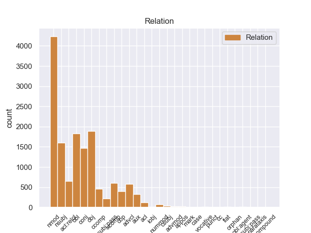
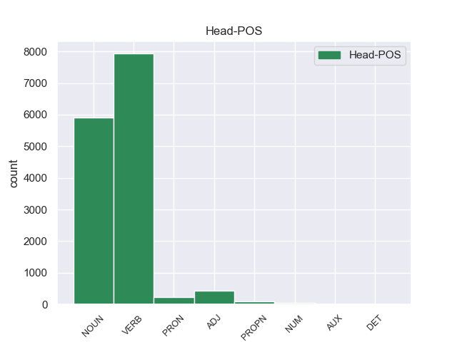
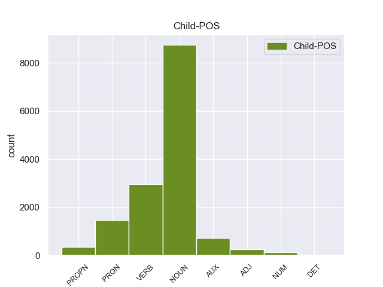

Distribution of features within this leaf



Agreement Rules sorted by frequency.
- When the dependent token is the nominal modifier(nmod) of the head token, and the dependent token is NOUN.
1 Υποστήριξε _ _ _ _ 0 _ _ _
2 πως _ _ _ _ 0 _ _ _
3 τα _ _ _ _ 0 _ _ _
4 ανθρώπινα _ _ _ _ 0 _ _ _
5 δικαιώματα _ _ _ _ 0 _ _ _
6 των _ _ _ _ 0 _ _ _
7 Θιβετιανών _ _ _ _ 0 _ _ _
8 παραβιάζονται _ _ _ _ 0 _ _ _
9 μέσω _ _ _ _ 0 _ _ _
10 διακρίσεων _ _ _ _ 0 _ _ _
11 , _ _ _ _ 0 _ _ _
12 σε _ _ _ _ 0 _ _ _
13 εφαρμογή εφαρμογή NOUN NOUN Case=Acc|Gender=Fem|Number=Sing 0 _ _ _
14 μιας _ _ _ _ 0 _ _ _
15 πολιτικής πολιτική NOUN NOUN Case=Gen|Gender=Fem|Number=Sing 13 nmod _ _
16 που _ _ _ _ 0 _ _ _
17 οι _ _ _ _ 0 _ _ _
18 Κινέζοι _ _ _ _ 0 _ _ _
19 αποκαλούν _ _ _ _ 0 _ _ _
20 " _ _ _ _ 0 _ _ _
21 διαχωρισμός _ _ _ _ 0 _ _ _
22 και _ _ _ _ 0 _ _ _
23 αφομοίωση _ _ _ _ 0 _ _ _
24 " _ _ _ _ 0 _ _ _
25 . _ _ _ _ 0 _ _ _
1 « _ _ _ _ 0 _ _ _
2 Δεκαεννέα _ _ _ _ 0 _ _ _
3 κρατούμενοι _ _ _ _ 0 _ _ _
4 , _ _ _ _ 0 _ _ _
5 μέλη _ _ _ _ 0 _ _ _
6 της _ _ _ _ 0 _ _ _
7 Αλ _ _ _ _ 0 _ _ _
8 Κάιντα _ _ _ _ 0 _ _ _
9 και _ _ _ _ 0 _ _ _
10 της _ _ _ _ 0 _ _ _
11 Ανσάρ _ _ _ _ 0 _ _ _
12 αλ-Σούνα _ _ _ _ 0 _ _ _
13 , _ _ _ _ 0 _ _ _
14 απέδρασαν _ _ _ _ 0 _ _ _
15 σ _ _ _ _ 0 _ _ _
16 τις _ _ _ _ 0 _ _ _
17 03:30 _ _ _ _ 0 _ _ _
18 από _ _ _ _ 0 _ _ _
19 τη _ _ _ _ 0 _ _ _
20 φυλακή _ _ _ _ 0 _ _ _
21 , _ _ _ _ 0 _ _ _
22 αφού _ _ _ _ 0 _ _ _
23 αποκοίμισαν αποκοιμίζω VERB VERB Aspect=Perf|Mood=Ind|Number=Plur|Person=3|Tense=Past|VerbForm=Fin|Voice=Act 0 _ _ _
24 τους _ _ _ _ 0 _ _ _
25 δεσμοφύλακες δεσμοφύλακας NOUN NOUN Case=Acc|Gender=Masc|Number=Plur 23 obj _ _
26 και _ _ _ _ 0 _ _ _
27 τους _ _ _ _ 0 _ _ _
28 υπόλοιπους _ _ _ _ 0 _ _ _
29 κρατούμενους _ _ _ _ 0 _ _ _
30 . _ _ _ _ 0 _ _ _
1 Υποστήριξε _ _ _ _ 0 _ _ _
2 πως _ _ _ _ 0 _ _ _
3 τα _ _ _ _ 0 _ _ _
4 ανθρώπινα _ _ _ _ 0 _ _ _
5 δικαιώματα _ _ _ _ 0 _ _ _
6 των _ _ _ _ 0 _ _ _
7 Θιβετιανών _ _ _ _ 0 _ _ _
8 παραβιάζονται παραβιάζω VERB VERB Aspect=Imp|Mood=Ind|Number=Plur|Person=3|Tense=Pres|VerbForm=Fin|Voice=Pass 0 _ _ _
9 μέσω _ _ _ _ 0 _ _ _
10 διακρίσεων διάκριση NOUN NOUN Case=Gen|Gender=Fem|Number=Plur 8 obl _ SpaceAfter=No
11 , _ _ _ _ 0 _ _ _
12 σε _ _ _ _ 0 _ _ _
13 εφαρμογή _ _ _ _ 0 _ _ _
14 μιας _ _ _ _ 0 _ _ _
15 πολιτικής _ _ _ _ 0 _ _ _
16 που _ _ _ _ 0 _ _ _
17 οι _ _ _ _ 0 _ _ _
18 Κινέζοι _ _ _ _ 0 _ _ _
19 αποκαλούν _ _ _ _ 0 _ _ _
20 " _ _ _ _ 0 _ _ _
21 διαχωρισμός _ _ _ _ 0 _ _ _
22 και _ _ _ _ 0 _ _ _
23 αφομοίωση _ _ _ _ 0 _ _ _
24 " _ _ _ _ 0 _ _ _
25 . _ _ _ _ 0 _ _ _
1 « _ _ _ _ 0 _ _ _
2 Δεκαεννέα _ _ _ _ 0 _ _ _
3 κρατούμενοι κρατούμενος NOUN NOUN Case=Nom|Gender=Masc|Number=Plur 14 nsubj _ SpaceAfter=No
4 , _ _ _ _ 0 _ _ _
5 μέλη _ _ _ _ 0 _ _ _
6 της _ _ _ _ 0 _ _ _
7 Αλ _ _ _ _ 0 _ _ _
8 Κάιντα _ _ _ _ 0 _ _ _
9 και _ _ _ _ 0 _ _ _
10 της _ _ _ _ 0 _ _ _
11 Ανσάρ _ _ _ _ 0 _ _ _
12 αλ-Σούνα _ _ _ _ 0 _ _ _
13 , _ _ _ _ 0 _ _ _
14 απέδρασαν αποδιδρώ VERB VERB Aspect=Perf|Mood=Ind|Number=Plur|Person=3|Tense=Past|VerbForm=Fin|Voice=Act 0 _ _ _
15 σ _ _ _ _ 0 _ _ _
16 τις _ _ _ _ 0 _ _ _
17 03:30 _ _ _ _ 0 _ _ _
18 από _ _ _ _ 0 _ _ _
19 τη _ _ _ _ 0 _ _ _
20 φυλακή _ _ _ _ 0 _ _ _
21 , _ _ _ _ 0 _ _ _
22 αφού _ _ _ _ 0 _ _ _
23 αποκοίμισαν _ _ _ _ 0 _ _ _
24 τους _ _ _ _ 0 _ _ _
25 δεσμοφύλακες _ _ _ _ 0 _ _ _
26 και _ _ _ _ 0 _ _ _
27 τους _ _ _ _ 0 _ _ _
28 υπόλοιπους _ _ _ _ 0 _ _ _
29 κρατούμενους _ _ _ _ 0 _ _ _
30 . _ _ _ _ 0 _ _ _
1 Υποστήριξε _ _ _ _ 0 _ _ _
2 πως _ _ _ _ 0 _ _ _
3 τα _ _ _ _ 0 _ _ _
4 ανθρώπινα _ _ _ _ 0 _ _ _
5 δικαιώματα _ _ _ _ 0 _ _ _
6 των _ _ _ _ 0 _ _ _
7 Θιβετιανών _ _ _ _ 0 _ _ _
8 παραβιάζονται _ _ _ _ 0 _ _ _
9 μέσω _ _ _ _ 0 _ _ _
10 διακρίσεων _ _ _ _ 0 _ _ _
11 , _ _ _ _ 0 _ _ _
12 σε _ _ _ _ 0 _ _ _
13 εφαρμογή _ _ _ _ 0 _ _ _
14 μιας _ _ _ _ 0 _ _ _
15 πολιτικής _ _ _ _ 0 _ _ _
16 που _ _ _ _ 0 _ _ _
17 οι _ _ _ _ 0 _ _ _
18 Κινέζοι _ _ _ _ 0 _ _ _
19 αποκαλούν _ _ _ _ 0 _ _ _
20 " _ _ _ _ 0 _ _ _
21 διαχωρισμός διαχωρισμός NOUN NOUN Case=Nom|Gender=Masc|Number=Sing 0 _ _ _
22 και _ _ _ _ 0 _ _ _
23 αφομοίωση αφομοίωση NOUN NOUN Case=Nom|Gender=Fem|Number=Sing 21 conj _ SpaceAfter=No
24 " _ _ _ _ 0 _ _ _
25 . _ _ _ _ 0 _ _ _
1 Σ _ _ _ _ 0 _ _ _
2 το _ _ _ _ 0 _ _ _
3 μεταξύ _ _ _ _ 0 _ _ _
4 , _ _ _ _ 0 _ _ _
5 τα _ _ _ _ 0 _ _ _
6 κρατικά _ _ _ _ 0 _ _ _
7 μέσα _ _ _ _ 0 _ _ _
8 ενημέρωσης _ _ _ _ 0 _ _ _
9 της _ _ _ _ 0 _ _ _
10 Συρίας _ _ _ _ 0 _ _ _
11 μετέδωσαν _ _ _ _ 0 _ _ _
12 την _ _ _ _ 0 _ _ _
13 Κυριακή _ _ _ _ 0 _ _ _
14 ότι _ _ _ _ 0 _ _ _
15 " _ _ _ _ 0 _ _ _
16 το _ _ _ _ 0 _ _ _
17 Ανώτατο _ _ _ _ 0 _ _ _
18 Δικαστικό _ _ _ _ 0 _ _ _
19 Συμβούλιο _ _ _ _ 0 _ _ _
20 της _ _ _ _ 0 _ _ _
21 Συρίας _ _ _ _ 0 _ _ _
22 ακύρωσε _ _ _ _ 0 _ _ _
23 νομικές _ _ _ _ 0 _ _ _
24 διαδικασίες _ _ _ _ 0 _ _ _
25 σε _ _ _ _ 0 _ _ _
26 βάρος _ _ _ _ 0 _ _ _
27 προσωπικοτήτων _ _ _ _ 0 _ _ _
28 της _ _ _ _ 0 _ _ _
29 Αντιπολίτευσης _ _ _ _ 0 _ _ _
30 που _ _ _ _ 0 _ _ _
31 βρίσκονται _ _ _ _ 0 _ _ _
32 σ _ _ _ _ 0 _ _ _
33 το _ _ _ _ 0 _ _ _
34 εξωτερικό _ _ _ _ 0 _ _ _
35 , _ _ _ _ 0 _ _ _
36 έτσι _ _ _ _ 0 _ _ _
37 ώστε _ _ _ _ 0 _ _ _
38 να _ _ _ _ 0 _ _ _
39 μπορέσουν μπορώ VERB VERB Aspect=Perf|Mood=Ind|Number=Plur|Person=3|VerbForm=Fin|Voice=Act 0 _ _ _
40 να _ _ _ _ 0 _ _ _
41 επιστρέψουν επιστρέφω VERB VERB Aspect=Perf|Mood=Ind|Number=Plur|Person=3|VerbForm=Fin|Voice=Act 39 xcomp _ _
42 σ _ _ _ _ 0 _ _ _
43 τη _ _ _ _ 0 _ _ _
44 Συρία _ _ _ _ 0 _ _ _
45 για _ _ _ _ 0 _ _ _
46 να _ _ _ _ 0 _ _ _
47 συμμετάσχουν _ _ _ _ 0 _ _ _
48 σε _ _ _ _ 0 _ _ _
49 εθνικό _ _ _ _ 0 _ _ _
50 διάλογο _ _ _ _ 0 _ _ _
51 που _ _ _ _ 0 _ _ _
52 πρότεινε _ _ _ _ 0 _ _ _
53 ο _ _ _ _ 0 _ _ _
54 Μπασάρ _ _ _ _ 0 _ _ _
55 αλ _ _ _ _ 0 _ _ _
56 Άσαντ _ _ _ _ 0 _ _ _
57 σ _ _ _ _ 0 _ _ _
58 τις _ _ _ _ 0 _ _ _
59 αρχές _ _ _ _ 0 _ _ _
60 του _ _ _ _ 0 _ _ _
61 μήνα _ _ _ _ 0 _ _ _
62 " _ _ _ _ 0 _ _ _
63 . _ _ _ _ 0 _ _ _
1 Η _ _ _ _ 0 _ _ _
2 πρώτη _ _ _ _ 0 _ _ _
3 ειδοποίηση _ _ _ _ 0 _ _ _
4 θα _ _ _ _ 0 _ _ _
5 γίνεται _ _ _ _ 0 _ _ _
6 με _ _ _ _ 0 _ _ _
7 την _ _ _ _ 0 _ _ _
8 παρέλευση _ _ _ _ 0 _ _ _
9 πέντε _ _ _ _ 0 _ _ _
10 χρόνων _ _ _ _ 0 _ _ _
11 από _ _ _ _ 0 _ _ _
12 την _ _ _ _ 0 _ _ _
13 ημερομηνία ημερομηνία NOUN NOUN Case=Acc|Gender=Fem|Number=Sing 0 _ _ _
14 που _ _ _ _ 0 _ _ _
15 ανοίχθηκε ανοίγω VERB VERB Aspect=Perf|Mood=Ind|Number=Sing|Person=3|Tense=Past|VerbForm=Fin|Voice=Pass 13 acl:relcl _ _
16 ο _ _ _ _ 0 _ _ _
17 λογαριασμός _ _ _ _ 0 _ _ _
18 , _ _ _ _ 0 _ _ _
19 η _ _ _ _ 0 _ _ _
20 δεύτερη _ _ _ _ 0 _ _ _
21 σ _ _ _ _ 0 _ _ _
22 την _ _ _ _ 0 _ _ _
23 10ετία _ _ _ _ 0 _ _ _
24 και _ _ _ _ 0 _ _ _
25 η _ _ _ _ 0 _ _ _
26 τρίτη _ _ _ _ 0 _ _ _
27 σ _ _ _ _ 0 _ _ _
28 την _ _ _ _ 0 _ _ _
29 15ετία _ _ _ _ 0 _ _ _
30 . _ _ _ _ 0 _ _ _
1 Η _ _ _ _ 0 _ _ _
2 δράση _ _ _ _ 0 _ _ _
3 3 _ _ _ _ 0 _ _ _
4 περιλαμβάνει _ _ _ _ 0 _ _ _
5 τις _ _ _ _ 0 _ _ _
6 πρωτοβουλίες _ _ _ _ 0 _ _ _
7 σ _ _ _ _ 0 _ _ _
8 τον _ _ _ _ 0 _ _ _
9 τομέα _ _ _ _ 0 _ _ _
10 της _ _ _ _ 0 _ _ _
11 νεολαίας _ _ _ _ 0 _ _ _
12 , _ _ _ _ 0 _ _ _
13 η _ _ _ _ 0 _ _ _
14 δράση _ _ _ _ 0 _ _ _
15 4 _ _ _ _ 0 _ _ _
16 την _ _ _ _ 0 _ _ _
17 υποστήριξη _ _ _ _ 0 _ _ _
18 πρωτοβουλιών _ _ _ _ 0 _ _ _
19 που που PRON PRON Case=Nom|Gender=Fem|Number=Plur|Person=3|PronType=Rel 20 nsubj _ _
20 ξεπερνούν ξεπερνώ VERB VERB Aspect=Imp|Mood=Ind|Number=Plur|Person=3|Tense=Pres|VerbForm=Fin|Voice=Act 0 _ _ _
21 το _ _ _ _ 0 _ _ _
22 πλαίσιο _ _ _ _ 0 _ _ _
23 των _ _ _ _ 0 _ _ _
24 μεμονωμένων _ _ _ _ 0 _ _ _
25 προγραμμάτων _ _ _ _ 0 _ _ _
26 και _ _ _ _ 0 _ _ _
27 διεξάγονται _ _ _ _ 0 _ _ _
28 από _ _ _ _ 0 _ _ _
29 κοινού _ _ _ _ 0 _ _ _
30 με _ _ _ _ 0 _ _ _
31 τα _ _ _ _ 0 _ _ _
32 προγράμματα _ _ _ _ 0 _ _ _
33 LEONARDO _ _ _ _ 0 _ _ _
34 και _ _ _ _ 0 _ _ _
35 ΣΩΚΡΑΤΗΣ _ _ _ _ 0 _ _ _
36 . _ _ _ _ 0 _ _ _
1 Η _ _ _ _ 0 _ _ _
2 δράση _ _ _ _ 0 _ _ _
3 3 _ _ _ _ 0 _ _ _
4 περιλαμβάνει _ _ _ _ 0 _ _ _
5 τις _ _ _ _ 0 _ _ _
6 πρωτοβουλίες _ _ _ _ 0 _ _ _
7 σ _ _ _ _ 0 _ _ _
8 τον _ _ _ _ 0 _ _ _
9 τομέα _ _ _ _ 0 _ _ _
10 της _ _ _ _ 0 _ _ _
11 νεολαίας _ _ _ _ 0 _ _ _
12 , _ _ _ _ 0 _ _ _
13 η _ _ _ _ 0 _ _ _
14 δράση _ _ _ _ 0 _ _ _
15 4 _ _ _ _ 0 _ _ _
16 την _ _ _ _ 0 _ _ _
17 υποστήριξη _ _ _ _ 0 _ _ _
18 πρωτοβουλιών _ _ _ _ 0 _ _ _
19 που _ _ _ _ 0 _ _ _
20 ξεπερνούν ξεπερνώ VERB VERB Aspect=Imp|Mood=Ind|Number=Plur|Person=3|Tense=Pres|VerbForm=Fin|Voice=Act 0 _ _ _
21 το _ _ _ _ 0 _ _ _
22 πλαίσιο _ _ _ _ 0 _ _ _
23 των _ _ _ _ 0 _ _ _
24 μεμονωμένων _ _ _ _ 0 _ _ _
25 προγραμμάτων _ _ _ _ 0 _ _ _
26 και _ _ _ _ 0 _ _ _
27 διεξάγονται διεξάγω VERB VERB Aspect=Imp|Mood=Ind|Number=Plur|Person=3|Tense=Pres|VerbForm=Fin|Voice=Pass 20 conj _ _
28 από _ _ _ _ 0 _ _ _
29 κοινού _ _ _ _ 0 _ _ _
30 με _ _ _ _ 0 _ _ _
31 τα _ _ _ _ 0 _ _ _
32 προγράμματα _ _ _ _ 0 _ _ _
33 LEONARDO _ _ _ _ 0 _ _ _
34 και _ _ _ _ 0 _ _ _
35 ΣΩΚΡΑΤΗΣ _ _ _ _ 0 _ _ _
36 . _ _ _ _ 0 _ _ _
1 « _ _ _ _ 0 _ _ _
2 Δεκαεννέα _ _ _ _ 0 _ _ _
3 κρατούμενοι _ _ _ _ 0 _ _ _
4 , _ _ _ _ 0 _ _ _
5 μέλη _ _ _ _ 0 _ _ _
6 της _ _ _ _ 0 _ _ _
7 Αλ _ _ _ _ 0 _ _ _
8 Κάιντα _ _ _ _ 0 _ _ _
9 και _ _ _ _ 0 _ _ _
10 της _ _ _ _ 0 _ _ _
11 Ανσάρ _ _ _ _ 0 _ _ _
12 αλ-Σούνα _ _ _ _ 0 _ _ _
13 , _ _ _ _ 0 _ _ _
14 απέδρασαν αποδιδρώ VERB VERB Aspect=Perf|Mood=Ind|Number=Plur|Person=3|Tense=Past|VerbForm=Fin|Voice=Act 0 _ _ _
15 σ _ _ _ _ 0 _ _ _
16 τις _ _ _ _ 0 _ _ _
17 03:30 _ _ _ _ 0 _ _ _
18 από _ _ _ _ 0 _ _ _
19 τη _ _ _ _ 0 _ _ _
20 φυλακή _ _ _ _ 0 _ _ _
21 , _ _ _ _ 0 _ _ _
22 αφού _ _ _ _ 0 _ _ _
23 αποκοίμισαν αποκοιμίζω VERB VERB Aspect=Perf|Mood=Ind|Number=Plur|Person=3|Tense=Past|VerbForm=Fin|Voice=Act 14 advcl _ _
24 τους _ _ _ _ 0 _ _ _
25 δεσμοφύλακες _ _ _ _ 0 _ _ _
26 και _ _ _ _ 0 _ _ _
27 τους _ _ _ _ 0 _ _ _
28 υπόλοιπους _ _ _ _ 0 _ _ _
29 κρατούμενους _ _ _ _ 0 _ _ _
30 . _ _ _ _ 0 _ _ _
1 Πιστεύω _ _ _ _ 0 _ _ _
2 ότι _ _ _ _ 0 _ _ _
3 όλες _ _ _ _ 0 _ _ _
4 οι _ _ _ _ 0 _ _ _
5 προσπάθειες _ _ _ _ 0 _ _ _
6 για _ _ _ _ 0 _ _ _
7 να _ _ _ _ 0 _ _ _
8 θέσουμε _ _ _ _ 0 _ _ _
9 τέλος _ _ _ _ 0 _ _ _
10 σ' _ _ _ _ 0 _ _ _
11 αυτό _ _ _ _ 0 _ _ _
12 είναι είμαι AUX AUX Aspect=Imp|Mood=Ind|Number=Plur|Person=3|Tense=Pres|VerbForm=Fin|Voice=Pass 13 cop _ _
13 λίγες λίγος ADJ ADJ Case=Nom|Gender=Fem|Number=Plur 0 _ _ _
14 . _ _ _ _ 0 _ _ _
1 Ο _ _ _ _ 0 _ _ _
2 Υπουργός _ _ _ _ 0 _ _ _
3 Εσωτερικών _ _ _ _ 0 _ _ _
4 της _ _ _ _ 0 _ _ _
5 Αλγερίας _ _ _ _ 0 _ _ _
6 , _ _ _ _ 0 _ _ _
7 Νταχού _ _ _ _ 0 _ _ _
8 Ουλντ _ _ _ _ 0 _ _ _
9 Καμπλία _ _ _ _ 0 _ _ _
10 , _ _ _ _ 0 _ _ _
11 ανέφερε αναφέρω VERB VERB Aspect=Perf|Mood=Ind|Number=Sing|Person=3|Tense=Past|VerbForm=Fin|Voice=Act 0 _ _ _
12 ότι _ _ _ _ 0 _ _ _
13 " _ _ _ _ 0 _ _ _
14 η _ _ _ _ 0 _ _ _
15 χώρα _ _ _ _ 0 _ _ _
16 του _ _ _ _ 0 _ _ _
17 δεν _ _ _ _ 0 _ _ _
18 θα _ _ _ _ 0 _ _ _
19 διαπραγματευτεί διαπραγματεύομαι VERB VERB Aspect=Perf|Mood=Ind|Number=Sing|Person=3|VerbForm=Fin|Voice=Pass 11 ccomp _ _
20 με _ _ _ _ 0 _ _ _
21 τρομοκράτες _ _ _ _ 0 _ _ _
22 " _ _ _ _ 0 _ _ _
23 . _ _ _ _ 0 _ _ _
1 Για _ _ _ _ 0 _ _ _
2 το _ _ _ _ 0 _ _ _
3 ζήτημα _ _ _ _ 0 _ _ _
4 αυτό _ _ _ _ 0 _ _ _
5 έχει _ _ _ _ 0 _ _ _
6 ξεκινήσει _ _ _ _ 0 _ _ _
7 και _ _ _ _ 0 _ _ _
8 μία _ _ _ _ 0 _ _ _
9 νομική _ _ _ _ 0 _ _ _
10 εξέταση _ _ _ _ 0 _ _ _
11 και _ _ _ _ 0 _ _ _
12 ο _ _ _ _ 0 _ _ _
13 Γενικός _ _ _ _ 0 _ _ _
14 Εισαγγελέας _ _ _ _ 0 _ _ _
15 αποφάνθηκε _ _ _ _ 0 _ _ _
16 με _ _ _ _ 0 _ _ _
17 σαφήνεια _ _ _ _ 0 _ _ _
18 ότι _ _ _ _ 0 _ _ _
19 είναι _ _ _ _ 0 _ _ _
20 σωστή _ _ _ _ 0 _ _ _
21 η _ _ _ _ 0 _ _ _
22 δική _ _ _ _ 0 _ _ _
23 μου μου PRON PRON Case=Gen|Gender=Masc|Number=Sing|Person=1|Poss=Yes|PronType=Prs 24 nmod _ _
24 άποψη άποψη NOUN NOUN Case=Nom|Gender=Fem|Number=Sing 0 _ _ _
25 , _ _ _ _ 0 _ _ _
26 και _ _ _ _ 0 _ _ _
27 άποψη _ _ _ _ 0 _ _ _
28 της _ _ _ _ 0 _ _ _
29 Επιτροπής _ _ _ _ 0 _ _ _
30 Περιβάλλοντος _ _ _ _ 0 _ _ _
31 , _ _ _ _ 0 _ _ _
32 και _ _ _ _ 0 _ _ _
33 όχι _ _ _ _ 0 _ _ _
34 αυτή _ _ _ _ 0 _ _ _
35 της _ _ _ _ 0 _ _ _
36 Επιτροπής _ _ _ _ 0 _ _ _
37 . _ _ _ _ 0 _ _ _
1 Ο _ _ _ _ 0 _ _ _
2 λόγος _ _ _ _ 0 _ _ _
3 που _ _ _ _ 0 _ _ _
4 διαθέτουμε _ _ _ _ 0 _ _ _
5 κανόνες _ _ _ _ 0 _ _ _
6 για _ _ _ _ 0 _ _ _
7 τις _ _ _ _ 0 _ _ _
8 κρατικές _ _ _ _ 0 _ _ _
9 ενισχύσεις _ _ _ _ 0 _ _ _
10 είναι _ _ _ _ 0 _ _ _
11 η _ _ _ _ 0 _ _ _
12 διασφάλιση _ _ _ _ 0 _ _ _
13 της _ _ _ _ 0 _ _ _
14 ορθής _ _ _ _ 0 _ _ _
15 λειτουργίας _ _ _ _ 0 _ _ _
16 της _ _ _ _ 0 _ _ _
17 κοινής _ _ _ _ 0 _ _ _
18 αγοράς _ _ _ _ 0 _ _ _
19 και _ _ _ _ 0 _ _ _
20 πρέπει _ _ _ _ 0 _ _ _
21 να _ _ _ _ 0 _ _ _
22 καταργήσουμε _ _ _ _ 0 _ _ _
23 τους _ _ _ _ 0 _ _ _
24 φραγμούς _ _ _ _ 0 _ _ _
25 σ _ _ _ _ 0 _ _ _
26 τον _ _ _ _ 0 _ _ _
27 ανταγωνισμό _ _ _ _ 0 _ _ _
28 και _ _ _ _ 0 _ _ _
29 σ _ _ _ _ 0 _ _ _
30 το _ _ _ _ 0 _ _ _
31 ελεύθερο _ _ _ _ 0 _ _ _
32 εμπόριο _ _ _ _ 0 _ _ _
33 προκειμένου _ _ _ _ 0 _ _ _
34 να _ _ _ _ 0 _ _ _
35 επιτρέψουμε _ _ _ _ 0 _ _ _
36 σ _ _ _ _ 0 _ _ _
37 την _ _ _ _ 0 _ _ _
38 Επιτροπή _ _ _ _ 0 _ _ _
39 να _ _ _ _ 0 _ _ _
40 ασκεί _ _ _ _ 0 _ _ _
41 αστυνόμευση _ _ _ _ 0 _ _ _
42 , _ _ _ _ 0 _ _ _
43 ενώ _ _ _ _ 0 _ _ _
44 το _ _ _ _ 0 _ _ _
45 Συμβούλιο _ _ _ _ 0 _ _ _
46 θα _ _ _ _ 0 _ _ _
47 έπρεπε πρέπει AUX AUX Aspect=Imp|Mood=Ind|Number=Sing|Person=3|Tense=Past|VerbForm=Fin|Voice=Act 50 aux _ _
48 πραγματικά _ _ _ _ 0 _ _ _
49 να _ _ _ _ 0 _ _ _
50 ντρέπεται ντρέπομαι VERB VERB Aspect=Imp|Mood=Ind|Number=Sing|Person=3|Tense=Pres|VerbForm=Fin|Voice=Pass 0 _ _ _
51 που _ _ _ _ 0 _ _ _
52 προκαλεί _ _ _ _ 0 _ _ _
53 την _ _ _ _ 0 _ _ _
54 Επιτροπή _ _ _ _ 0 _ _ _
55 σε _ _ _ _ 0 _ _ _
56 αυτόν _ _ _ _ 0 _ _ _
57 τον _ _ _ _ 0 _ _ _
58 συγκεκριμένο _ _ _ _ 0 _ _ _
59 τομέα _ _ _ _ 0 _ _ _
60 . _ _ _ _ 0 _ _ _
1 Σ _ _ _ _ 0 _ _ _
2 το _ _ _ _ 0 _ _ _
3 μεταξύ _ _ _ _ 0 _ _ _
4 , _ _ _ _ 0 _ _ _
5 τα _ _ _ _ 0 _ _ _
6 κρατικά _ _ _ _ 0 _ _ _
7 μέσα _ _ _ _ 0 _ _ _
8 ενημέρωσης _ _ _ _ 0 _ _ _
9 της _ _ _ _ 0 _ _ _
10 Συρίας _ _ _ _ 0 _ _ _
11 μετέδωσαν _ _ _ _ 0 _ _ _
12 την _ _ _ _ 0 _ _ _
13 Κυριακή _ _ _ _ 0 _ _ _
14 ότι _ _ _ _ 0 _ _ _
15 " _ _ _ _ 0 _ _ _
16 το _ _ _ _ 0 _ _ _
17 Ανώτατο _ _ _ _ 0 _ _ _
18 Δικαστικό _ _ _ _ 0 _ _ _
19 Συμβούλιο _ _ _ _ 0 _ _ _
20 της _ _ _ _ 0 _ _ _
21 Συρίας _ _ _ _ 0 _ _ _
22 ακύρωσε _ _ _ _ 0 _ _ _
23 νομικές _ _ _ _ 0 _ _ _
24 διαδικασίες _ _ _ _ 0 _ _ _
25 σε _ _ _ _ 0 _ _ _
26 βάρος _ _ _ _ 0 _ _ _
27 προσωπικοτήτων _ _ _ _ 0 _ _ _
28 της _ _ _ _ 0 _ _ _
29 Αντιπολίτευσης _ _ _ _ 0 _ _ _
30 που _ _ _ _ 0 _ _ _
31 βρίσκονται _ _ _ _ 0 _ _ _
32 σ _ _ _ _ 0 _ _ _
33 το _ _ _ _ 0 _ _ _
34 εξωτερικό _ _ _ _ 0 _ _ _
35 , _ _ _ _ 0 _ _ _
36 έτσι _ _ _ _ 0 _ _ _
37 ώστε _ _ _ _ 0 _ _ _
38 να _ _ _ _ 0 _ _ _
39 μπορέσουν _ _ _ _ 0 _ _ _
40 να _ _ _ _ 0 _ _ _
41 επιστρέψουν _ _ _ _ 0 _ _ _
42 σ _ _ _ _ 0 _ _ _
43 τη _ _ _ _ 0 _ _ _
44 Συρία _ _ _ _ 0 _ _ _
45 για _ _ _ _ 0 _ _ _
46 να _ _ _ _ 0 _ _ _
47 συμμετάσχουν _ _ _ _ 0 _ _ _
48 σε _ _ _ _ 0 _ _ _
49 εθνικό _ _ _ _ 0 _ _ _
50 διάλογο _ _ _ _ 0 _ _ _
51 που που PRON PRON Case=Acc|Gender=Masc|Number=Sing|Person=3|PronType=Rel 52 obj _ _
52 πρότεινε προτείνω VERB VERB Aspect=Perf|Mood=Ind|Number=Sing|Person=3|Tense=Past|VerbForm=Fin|Voice=Act 0 _ _ _
53 ο _ _ _ _ 0 _ _ _
54 Μπασάρ _ _ _ _ 0 _ _ _
55 αλ _ _ _ _ 0 _ _ _
56 Άσαντ _ _ _ _ 0 _ _ _
57 σ _ _ _ _ 0 _ _ _
58 τις _ _ _ _ 0 _ _ _
59 αρχές _ _ _ _ 0 _ _ _
60 του _ _ _ _ 0 _ _ _
61 μήνα _ _ _ _ 0 _ _ _
62 " _ _ _ _ 0 _ _ _
63 . _ _ _ _ 0 _ _ _
1 Υποστήριξε _ _ _ _ 0 _ _ _
2 πως _ _ _ _ 0 _ _ _
3 τα _ _ _ _ 0 _ _ _
4 ανθρώπινα _ _ _ _ 0 _ _ _
5 δικαιώματα δικαίωμα NOUN NOUN Case=Nom|Gender=Neut|Number=Plur 0 _ _ _
6 των _ _ _ _ 0 _ _ _
7 Θιβετιανών θιβετιανός PROPN PROPN Case=Gen|Gender=Masc|Number=Plur 5 nmod _ _
8 παραβιάζονται _ _ _ _ 0 _ _ _
9 μέσω _ _ _ _ 0 _ _ _
10 διακρίσεων _ _ _ _ 0 _ _ _
11 , _ _ _ _ 0 _ _ _
12 σε _ _ _ _ 0 _ _ _
13 εφαρμογή _ _ _ _ 0 _ _ _
14 μιας _ _ _ _ 0 _ _ _
15 πολιτικής _ _ _ _ 0 _ _ _
16 που _ _ _ _ 0 _ _ _
17 οι _ _ _ _ 0 _ _ _
18 Κινέζοι _ _ _ _ 0 _ _ _
19 αποκαλούν _ _ _ _ 0 _ _ _
20 " _ _ _ _ 0 _ _ _
21 διαχωρισμός _ _ _ _ 0 _ _ _
22 και _ _ _ _ 0 _ _ _
23 αφομοίωση _ _ _ _ 0 _ _ _
24 " _ _ _ _ 0 _ _ _
25 . _ _ _ _ 0 _ _ _
1 Υποστήριξε _ _ _ _ 0 _ _ _
2 πως _ _ _ _ 0 _ _ _
3 τα _ _ _ _ 0 _ _ _
4 ανθρώπινα _ _ _ _ 0 _ _ _
5 δικαιώματα δικαίωμα NOUN NOUN Case=Nom|Gender=Neut|Number=Plur 8 nsubj:pass _ _
6 των _ _ _ _ 0 _ _ _
7 Θιβετιανών _ _ _ _ 0 _ _ _
8 παραβιάζονται παραβιάζω VERB VERB Aspect=Imp|Mood=Ind|Number=Plur|Person=3|Tense=Pres|VerbForm=Fin|Voice=Pass 0 _ _ _
9 μέσω _ _ _ _ 0 _ _ _
10 διακρίσεων _ _ _ _ 0 _ _ _
11 , _ _ _ _ 0 _ _ _
12 σε _ _ _ _ 0 _ _ _
13 εφαρμογή _ _ _ _ 0 _ _ _
14 μιας _ _ _ _ 0 _ _ _
15 πολιτικής _ _ _ _ 0 _ _ _
16 που _ _ _ _ 0 _ _ _
17 οι _ _ _ _ 0 _ _ _
18 Κινέζοι _ _ _ _ 0 _ _ _
19 αποκαλούν _ _ _ _ 0 _ _ _
20 " _ _ _ _ 0 _ _ _
21 διαχωρισμός _ _ _ _ 0 _ _ _
22 και _ _ _ _ 0 _ _ _
23 αφομοίωση _ _ _ _ 0 _ _ _
24 " _ _ _ _ 0 _ _ _
25 . _ _ _ _ 0 _ _ _
1 « _ _ _ _ 0 _ _ _
2 Δεκαεννέα δεκαεννέα NUM NUM Case=Nom|Gender=Masc|Number=Plur|NumType=Card 3 nummod _ _
3 κρατούμενοι κρατούμενος NOUN NOUN Case=Nom|Gender=Masc|Number=Plur 0 _ _ _
4 , _ _ _ _ 0 _ _ _
5 μέλη _ _ _ _ 0 _ _ _
6 της _ _ _ _ 0 _ _ _
7 Αλ _ _ _ _ 0 _ _ _
8 Κάιντα _ _ _ _ 0 _ _ _
9 και _ _ _ _ 0 _ _ _
10 της _ _ _ _ 0 _ _ _
11 Ανσάρ _ _ _ _ 0 _ _ _
12 αλ-Σούνα _ _ _ _ 0 _ _ _
13 , _ _ _ _ 0 _ _ _
14 απέδρασαν _ _ _ _ 0 _ _ _
15 σ _ _ _ _ 0 _ _ _
16 τις _ _ _ _ 0 _ _ _
17 03:30 _ _ _ _ 0 _ _ _
18 από _ _ _ _ 0 _ _ _
19 τη _ _ _ _ 0 _ _ _
20 φυλακή _ _ _ _ 0 _ _ _
21 , _ _ _ _ 0 _ _ _
22 αφού _ _ _ _ 0 _ _ _
23 αποκοίμισαν _ _ _ _ 0 _ _ _
24 τους _ _ _ _ 0 _ _ _
25 δεσμοφύλακες _ _ _ _ 0 _ _ _
26 και _ _ _ _ 0 _ _ _
27 τους _ _ _ _ 0 _ _ _
28 υπόλοιπους _ _ _ _ 0 _ _ _
29 κρατούμενους _ _ _ _ 0 _ _ _
30 . _ _ _ _ 0 _ _ _
1 Αντί _ _ _ _ 0 _ _ _
2 αυτού αυτός PRON PRON Case=Gen|Gender=Neut|Number=Sing|Person=3|PronType=Dem 4 obl _ _
3 θα _ _ _ _ 0 _ _ _
4 περιοριστώ περιορίζω VERB VERB Aspect=Perf|Mood=Ind|Number=Sing|Person=1|VerbForm=Fin|Voice=Pass 0 _ _ _
5 σ _ _ _ _ 0 _ _ _
6 το _ _ _ _ 0 _ _ _
7 σημείο _ _ _ _ 0 _ _ _
8 της _ _ _ _ 0 _ _ _
9 συνεργασίας _ _ _ _ 0 _ _ _
10 που _ _ _ _ 0 _ _ _
11 αφορά _ _ _ _ 0 _ _ _
12 την _ _ _ _ 0 _ _ _
13 " _ _ _ _ 0 _ _ _
14 πρόσβαση _ _ _ _ 0 _ _ _
15 σε _ _ _ _ 0 _ _ _
16 έγγραφα _ _ _ _ 0 _ _ _
17 της _ _ _ _ 0 _ _ _
18 Επιτροπής _ _ _ _ 0 _ _ _
19 " _ _ _ _ 0 _ _ _
20 . _ _ _ _ 0 _ _ _
1 Πιστεύω _ _ _ _ 0 _ _ _
2 ότι _ _ _ _ 0 _ _ _
3 όλες _ _ _ _ 0 _ _ _
4 οι _ _ _ _ 0 _ _ _
5 προσπάθειες προσπάθεια NOUN NOUN Case=Nom|Gender=Fem|Number=Plur 0 _ _ _
6 για _ _ _ _ 0 _ _ _
7 να _ _ _ _ 0 _ _ _
8 θέσουμε θέτω VERB VERB Aspect=Perf|Mood=Ind|Number=Plur|Person=1|VerbForm=Fin|Voice=Act 5 acl _ _
9 τέλος _ _ _ _ 0 _ _ _
10 σ' _ _ _ _ 0 _ _ _
11 αυτό _ _ _ _ 0 _ _ _
12 είναι _ _ _ _ 0 _ _ _
13 λίγες _ _ _ _ 0 _ _ _
14 . _ _ _ _ 0 _ _ _
1 Οι _ _ _ _ 0 _ _ _
2 δύο _ _ _ _ 0 _ _ _
3 προτάσεις _ _ _ _ 0 _ _ _
4 οδηγίας _ _ _ _ 0 _ _ _
5 σχετικά _ _ _ _ 0 _ _ _
6 με _ _ _ _ 0 _ _ _
7 τη _ _ _ _ 0 _ _ _
8 σύναψη _ _ _ _ 0 _ _ _
9 συμβάσεων _ _ _ _ 0 _ _ _
10 θα _ _ _ _ 0 _ _ _
11 πρέπει _ _ _ _ 0 _ _ _
12 επομένως _ _ _ _ 0 _ _ _
13 να _ _ _ _ 0 _ _ _
14 επιτρέψουν _ _ _ _ 0 _ _ _
15 σ _ _ _ _ 0 _ _ _
16 την _ _ _ _ 0 _ _ _
17 πρωτοβάθμια πρωτοβάθμιος ADJ ADJ Case=Acc|Gender=Fem|Number=Sing 0 _ _ _
18 και _ _ _ _ 0 _ _ _
19 δευτεροβάθμια δευτεροβάθμιος ADJ ADJ Case=Acc|Gender=Fem|Number=Sing 17 conj _ _
20 αυτοδιοίκηση _ _ _ _ 0 _ _ _
21 , _ _ _ _ 0 _ _ _
22 καθώς _ _ _ _ 0 _ _ _
23 και _ _ _ _ 0 _ _ _
24 σ _ _ _ _ 0 _ _ _
25 τις _ _ _ _ 0 _ _ _
26 κρατικές _ _ _ _ 0 _ _ _
27 αρχές _ _ _ _ 0 _ _ _
28 να _ _ _ _ 0 _ _ _
29 προμηθεύονται _ _ _ _ 0 _ _ _
30 αγαθά _ _ _ _ 0 _ _ _
31 και _ _ _ _ 0 _ _ _
32 υπηρεσίες _ _ _ _ 0 _ _ _
33 με _ _ _ _ 0 _ _ _
34 τέτοιο _ _ _ _ 0 _ _ _
35 τρόπο _ _ _ _ 0 _ _ _
36 ώστε _ _ _ _ 0 _ _ _
37 η _ _ _ _ 0 _ _ _
38 επιβάρυνση _ _ _ _ 0 _ _ _
39 σ _ _ _ _ 0 _ _ _
40 το _ _ _ _ 0 _ _ _
41 περιβάλλον _ _ _ _ 0 _ _ _
42 να _ _ _ _ 0 _ _ _
43 είναι _ _ _ _ 0 _ _ _
44 όσο _ _ _ _ 0 _ _ _
45 το _ _ _ _ 0 _ _ _
46 δυνατόν _ _ _ _ 0 _ _ _
47 πιο _ _ _ _ 0 _ _ _
48 περιορισμένη _ _ _ _ 0 _ _ _
49 . _ _ _ _ 0 _ _ _
1 Ωστόσο _ _ _ _ 0 _ _ _
2 , _ _ _ _ 0 _ _ _
3 αυτό αυτός PRON PRON Case=Nom|Gender=Neut|Number=Sing|Person=3|PronType=Dem 7 nsubj:pass _ _
4 δεν _ _ _ _ 0 _ _ _
5 πρέπει _ _ _ _ 0 _ _ _
6 να _ _ _ _ 0 _ _ _
7 χρησιμοποιηθεί χρησιμοποιώ VERB VERB Aspect=Perf|Mood=Ind|Number=Sing|Person=3|VerbForm=Fin|Voice=Pass 0 _ _ _
8 ως _ _ _ _ 0 _ _ _
9 εμπόδιο _ _ _ _ 0 _ _ _
10 ή _ _ _ _ 0 _ _ _
11 φραγμός _ _ _ _ 0 _ _ _
12 για _ _ _ _ 0 _ _ _
13 την _ _ _ _ 0 _ _ _
14 ανάπτυξη _ _ _ _ 0 _ _ _
15 . _ _ _ _ 0 _ _ _
1 Υποστήριξε _ _ _ _ 0 _ _ _
2 πως _ _ _ _ 0 _ _ _
3 τα _ _ _ _ 0 _ _ _
4 ανθρώπινα _ _ _ _ 0 _ _ _
5 δικαιώματα _ _ _ _ 0 _ _ _
6 των _ _ _ _ 0 _ _ _
7 Θιβετιανών _ _ _ _ 0 _ _ _
8 παραβιάζονται _ _ _ _ 0 _ _ _
9 μέσω _ _ _ _ 0 _ _ _
10 διακρίσεων _ _ _ _ 0 _ _ _
11 , _ _ _ _ 0 _ _ _
12 σε _ _ _ _ 0 _ _ _
13 εφαρμογή _ _ _ _ 0 _ _ _
14 μιας _ _ _ _ 0 _ _ _
15 πολιτικής _ _ _ _ 0 _ _ _
16 που _ _ _ _ 0 _ _ _
17 οι _ _ _ _ 0 _ _ _
18 Κινέζοι Κινέζος PROPN PROPN Case=Nom|Gender=Masc|Number=Plur 19 nsubj _ _
19 αποκαλούν αποκαλώ VERB VERB Aspect=Imp|Mood=Ind|Number=Plur|Person=3|Tense=Pres|VerbForm=Fin|Voice=Act 0 _ _ _
20 " _ _ _ _ 0 _ _ _
21 διαχωρισμός _ _ _ _ 0 _ _ _
22 και _ _ _ _ 0 _ _ _
23 αφομοίωση _ _ _ _ 0 _ _ _
24 " _ _ _ _ 0 _ _ _
25 . _ _ _ _ 0 _ _ _
1 Αυτά _ _ _ _ 0 _ _ _
2 τα _ _ _ _ 0 _ _ _
3 ποσοστά _ _ _ _ 0 _ _ _
4 είναι _ _ _ _ 0 _ _ _
5 τα _ _ _ _ 0 _ _ _
6 πιο _ _ _ _ 0 _ _ _
7 χαμηλά _ _ _ _ 0 _ _ _
8 από _ _ _ _ 0 _ _ _
9 τότε _ _ _ _ 0 _ _ _
10 που _ _ _ _ 0 _ _ _
11 το _ _ _ _ 0 _ _ _
12 IFOP _ _ _ _ 0 _ _ _
13 ξεκίνησε ξεκινώ VERB VERB Aspect=Perf|Mood=Ind|Number=Sing|Person=3|Tense=Past|VerbForm=Fin|Voice=Act 0 _ _ _
14 δημοσκοπήσεις _ _ _ _ 0 _ _ _
15 σ _ _ _ _ 0 _ _ _
16 τη _ _ _ _ 0 _ _ _
17 Γαλλία Γαλλία PROPN PROPN Case=Acc|Gender=Fem|Number=Sing 13 obl _ _
18 μετά _ _ _ _ 0 _ _ _
19 τα _ _ _ _ 0 _ _ _
20 γεγονότα _ _ _ _ 0 _ _ _
21 της _ _ _ _ 0 _ _ _
22 11ης _ _ _ _ 0 _ _ _
23 Σεπτεμβρίου _ _ _ _ 0 _ _ _
24 2001 _ _ _ _ 0 _ _ _
25 . _ _ _ _ 0 _ _ _
1 Από _ _ _ _ 0 _ _ _
2 την _ _ _ _ 0 _ _ _
3 πλευρά _ _ _ _ 0 _ _ _
4 της _ _ _ _ 0 _ _ _
5 Ομάδας _ _ _ _ 0 _ _ _
6 των _ _ _ _ 0 _ _ _
7 Σοσιαλιστών _ _ _ _ 0 _ _ _
8 , _ _ _ _ 0 _ _ _
9 όσον _ _ _ _ 0 _ _ _
10 αφορά _ _ _ _ 0 _ _ _
11 την _ _ _ _ 0 _ _ _
12 έκθεση _ _ _ _ 0 _ _ _
13 του _ _ _ _ 0 _ _ _
14 κ. _ _ _ _ 0 _ _ _
15 Χατζηδάκη _ _ _ _ 0 _ _ _
16 , _ _ _ _ 0 _ _ _
17 είμαστε _ _ _ _ 0 _ _ _
18 ικανοποιημένοι _ _ _ _ 0 _ _ _
19 από _ _ _ _ 0 _ _ _
20 την _ _ _ _ 0 _ _ _
21 κοινή _ _ _ _ 0 _ _ _
22 θέση _ _ _ _ 0 _ _ _
23 που _ _ _ _ 0 _ _ _
24 επιτεύχθηκε _ _ _ _ 0 _ _ _
25 και _ _ _ _ 0 _ _ _
26 το _ _ _ _ 0 _ _ _
27 ίδιο ίδιος ADJ ADJ Case=Nom|Gender=Neut|Number=Sing 28 nsubj _ _
28 ισχύει ισχύω VERB VERB Aspect=Imp|Mood=Ind|Number=Sing|Person=3|Tense=Pres|VerbForm=Fin|Voice=Act 0 _ _ _
29 και _ _ _ _ 0 _ _ _
30 για _ _ _ _ 0 _ _ _
31 την _ _ _ _ 0 _ _ _
32 έκθεση _ _ _ _ 0 _ _ _
33 του _ _ _ _ 0 _ _ _
34 κ. _ _ _ _ 0 _ _ _
35 van _ _ _ _ 0 _ _ _
36 Dam _ _ _ _ 0 _ _ _
37 . _ _ _ _ 0 _ _ _
1 Αυτός _ _ _ _ 0 _ _ _
2 ο _ _ _ _ 0 _ _ _
3 χώρος _ _ _ _ 0 _ _ _
4 που _ _ _ _ 0 _ _ _
5 αποτελεί _ _ _ _ 0 _ _ _
6 μια _ _ _ _ 0 _ _ _
7 πλούσια _ _ _ _ 0 _ _ _
8 μορφολογία _ _ _ _ 0 _ _ _
9 εδάφους _ _ _ _ 0 _ _ _
10 με _ _ _ _ 0 _ _ _
11 λίμνες _ _ _ _ 0 _ _ _
12 , _ _ _ _ 0 _ _ _
13 βουνά _ _ _ _ 0 _ _ _
14 και _ _ _ _ 0 _ _ _
15 ποταμούς _ _ _ _ 0 _ _ _
16 διασχίζονταν _ _ _ _ 0 _ _ _
17 από _ _ _ _ 0 _ _ _
18 την _ _ _ _ 0 _ _ _
19 αρχαιότητα _ _ _ _ 0 _ _ _
20 από _ _ _ _ 0 _ _ _
21 τρεις _ _ _ _ 0 _ _ _
22 κύριες _ _ _ _ 0 _ _ _
23 οδούς _ _ _ _ 0 _ _ _
24 , _ _ _ _ 0 _ _ _
25 τις _ _ _ _ 0 _ _ _
26 κοιλάδες _ _ _ _ 0 _ _ _
27 του _ _ _ _ 0 _ _ _
28 Αξιού _ _ _ _ 0 _ _ _
29 και _ _ _ _ 0 _ _ _
30 του _ _ _ _ 0 _ _ _
31 Στρυμόνα _ _ _ _ 0 _ _ _
32 που _ _ _ _ 0 _ _ _
33 συνέδεαν _ _ _ _ 0 _ _ _
34 την _ _ _ _ 0 _ _ _
35 κεντρική _ _ _ _ 0 _ _ _
36 Ευρώπη _ _ _ _ 0 _ _ _
37 με _ _ _ _ 0 _ _ _
38 το _ _ _ _ 0 _ _ _
39 Αιγαίο _ _ _ _ 0 _ _ _
40 και _ _ _ _ 0 _ _ _
41 τη _ _ _ _ 0 _ _ _
42 ρωμαϊκή _ _ _ _ 0 _ _ _
43 Εγναντία _ _ _ _ 0 _ _ _
44 οδό _ _ _ _ 0 _ _ _
45 που _ _ _ _ 0 _ _ _
46 διερχόμενη _ _ _ _ 0 _ _ _
47 από _ _ _ _ 0 _ _ _
48 το _ _ _ _ 0 _ _ _
49 Μοναστήρι μοναστήρι PROPN PROPN Case=Acc|Gender=Neut|Number=Sing 0 _ _ _
50 και _ _ _ _ 0 _ _ _
51 τη _ _ _ _ 0 _ _ _
52 Θεσσαλονίκη Θεσσαλονίκη PROPN PROPN Case=Acc|Gender=Fem|Number=Sing 49 conj _ _
53 έφθανε _ _ _ _ 0 _ _ _
54 σ _ _ _ _ 0 _ _ _
55 τη _ _ _ _ 0 _ _ _
56 Κωνσταντινούπολη _ _ _ _ 0 _ _ _
57 . _ _ _ _ 0 _ _ _
1 Για _ _ _ _ 0 _ _ _
2 το _ _ _ _ 0 _ _ _
3 ζήτημα _ _ _ _ 0 _ _ _
4 αυτό _ _ _ _ 0 _ _ _
5 έχει _ _ _ _ 0 _ _ _
6 ξεκινήσει _ _ _ _ 0 _ _ _
7 και _ _ _ _ 0 _ _ _
8 μία _ _ _ _ 0 _ _ _
9 νομική _ _ _ _ 0 _ _ _
10 εξέταση _ _ _ _ 0 _ _ _
11 και _ _ _ _ 0 _ _ _
12 ο _ _ _ _ 0 _ _ _
13 Γενικός _ _ _ _ 0 _ _ _
14 Εισαγγελέας _ _ _ _ 0 _ _ _
15 αποφάνθηκε αποφαίνομαι VERB VERB Aspect=Perf|Mood=Ind|Number=Sing|Person=3|Tense=Past|VerbForm=Fin|Voice=Pass 0 _ _ _
16 με _ _ _ _ 0 _ _ _
17 σαφήνεια _ _ _ _ 0 _ _ _
18 ότι _ _ _ _ 0 _ _ _
19 είναι _ _ _ _ 0 _ _ _
20 σωστή σωστός ADJ ADJ Case=Nom|Gender=Fem|Number=Sing 15 ccomp _ _
21 η _ _ _ _ 0 _ _ _
22 δική _ _ _ _ 0 _ _ _
23 μου _ _ _ _ 0 _ _ _
24 άποψη _ _ _ _ 0 _ _ _
25 , _ _ _ _ 0 _ _ _
26 και _ _ _ _ 0 _ _ _
27 άποψη _ _ _ _ 0 _ _ _
28 της _ _ _ _ 0 _ _ _
29 Επιτροπής _ _ _ _ 0 _ _ _
30 Περιβάλλοντος _ _ _ _ 0 _ _ _
31 , _ _ _ _ 0 _ _ _
32 και _ _ _ _ 0 _ _ _
33 όχι _ _ _ _ 0 _ _ _
34 αυτή _ _ _ _ 0 _ _ _
35 της _ _ _ _ 0 _ _ _
36 Επιτροπής _ _ _ _ 0 _ _ _
37 . _ _ _ _ 0 _ _ _
1 Μήπως _ _ _ _ 0 _ _ _
2 νομίζει _ _ _ _ 0 _ _ _
3 ότι _ _ _ _ 0 _ _ _
4 εξαιρώντας _ _ _ _ 0 _ _ _
5 ένα _ _ _ _ 0 _ _ _
6 σημαντικό _ _ _ _ 0 _ _ _
7 αριθμό _ _ _ _ 0 _ _ _
8 συμβάσεων _ _ _ _ 0 _ _ _
9 από _ _ _ _ 0 _ _ _
10 το _ _ _ _ 0 _ _ _
11 καθεστώς _ _ _ _ 0 _ _ _
12 των _ _ _ _ 0 _ _ _
13 δημοσίων _ _ _ _ 0 _ _ _
14 συμβάσεων _ _ _ _ 0 _ _ _
15 , _ _ _ _ 0 _ _ _
16 αυξάνοντας _ _ _ _ 0 _ _ _
17 τα _ _ _ _ 0 _ _ _
18 κατώφλια _ _ _ _ 0 _ _ _
19 , _ _ _ _ 0 _ _ _
20 πρόκειται πρόκειται VERB VERB Aspect=Imp|Mood=Ind|Number=Sing|Person=3|Tense=Pres|VerbForm=Fin|Voice=Pass 0 _ _ _
21 να _ _ _ _ 0 _ _ _
22 βελτιώσει βελτιώνω VERB VERB Aspect=Perf|Mood=Ind|Number=Sing|Person=3|VerbForm=Fin|Voice=Act 20 csubj _ _
23 την _ _ _ _ 0 _ _ _
24 κατάσταση _ _ _ _ 0 _ _ _
25 των _ _ _ _ 0 _ _ _
26 ΜΜΕ _ _ _ _ 0 _ _ _
27 ; _ _ _ _ 0 _ _ _
1 Πηγές _ _ _ _ 0 _ _ _
2 της _ _ _ _ 0 _ _ _
3 Αντιπολίτευσης _ _ _ _ 0 _ _ _
4 αναφέρουν _ _ _ _ 0 _ _ _
5 ότι _ _ _ _ 0 _ _ _
6 « _ _ _ _ 0 _ _ _
7 οι _ _ _ _ 0 _ _ _
8 κυβερνητικές _ _ _ _ 0 _ _ _
9 δυνάμεις _ _ _ _ 0 _ _ _
10 προσπαθούν _ _ _ _ 0 _ _ _
11 να _ _ _ _ 0 _ _ _
12 αποτρέψουν _ _ _ _ 0 _ _ _
13 τις _ _ _ _ 0 _ _ _
14 ομάδες _ _ _ _ 0 _ _ _
15 του _ _ _ _ 0 _ _ _
16 Ερυθρού _ _ _ _ 0 _ _ _
17 Σταυρού _ _ _ _ 0 _ _ _
18 να _ _ _ _ 0 _ _ _
19 γίνουν γίνομαι VERB VERB Aspect=Perf|Mood=Ind|Number=Plur|Person=3|VerbForm=Fin|Voice=Pass 0 _ _ _
20 μάρτυρες μάρτυρας NOUN NOUN Case=Nom|Gender=Masc|Number=Plur 19 xcomp _ _
21 της _ _ _ _ 0 _ _ _
22 σφαγής _ _ _ _ 0 _ _ _
23 που _ _ _ _ 0 _ _ _
24 συντελείται _ _ _ _ 0 _ _ _
25 από _ _ _ _ 0 _ _ _
26 τους _ _ _ _ 0 _ _ _
27 σύρους _ _ _ _ 0 _ _ _
28 στρατιώτες _ _ _ _ 0 _ _ _
29 που _ _ _ _ 0 _ _ _
30 καταδιώκουν _ _ _ _ 0 _ _ _
31 και _ _ _ _ 0 _ _ _
32 εκτελούν _ _ _ _ 0 _ _ _
33 τους _ _ _ _ 0 _ _ _
34 εναπομείναντες _ _ _ _ 0 _ _ _
35 αντάρτες _ _ _ _ 0 _ _ _
36 » _ _ _ _ 0 _ _ _
37 . _ _ _ _ 0 _ _ _
1 Για _ _ _ _ 0 _ _ _
2 το _ _ _ _ 0 _ _ _
3 ζήτημα _ _ _ _ 0 _ _ _
4 αυτό _ _ _ _ 0 _ _ _
5 έχει _ _ _ _ 0 _ _ _
6 ξεκινήσει _ _ _ _ 0 _ _ _
7 και _ _ _ _ 0 _ _ _
8 μία _ _ _ _ 0 _ _ _
9 νομική _ _ _ _ 0 _ _ _
10 εξέταση _ _ _ _ 0 _ _ _
11 και _ _ _ _ 0 _ _ _
12 ο _ _ _ _ 0 _ _ _
13 Γενικός _ _ _ _ 0 _ _ _
14 Εισαγγελέας _ _ _ _ 0 _ _ _
15 αποφάνθηκε _ _ _ _ 0 _ _ _
16 με _ _ _ _ 0 _ _ _
17 σαφήνεια _ _ _ _ 0 _ _ _
18 ότι _ _ _ _ 0 _ _ _
19 είναι _ _ _ _ 0 _ _ _
20 σωστή σωστός ADJ ADJ Case=Nom|Gender=Fem|Number=Sing 0 _ _ _
21 η _ _ _ _ 0 _ _ _
22 δική _ _ _ _ 0 _ _ _
23 μου _ _ _ _ 0 _ _ _
24 άποψη _ _ _ _ 0 _ _ _
25 , _ _ _ _ 0 _ _ _
26 και _ _ _ _ 0 _ _ _
27 άποψη _ _ _ _ 0 _ _ _
28 της _ _ _ _ 0 _ _ _
29 Επιτροπής _ _ _ _ 0 _ _ _
30 Περιβάλλοντος _ _ _ _ 0 _ _ _
31 , _ _ _ _ 0 _ _ _
32 και _ _ _ _ 0 _ _ _
33 όχι _ _ _ _ 0 _ _ _
34 αυτή αυτός PRON PRON Case=Nom|Gender=Fem|Number=Sing|Person=3|PronType=Dem 20 conj _ _
35 της _ _ _ _ 0 _ _ _
36 Επιτροπής _ _ _ _ 0 _ _ _
37 . _ _ _ _ 0 _ _ _
1 Σ _ _ _ _ 0 _ _ _
2 το _ _ _ _ 0 _ _ _
3 μεταξύ _ _ _ _ 0 _ _ _
4 , _ _ _ _ 0 _ _ _
5 τα _ _ _ _ 0 _ _ _
6 κρατικά _ _ _ _ 0 _ _ _
7 μέσα _ _ _ _ 0 _ _ _
8 ενημέρωσης _ _ _ _ 0 _ _ _
9 της _ _ _ _ 0 _ _ _
10 Συρίας _ _ _ _ 0 _ _ _
11 μετέδωσαν _ _ _ _ 0 _ _ _
12 την _ _ _ _ 0 _ _ _
13 Κυριακή _ _ _ _ 0 _ _ _
14 ότι _ _ _ _ 0 _ _ _
15 " _ _ _ _ 0 _ _ _
16 το _ _ _ _ 0 _ _ _
17 Ανώτατο _ _ _ _ 0 _ _ _
18 Δικαστικό _ _ _ _ 0 _ _ _
19 Συμβούλιο _ _ _ _ 0 _ _ _
20 της _ _ _ _ 0 _ _ _
21 Συρίας _ _ _ _ 0 _ _ _
22 ακύρωσε _ _ _ _ 0 _ _ _
23 νομικές _ _ _ _ 0 _ _ _
24 διαδικασίες _ _ _ _ 0 _ _ _
25 σε _ _ _ _ 0 _ _ _
26 βάρος _ _ _ _ 0 _ _ _
27 προσωπικοτήτων _ _ _ _ 0 _ _ _
28 της _ _ _ _ 0 _ _ _
29 Αντιπολίτευσης _ _ _ _ 0 _ _ _
30 που _ _ _ _ 0 _ _ _
31 βρίσκονται _ _ _ _ 0 _ _ _
32 σ _ _ _ _ 0 _ _ _
33 το _ _ _ _ 0 _ _ _
34 εξωτερικό _ _ _ _ 0 _ _ _
35 , _ _ _ _ 0 _ _ _
36 έτσι _ _ _ _ 0 _ _ _
37 ώστε _ _ _ _ 0 _ _ _
38 να _ _ _ _ 0 _ _ _
39 μπορέσουν _ _ _ _ 0 _ _ _
40 να _ _ _ _ 0 _ _ _
41 επιστρέψουν _ _ _ _ 0 _ _ _
42 σ _ _ _ _ 0 _ _ _
43 τη _ _ _ _ 0 _ _ _
44 Συρία _ _ _ _ 0 _ _ _
45 για _ _ _ _ 0 _ _ _
46 να _ _ _ _ 0 _ _ _
47 συμμετάσχουν _ _ _ _ 0 _ _ _
48 σε _ _ _ _ 0 _ _ _
49 εθνικό _ _ _ _ 0 _ _ _
50 διάλογο _ _ _ _ 0 _ _ _
51 που _ _ _ _ 0 _ _ _
52 πρότεινε _ _ _ _ 0 _ _ _
53 ο _ _ _ _ 0 _ _ _
54 Μπασάρ Μπασάρ PROPN PROPN Case=Nom|Gender=Masc|Number=Sing 0 _ _ _
55 αλ _ _ _ _ 0 _ _ _
56 Άσαντ Άσαντ PROPN PROPN Case=Nom|Gender=Masc|Number=Sing 54 flat _ _
57 σ _ _ _ _ 0 _ _ _
58 τις _ _ _ _ 0 _ _ _
59 αρχές _ _ _ _ 0 _ _ _
60 του _ _ _ _ 0 _ _ _
61 μήνα _ _ _ _ 0 _ _ _
62 " _ _ _ _ 0 _ _ _
63 . _ _ _ _ 0 _ _ _
1 Όλα _ _ _ _ 0 _ _ _
2 όσα _ _ _ _ 0 _ _ _
3 ψηφίστηκαν ψηφίστηκαν VERB VERB Aspect=Imp|Mood=Ind|Number=Plur|Person=3|Tense=Past|VerbForm=Fin|Voice=Act 0 _ _ _
4 σήμερα _ _ _ _ 0 _ _ _
5 το _ _ _ _ 0 _ _ _
6 μεσημέρι _ _ _ _ 0 _ _ _
7 δεν _ _ _ _ 0 _ _ _
8 με _ _ _ _ 0 _ _ _
9 ικανοποίησαν ικανοποιώ VERB VERB Aspect=Perf|Mood=Ind|Number=Plur|Person=3|Tense=Past|VerbForm=Fin|Voice=Act 3 obl _ SpaceAfter=No
10 , _ _ _ _ 0 _ _ _
11 ακολούθησα _ _ _ _ 0 _ _ _
12 όμως _ _ _ _ 0 _ _ _
13 τον _ _ _ _ 0 _ _ _
14 εισηγητή _ _ _ _ 0 _ _ _
15 σ _ _ _ _ 0 _ _ _
16 την _ _ _ _ 0 _ _ _
17 τελική _ _ _ _ 0 _ _ _
18 ψηφοφορία _ _ _ _ 0 _ _ _
19 . _ _ _ _ 0 _ _ _
1 « _ _ _ _ 0 _ _ _
2 Δεκαεννέα _ _ _ _ 0 _ _ _
3 κρατούμενοι κρατούμενος NOUN NOUN Case=Nom|Gender=Masc|Number=Plur 0 _ _ _
4 , _ _ _ _ 0 _ _ _
5 μέλη μέλος NOUN NOUN Case=Nom|Gender=Neut|Number=Plur 3 appos _ _
6 της _ _ _ _ 0 _ _ _
7 Αλ _ _ _ _ 0 _ _ _
8 Κάιντα _ _ _ _ 0 _ _ _
9 και _ _ _ _ 0 _ _ _
10 της _ _ _ _ 0 _ _ _
11 Ανσάρ _ _ _ _ 0 _ _ _
12 αλ-Σούνα _ _ _ _ 0 _ _ _
13 , _ _ _ _ 0 _ _ _
14 απέδρασαν _ _ _ _ 0 _ _ _
15 σ _ _ _ _ 0 _ _ _
16 τις _ _ _ _ 0 _ _ _
17 03:30 _ _ _ _ 0 _ _ _
18 από _ _ _ _ 0 _ _ _
19 τη _ _ _ _ 0 _ _ _
20 φυλακή _ _ _ _ 0 _ _ _
21 , _ _ _ _ 0 _ _ _
22 αφού _ _ _ _ 0 _ _ _
23 αποκοίμισαν _ _ _ _ 0 _ _ _
24 τους _ _ _ _ 0 _ _ _
25 δεσμοφύλακες _ _ _ _ 0 _ _ _
26 και _ _ _ _ 0 _ _ _
27 τους _ _ _ _ 0 _ _ _
28 υπόλοιπους _ _ _ _ 0 _ _ _
29 κρατούμενους _ _ _ _ 0 _ _ _
30 . _ _ _ _ 0 _ _ _
1 Η _ _ _ _ 0 _ _ _
2 Ευρωπαϊκή _ _ _ _ 0 _ _ _
3 αΕνωση _ _ _ _ 0 _ _ _
4 μπορεί _ _ _ _ 0 _ _ _
5 να _ _ _ _ 0 _ _ _
6 βρεί _ _ _ _ 0 _ _ _
7 τη _ _ _ _ 0 _ _ _
8 δικαίωσή _ _ _ _ 0 _ _ _
9 της _ _ _ _ 0 _ _ _
10 μόνον _ _ _ _ 0 _ _ _
11 εάν _ _ _ _ 0 _ _ _
12 επικεντρώνεται _ _ _ _ 0 _ _ _
13 σε _ _ _ _ 0 _ _ _
14 καθήκοντα _ _ _ _ 0 _ _ _
15 , _ _ _ _ 0 _ _ _
16 τα _ _ _ _ 0 _ _ _
17 οποία _ _ _ _ 0 _ _ _
18 οι _ _ _ _ 0 _ _ _
19 μεμονωμένες _ _ _ _ 0 _ _ _
20 χώρες _ _ _ _ 0 _ _ _
21 δεν _ _ _ _ 0 _ _ _
22 μπορούν _ _ _ _ 0 _ _ _
23 από _ _ _ _ 0 _ _ _
24 μόνες μόνας NOUN NOUN Case=Acc|Gender=Masc|Number=Plur 0 _ _ _
25 τους ο DET DET Case=Acc|Definite=Def|Gender=Masc|Number=Plur|PronType=Art 24 nmod _ _
26 να _ _ _ _ 0 _ _ _
27 φέρουν _ _ _ _ 0 _ _ _
28 εις _ _ _ _ 0 _ _ _
29 πέρας _ _ _ _ 0 _ _ _
30 . _ _ _ _ 0 _ _ _
1 Το _ _ _ _ 0 _ _ _
2 Συμβούλιο _ _ _ _ 0 _ _ _
3 και _ _ _ _ 0 _ _ _
4 τα _ _ _ _ 0 _ _ _
5 κράτη _ _ _ _ 0 _ _ _
6 μέλη _ _ _ _ 0 _ _ _
7 είναι _ _ _ _ 0 _ _ _
8 απαραίτητο _ _ _ _ 0 _ _ _
9 να _ _ _ _ 0 _ _ _
10 υιοθετήσουν _ _ _ _ 0 _ _ _
11 μια _ _ _ _ 0 _ _ _
12 συντονισμένη _ _ _ _ 0 _ _ _
13 προσέγγιση προσέγγιση NOUN NOUN Case=Acc|Gender=Fem|Number=Sing 0 _ _ _
14 των _ _ _ _ 0 _ _ _
15 σχέσεων _ _ _ _ 0 _ _ _
16 με _ _ _ _ 0 _ _ _
17 την _ _ _ _ 0 _ _ _
18 Ερυθραία _ _ _ _ 0 _ _ _
19 , _ _ _ _ 0 _ _ _
20 η _ _ _ _ 0 _ _ _
21 οποία _ _ _ _ 0 _ _ _
22 να _ _ _ _ 0 _ _ _
23 είναι _ _ _ _ 0 _ _ _
24 πιο _ _ _ _ 0 _ _ _
25 αποτελεσματική αποτελεσματικός ADJ ADJ Case=Nom|Gender=Fem|Number=Sing 13 acl:relcl _ _
26 και _ _ _ _ 0 _ _ _
27 ικανή _ _ _ _ 0 _ _ _
28 να _ _ _ _ 0 _ _ _
29 συμβάλει _ _ _ _ 0 _ _ _
30 με _ _ _ _ 0 _ _ _
31 ταχείς _ _ _ _ 0 _ _ _
32 ρυθμούς _ _ _ _ 0 _ _ _
33 σ _ _ _ _ 0 _ _ _
34 την _ _ _ _ 0 _ _ _
35 ειρηνευτική _ _ _ _ 0 _ _ _
36 διαδικασία _ _ _ _ 0 _ _ _
37 σ _ _ _ _ 0 _ _ _
38 τα _ _ _ _ 0 _ _ _
39 σύνορα _ _ _ _ 0 _ _ _
40 και _ _ _ _ 0 _ _ _
41 σ _ _ _ _ 0 _ _ _
42 το _ _ _ _ 0 _ _ _
43 εσωτερικό _ _ _ _ 0 _ _ _
44 της _ _ _ _ 0 _ _ _
45 χώρας _ _ _ _ 0 _ _ _
46 . _ _ _ _ 0 _ _ _
1 Γι' _ _ _ _ 0 _ _ _
2 αυτό _ _ _ _ 0 _ _ _
3 και _ _ _ _ 0 _ _ _
4 θεώρησα θεωρώ VERB VERB Aspect=Perf|Mood=Ind|Number=Sing|Person=1|Tense=Past|VerbForm=Fin|Voice=Act 0 _ _ _
5 πως _ _ _ _ 0 _ _ _
6 τώρα _ _ _ _ 0 _ _ _
7 είναι _ _ _ _ 0 _ _ _
8 η _ _ _ _ 0 _ _ _
9 καλύτερη _ _ _ _ 0 _ _ _
10 στιγμή στιγμή NOUN NOUN Case=Nom|Gender=Fem|Number=Sing 4 ccomp _ _
11 να _ _ _ _ 0 _ _ _
12 αποσυρθώ _ _ _ _ 0 _ _ _
13 " _ _ _ _ 0 _ _ _
14 . _ _ _ _ 0 _ _ _
1 Ένα _ _ _ _ 0 _ _ _
2 ακανθώδες _ _ _ _ 0 _ _ _
3 ζήτημα ζήτημα NOUN NOUN Case=Nom|Gender=Neut|Number=Sing 0 _ _ _
4 αφορούσε _ _ _ _ 0 _ _ _
5 το _ _ _ _ 0 _ _ _
6 προσωπικό προσωπικό ADJ ADJ Case=Acc|Gender=Neut|Number=Sing 3 nmod _ SpaceAfter=No
7 . _ _ _ _ 0 _ _ _
1 Κύριε _ _ _ _ 0 _ _ _
2 Πρόεδρε πρόεδρος NOUN NOUN Case=Voc|Gender=Masc|Number=Sing 7 vocative _ SpaceAfter=No
3 , _ _ _ _ 0 _ _ _
4 σας _ _ _ _ 0 _ _ _
5 είμαι _ _ _ _ 0 _ _ _
6 εξαιρετικά _ _ _ _ 0 _ _ _
7 ευγνώμων ευγνώμων ADJ ADJ Case=Nom|Gender=Fem|Number=Sing 0 _ _ _
8 για _ _ _ _ 0 _ _ _
9 το _ _ _ _ 0 _ _ _
10 ότι _ _ _ _ 0 _ _ _
11 ταχθήκατε _ _ _ _ 0 _ _ _
12 υπέρ _ _ _ _ 0 _ _ _
13 της _ _ _ _ 0 _ _ _
14 πρότασης _ _ _ _ 0 _ _ _
15 να _ _ _ _ 0 _ _ _
16 προσκαλέσουμε _ _ _ _ 0 _ _ _
17 σ _ _ _ _ 0 _ _ _
18 το _ _ _ _ 0 _ _ _
19 Ευρωπαϊκό _ _ _ _ 0 _ _ _
20 Κοινοβούλιο _ _ _ _ 0 _ _ _
21 , _ _ _ _ 0 _ _ _
22 σ _ _ _ _ 0 _ _ _
23 τις _ _ _ _ 0 _ _ _
24 Ομάδες _ _ _ _ 0 _ _ _
25 μας _ _ _ _ 0 _ _ _
26 , _ _ _ _ 0 _ _ _
27 παρατηρητές _ _ _ _ 0 _ _ _
28 από _ _ _ _ 0 _ _ _
29 τις _ _ _ _ 0 _ _ _
30 υποψήφιες _ _ _ _ 0 _ _ _
31 για _ _ _ _ 0 _ _ _
32 ένταξη _ _ _ _ 0 _ _ _
33 χώρες _ _ _ _ 0 _ _ _
34 μετά _ _ _ _ 0 _ _ _
35 από _ _ _ _ 0 _ _ _
36 την _ _ _ _ 0 _ _ _
37 υπογραφή _ _ _ _ 0 _ _ _
38 των _ _ _ _ 0 _ _ _
39 συνθηκών _ _ _ _ 0 _ _ _
40 . _ _ _ _ 0 _ _ _
1 Η _ _ _ _ 0 _ _ _
2 πρώτη _ _ _ _ 0 _ _ _
3 ειδοποίηση _ _ _ _ 0 _ _ _
4 θα _ _ _ _ 0 _ _ _
5 γίνεται γίνομαι VERB VERB Aspect=Imp|Mood=Ind|Number=Sing|Person=3|Tense=Pres|VerbForm=Fin|Voice=Pass 0 _ _ _
6 με _ _ _ _ 0 _ _ _
7 την _ _ _ _ 0 _ _ _
8 παρέλευση _ _ _ _ 0 _ _ _
9 πέντε _ _ _ _ 0 _ _ _
10 χρόνων _ _ _ _ 0 _ _ _
11 από _ _ _ _ 0 _ _ _
12 την _ _ _ _ 0 _ _ _
13 ημερομηνία _ _ _ _ 0 _ _ _
14 που _ _ _ _ 0 _ _ _
15 ανοίχθηκε _ _ _ _ 0 _ _ _
16 ο _ _ _ _ 0 _ _ _
17 λογαριασμός _ _ _ _ 0 _ _ _
18 , _ _ _ _ 0 _ _ _
19 η _ _ _ _ 0 _ _ _
20 δεύτερη _ _ _ _ 0 _ _ _
21 σ _ _ _ _ 0 _ _ _
22 την _ _ _ _ 0 _ _ _
23 10ετία _ _ _ _ 0 _ _ _
24 και _ _ _ _ 0 _ _ _
25 η _ _ _ _ 0 _ _ _
26 τρίτη τρίτος NUM NUM Case=Nom|Gender=Fem|Number=Sing|NumType=Ord 5 conj _ _
27 σ _ _ _ _ 0 _ _ _
28 την _ _ _ _ 0 _ _ _
29 15ετία _ _ _ _ 0 _ _ _
30 . _ _ _ _ 0 _ _ _
1 Όμως _ _ _ _ 0 _ _ _
2 το _ _ _ _ 0 _ _ _
3 ποσόν _ _ _ _ 0 _ _ _
4 αυτό _ _ _ _ 0 _ _ _
5 δεν _ _ _ _ 0 _ _ _
6 μπορεί _ _ _ _ 0 _ _ _
7 να _ _ _ _ 0 _ _ _
8 ανακτηθεί _ _ _ _ 0 _ _ _
9 , _ _ _ _ 0 _ _ _
10 επειδή _ _ _ _ 0 _ _ _
11 εξακολουθεί εξακολουθώ VERB VERB Aspect=Imp|Mood=Ind|Number=Sing|Person=3|Tense=Pres|VerbForm=Fin|Voice=Act 0 _ _ _
12 να _ _ _ _ 0 _ _ _
13 είναι _ _ _ _ 0 _ _ _
14 πολύ _ _ _ _ 0 _ _ _
15 χαμηλό χαμηλός ADJ ADJ Case=Nom|Gender=Neut|Number=Sing 11 xcomp _ _
16 για _ _ _ _ 0 _ _ _
17 να _ _ _ _ 0 _ _ _
18 προσελκύσει _ _ _ _ 0 _ _ _
19 πραγματικά _ _ _ _ 0 _ _ _
20 προσφορές _ _ _ _ 0 _ _ _
21 από _ _ _ _ 0 _ _ _
22 άλλες _ _ _ _ 0 _ _ _
23 χώρες _ _ _ _ 0 _ _ _
24 . _ _ _ _ 0 _ _ _
1 Σ _ _ _ _ 0 _ _ _
2 την _ _ _ _ 0 _ _ _
3 ανακοίνωσή _ _ _ _ 0 _ _ _
4 της _ _ _ _ 0 _ _ _
5 όμως _ _ _ _ 0 _ _ _
6 η _ _ _ _ 0 _ _ _
7 Επιτροπή _ _ _ _ 0 _ _ _
8 διευκρινίζει διευκρινίζω VERB VERB Aspect=Imp|Mood=Ind|Number=Sing|Person=3|Tense=Pres|VerbForm=Fin|Voice=Act 0 _ _ _
9 παράλληλα παράλληλο VERB VERB Aspect=Imp|Mood=Ind|Number=Sing|Person=1|Tense=Past|VerbForm=Fin|Voice=Act 8 obj _ _
10 ότι _ _ _ _ 0 _ _ _
11 δεν _ _ _ _ 0 _ _ _
12 είναι _ _ _ _ 0 _ _ _
13 σε _ _ _ _ 0 _ _ _
14 θέση _ _ _ _ 0 _ _ _
15 να _ _ _ _ 0 _ _ _
16 επιβάλει _ _ _ _ 0 _ _ _
17 την _ _ _ _ 0 _ _ _
18 τήρηση _ _ _ _ 0 _ _ _
19 αυτής _ _ _ _ 0 _ _ _
20 της _ _ _ _ 0 _ _ _
21 νομοθεσίας _ _ _ _ 0 _ _ _
22 . _ _ _ _ 0 _ _ _
1 Η _ _ _ _ 0 _ _ _
2 επίθεση _ _ _ _ 0 _ _ _
3 της _ _ _ _ 0 _ _ _
4 έκθεσης _ _ _ _ 0 _ _ _
5 Corbett _ _ _ _ 0 _ _ _
6 σ _ _ _ _ 0 _ _ _
7 τις _ _ _ _ 0 _ _ _
8 μικρές _ _ _ _ 0 _ _ _
9 ομάδες _ _ _ _ 0 _ _ _
10 πρέπει _ _ _ _ 0 _ _ _
11 να _ _ _ _ 0 _ _ _
12 αντικατασταθεί _ _ _ _ 0 _ _ _
13 από _ _ _ _ 0 _ _ _
14 μια _ _ _ _ 0 _ _ _
15 συμφωνία _ _ _ _ 0 _ _ _
16 κυρίων _ _ _ _ 0 _ _ _
17 , _ _ _ _ 0 _ _ _
18 με _ _ _ _ 0 _ _ _
19 την _ _ _ _ 0 _ _ _
20 οποία _ _ _ _ 0 _ _ _
21 θα _ _ _ _ 0 _ _ _
22 πετύχουμε πετυχαίνω VERB VERB Aspect=Perf|Mood=Ind|Number=Plur|Person=1|VerbForm=Fin|Voice=Act 0 _ _ _
23 ορισμένους ορισμένος ADJ ADJ Case=Acc|Gender=Masc|Number=Plur 22 obj _ _
24 από _ _ _ _ 0 _ _ _
25 τους _ _ _ _ 0 _ _ _
26 στόχους _ _ _ _ 0 _ _ _
27 του _ _ _ _ 0 _ _ _
28 κ. _ _ _ _ 0 _ _ _
29 Corbett _ _ _ _ 0 _ _ _
30 χωρίς _ _ _ _ 0 _ _ _
31 να _ _ _ _ 0 _ _ _
32 περικοπούν _ _ _ _ 0 _ _ _
33 τα _ _ _ _ 0 _ _ _
34 δικαιώματα _ _ _ _ 0 _ _ _
35 των _ _ _ _ 0 _ _ _
36 ομάδων _ _ _ _ 0 _ _ _
37 . _ _ _ _ 0 _ _ _
1 Αυτό _ _ _ _ 0 _ _ _
2 οδηγεί οδηγώ VERB VERB Aspect=Imp|Mood=Ind|Number=Sing|Person=3|Tense=Pres|VerbForm=Fin|Voice=Act 0 _ _ _
3 σ _ _ _ _ 0 _ _ _
4 το _ _ _ _ 0 _ _ _
5 δεύτερο _ _ _ _ 0 _ _ _
6 θέμα _ _ _ _ 0 _ _ _
7 , _ _ _ _ 0 _ _ _
8 ήτοι _ _ _ _ 0 _ _ _
9 , _ _ _ _ 0 _ _ _
10 το _ _ _ _ 0 _ _ _
11 σαλιγκάρι σαλιγκάρι PROPN PROPN Case=Acc|Gender=Neut|Number=Sing 2 obj _ _
12 ως _ _ _ _ 0 _ _ _
13 σύμβολο _ _ _ _ 0 _ _ _
14 των _ _ _ _ 0 _ _ _
15 ταχυδρομικών _ _ _ _ 0 _ _ _
16 μας _ _ _ _ 0 _ _ _
17 υπηρεσιών _ _ _ _ 0 _ _ _
18 . _ _ _ _ 0 _ _ _
1 Δεν _ _ _ _ 0 _ _ _
2 υπάρχουν _ _ _ _ 0 _ _ _
3 άραγε _ _ _ _ 0 _ _ _
4 λόγοι _ _ _ _ 0 _ _ _
5 για _ _ _ _ 0 _ _ _
6 να _ _ _ _ 0 _ _ _
7 υποψιαζόμαστε _ _ _ _ 0 _ _ _
8 ότι _ _ _ _ 0 _ _ _
9 διεξάγονται _ _ _ _ 0 _ _ _
10 διεργασίες _ _ _ _ 0 _ _ _
11 σ _ _ _ _ 0 _ _ _
12 τα _ _ _ _ 0 _ _ _
13 πλαίσια _ _ _ _ 0 _ _ _
14 της _ _ _ _ 0 _ _ _
15 πολιτικής _ _ _ _ 0 _ _ _
16 για _ _ _ _ 0 _ _ _
17 την _ _ _ _ 0 _ _ _
18 άμυνα _ _ _ _ 0 _ _ _
19 , _ _ _ _ 0 _ _ _
20 οι _ _ _ _ 0 _ _ _
21 οποίες _ _ _ _ 0 _ _ _
22 αποσκοπούν _ _ _ _ 0 _ _ _
23 σ _ _ _ _ 0 _ _ _
24 τη _ _ _ _ 0 _ _ _
25 σημαντική _ _ _ _ 0 _ _ _
26 ενίσχυση _ _ _ _ 0 _ _ _
27 του _ _ _ _ 0 _ _ _
28 ρόλου ρόλος NOUN NOUN Case=Gen|Gender=Masc|Number=Sing 0 _ _ _
29 του _ _ _ _ 0 _ _ _
30 ΝΑΤΟ _ _ _ _ 0 _ _ _
31 όσον _ _ _ _ 0 _ _ _
32 αφορά αφορώ VERB VERB Aspect=Imp|Mood=Ind|Number=Sing|Person=3|Tense=Pres|VerbForm=Fin|Voice=Act 28 nmod _ _
33 τη _ _ _ _ 0 _ _ _
34 συλλογική _ _ _ _ 0 _ _ _
35 άμυνα _ _ _ _ 0 _ _ _
36 ; _ _ _ _ 0 _ _ _
1 Εκτιμώ _ _ _ _ 0 _ _ _
2 το _ _ _ _ 0 _ _ _
3 γεγονός _ _ _ _ 0 _ _ _
4 ότι _ _ _ _ 0 _ _ _
5 το _ _ _ _ 0 _ _ _
6 Κοινοβούλιο _ _ _ _ 0 _ _ _
7 είναι _ _ _ _ 0 _ _ _
8 σε _ _ _ _ 0 _ _ _
9 θέση _ _ _ _ 0 _ _ _
10 να _ _ _ _ 0 _ _ _
11 υποστηρίξει _ _ _ _ 0 _ _ _
12 την _ _ _ _ 0 _ _ _
13 προτεινόμενη _ _ _ _ 0 _ _ _
14 ολοκληρωμένη _ _ _ _ 0 _ _ _
15 και _ _ _ _ 0 _ _ _
16 διαπυλωνική _ _ _ _ 0 _ _ _
17 προσέγγιση _ _ _ _ 0 _ _ _
18 η _ _ _ _ 0 _ _ _
19 οποία _ _ _ _ 0 _ _ _
20 , _ _ _ _ 0 _ _ _
21 κι _ _ _ _ 0 _ _ _
22 εδώ _ _ _ _ 0 _ _ _
23 χρησιμοποιώ _ _ _ _ 0 _ _ _
24 αυτολεξεί αυτολεξώ VERB VERB Aspect=Imp|Mood=Ind|Number=Sing|Person=3|Tense=Pres|VerbForm=Fin|Voice=Act 29 nsubj _ _
25 τη _ _ _ _ 0 _ _ _
26 διατύπωση _ _ _ _ 0 _ _ _
27 της _ _ _ _ 0 _ _ _
28 έκθεσης _ _ _ _ 0 _ _ _
29 'μπορεί 'μπορώ VERB VERB Aspect=Imp|Mood=Ind|Number=Sing|Person=3|Tense=Pres|VerbForm=Fin|Voice=Act 0 _ _ _
30 να _ _ _ _ 0 _ _ _
31 αποφέρει _ _ _ _ 0 _ _ _
32 θετικά _ _ _ _ 0 _ _ _
33 αποτελέσματα' _ _ _ _ 0 _ _ _
34 . _ _ _ _ 0 _ _ _
1 Αυτός _ _ _ _ 0 _ _ _
2 ο _ _ _ _ 0 _ _ _
3 χώρος _ _ _ _ 0 _ _ _
4 που _ _ _ _ 0 _ _ _
5 αποτελεί _ _ _ _ 0 _ _ _
6 μια _ _ _ _ 0 _ _ _
7 πλούσια _ _ _ _ 0 _ _ _
8 μορφολογία _ _ _ _ 0 _ _ _
9 εδάφους _ _ _ _ 0 _ _ _
10 με _ _ _ _ 0 _ _ _
11 λίμνες _ _ _ _ 0 _ _ _
12 , _ _ _ _ 0 _ _ _
13 βουνά _ _ _ _ 0 _ _ _
14 και _ _ _ _ 0 _ _ _
15 ποταμούς _ _ _ _ 0 _ _ _
16 διασχίζονταν _ _ _ _ 0 _ _ _
17 από _ _ _ _ 0 _ _ _
18 την _ _ _ _ 0 _ _ _
19 αρχαιότητα _ _ _ _ 0 _ _ _
20 από _ _ _ _ 0 _ _ _
21 τρεις _ _ _ _ 0 _ _ _
22 κύριες _ _ _ _ 0 _ _ _
23 οδούς _ _ _ _ 0 _ _ _
24 , _ _ _ _ 0 _ _ _
25 τις _ _ _ _ 0 _ _ _
26 κοιλάδες _ _ _ _ 0 _ _ _
27 του _ _ _ _ 0 _ _ _
28 Αξιού _ _ _ _ 0 _ _ _
29 και _ _ _ _ 0 _ _ _
30 του _ _ _ _ 0 _ _ _
31 Στρυμόνα _ _ _ _ 0 _ _ _
32 που _ _ _ _ 0 _ _ _
33 συνέδεαν _ _ _ _ 0 _ _ _
34 την _ _ _ _ 0 _ _ _
35 κεντρική _ _ _ _ 0 _ _ _
36 Ευρώπη _ _ _ _ 0 _ _ _
37 με _ _ _ _ 0 _ _ _
38 το _ _ _ _ 0 _ _ _
39 Αιγαίο _ _ _ _ 0 _ _ _
40 και _ _ _ _ 0 _ _ _
41 τη _ _ _ _ 0 _ _ _
42 ρωμαϊκή _ _ _ _ 0 _ _ _
43 Εγναντία _ _ _ _ 0 _ _ _
44 οδό _ _ _ _ 0 _ _ _
45 που _ _ _ _ 0 _ _ _
46 διερχόμενη διερχόμενος ADJ ADJ Case=Acc|Gender=Fem|Number=Sing 53 advcl _ _
47 από _ _ _ _ 0 _ _ _
48 το _ _ _ _ 0 _ _ _
49 Μοναστήρι _ _ _ _ 0 _ _ _
50 και _ _ _ _ 0 _ _ _
51 τη _ _ _ _ 0 _ _ _
52 Θεσσαλονίκη _ _ _ _ 0 _ _ _
53 έφθανε φθάνω VERB VERB Aspect=Imp|Mood=Ind|Number=Sing|Person=3|Tense=Past|VerbForm=Fin|Voice=Act 0 _ _ _
54 σ _ _ _ _ 0 _ _ _
55 τη _ _ _ _ 0 _ _ _
56 Κωνσταντινούπολη _ _ _ _ 0 _ _ _
57 . _ _ _ _ 0 _ _ _
1 Τρίτον _ _ _ _ 0 _ _ _
2 , _ _ _ _ 0 _ _ _
3 πρέπει _ _ _ _ 0 _ _ _
4 να _ _ _ _ 0 _ _ _
5 καταφέρουμε _ _ _ _ 0 _ _ _
6 να _ _ _ _ 0 _ _ _
7 συμπεριληφθεί _ _ _ _ 0 _ _ _
8 οριστικά _ _ _ _ 0 _ _ _
9 ο _ _ _ _ 0 _ _ _
10 Νότιος _ _ _ _ 0 _ _ _
11 Καύκασος _ _ _ _ 0 _ _ _
12 σ _ _ _ _ 0 _ _ _
13 την _ _ _ _ 0 _ _ _
14 ημερήσια _ _ _ _ 0 _ _ _
15 διάταξη _ _ _ _ 0 _ _ _
16 των _ _ _ _ 0 _ _ _
17 σχέσεών _ _ _ _ 0 _ _ _
18 μας _ _ _ _ 0 _ _ _
19 με _ _ _ _ 0 _ _ _
20 τους _ _ _ _ 0 _ _ _
21 κυριότερους _ _ _ _ 0 _ _ _
22 συμμετέχοντες _ _ _ _ 0 _ _ _
23 που _ _ _ _ 0 _ _ _
24 ενδιαφέρονται _ _ _ _ 0 _ _ _
25 για _ _ _ _ 0 _ _ _
26 την _ _ _ _ 0 _ _ _
27 περιοχή _ _ _ _ 0 _ _ _
28 , _ _ _ _ 0 _ _ _
29 όπως _ _ _ _ 0 _ _ _
30 η _ _ _ _ 0 _ _ _
31 Ρωσία _ _ _ _ 0 _ _ _
32 , _ _ _ _ 0 _ _ _
33 η _ _ _ _ 0 _ _ _
34 Τουρκία _ _ _ _ 0 _ _ _
35 , _ _ _ _ 0 _ _ _
36 το _ _ _ _ 0 _ _ _
37 Ιράν _ _ _ _ 0 _ _ _
38 και _ _ _ _ 0 _ _ _
39 οι _ _ _ _ 0 _ _ _
40 Ηνωμένες _ _ _ _ 0 _ _ _
41 Πολιτείες _ _ _ _ 0 _ _ _
42 , _ _ _ _ 0 _ _ _
43 πράγμα πράγμα NOUN NOUN Case=Nom|Gender=Neut|Number=Sing 0 _ _ _
44 που _ _ _ _ 0 _ _ _
45 , _ _ _ _ 0 _ _ _
46 όπως _ _ _ _ 0 _ _ _
47 είπαν _ _ _ _ 0 _ _ _
48 μερικοί _ _ _ _ 0 _ _ _
49 από _ _ _ _ 0 _ _ _
50 σας _ _ _ _ 0 _ _ _
51 σ _ _ _ _ 0 _ _ _
52 τις _ _ _ _ 0 _ _ _
53 παρεμβάσεις _ _ _ _ 0 _ _ _
54 τους _ _ _ _ 0 _ _ _
55 , _ _ _ _ 0 _ _ _
56 είναι _ _ _ _ 0 _ _ _
57 και _ _ _ _ 0 _ _ _
58 προς _ _ _ _ 0 _ _ _
59 το _ _ _ _ 0 _ _ _
60 δικό _ _ _ _ 0 _ _ _
61 μας _ _ _ _ 0 _ _ _
62 συμφέρον συμφέρον NOUN NOUN Case=Acc|Gender=Neut|Number=Sing 43 acl:relcl _ SpaceAfter=No
63 , _ _ _ _ 0 _ _ _
64 μεταξύ _ _ _ _ 0 _ _ _
65 άλλων _ _ _ _ 0 _ _ _
66 για _ _ _ _ 0 _ _ _
67 λόγους _ _ _ _ 0 _ _ _
68 που _ _ _ _ 0 _ _ _
69 σχετίζονται _ _ _ _ 0 _ _ _
70 με _ _ _ _ 0 _ _ _
71 τον _ _ _ _ 0 _ _ _
72 ενεργειακό _ _ _ _ 0 _ _ _
73 εφοδιασμό _ _ _ _ 0 _ _ _
74 . _ _ _ _ 0 _ _ _
1 Όσα _ _ _ _ 0 _ _ _
2 διακυβεύονται διακυβεύω VERB VERB Aspect=Imp|Mood=Ind|Number=Plur|Person=3|Tense=Pres|VerbForm=Fin|Voice=Pass 0 _ _ _
3 σε _ _ _ _ 0 _ _ _
4 αυτό _ _ _ _ 0 _ _ _
5 το _ _ _ _ 0 _ _ _
6 πλαίσιο _ _ _ _ 0 _ _ _
7 αγγίζουν αγγίζω VERB VERB Aspect=Imp|Mood=Ind|Number=Plur|Person=3|Tense=Pres|VerbForm=Fin|Voice=Act 2 advmod _ _
8 ολόκληρη _ _ _ _ 0 _ _ _
9 την _ _ _ _ 0 _ _ _
10 κοινωνία _ _ _ _ 0 _ _ _
11 μας _ _ _ _ 0 _ _ _
12 ! _ _ _ _ 0 _ _ _
1 Χρειάζεται _ _ _ _ 0 _ _ _
2 να _ _ _ _ 0 _ _ _
3 κινητοποιήσουμε _ _ _ _ 0 _ _ _
4 όλα _ _ _ _ 0 _ _ _
5 τα _ _ _ _ 0 _ _ _
6 πιθανά _ _ _ _ 0 _ _ _
7 προληπτικά _ _ _ _ 0 _ _ _
8 και _ _ _ _ 0 _ _ _
9 κατασταλτικά _ _ _ _ 0 _ _ _
10 μέσα _ _ _ _ 0 _ _ _
11 προκειμένου _ _ _ _ 0 _ _ _
12 να _ _ _ _ 0 _ _ _
13 καταπολεμήσουμε καταπολεμήσω VERB VERB Aspect=Perf|Mood=Ind|Number=Plur|Person=1|VerbForm=Fin|Voice=Act 0 _ _ _
14 αυτά _ _ _ _ 0 _ _ _
15 τα _ _ _ _ 0 _ _ _
16 φαινόμενα φαινόμενας ADJ ADJ Case=Acc|Gender=Neut|Number=Plur 13 obl _ SpaceAfter=No
17 . _ _ _ _ 0 _ _ _
1 Εφεξής _ _ _ _ 0 _ _ _
2 πρέπει _ _ _ _ 0 _ _ _
3 όλοι όλος ADJ ADJ Case=Nom|Gender=Masc|Number=Plur 5 nsubj:pass _ _
4 να _ _ _ _ 0 _ _ _
5 διορίζονται διορίζω VERB VERB Aspect=Imp|Mood=Ind|Number=Plur|Person=3|Tense=Pres|VerbForm=Fin|Voice=Pass 0 _ _ _
6 και _ _ _ _ 0 _ _ _
7 να _ _ _ _ 0 _ _ _
8 προωθούνται _ _ _ _ 0 _ _ _
9 σύμφωνα _ _ _ _ 0 _ _ _
10 με _ _ _ _ 0 _ _ _
11 τα _ _ _ _ 0 _ _ _
12 προσόντα _ _ _ _ 0 _ _ _
13 τους _ _ _ _ 0 _ _ _
14 , _ _ _ _ 0 _ _ _
15 και _ _ _ _ 0 _ _ _
16 σ _ _ _ _ 0 _ _ _
17 την _ _ _ _ 0 _ _ _
18 περίπτωση _ _ _ _ 0 _ _ _
19 του _ _ _ _ 0 _ _ _
20 Κοινοβουλίου _ _ _ _ 0 _ _ _
21 , _ _ _ _ 0 _ _ _
22 και _ _ _ _ 0 _ _ _
23 θα _ _ _ _ 0 _ _ _
24 μπορούσαμε _ _ _ _ 0 _ _ _
25 να _ _ _ _ 0 _ _ _
26 κάνουμε _ _ _ _ 0 _ _ _
27 μια _ _ _ _ 0 _ _ _
28 νέα _ _ _ _ 0 _ _ _
29 αρχή _ _ _ _ 0 _ _ _
30 με _ _ _ _ 0 _ _ _
31 τους _ _ _ _ 0 _ _ _
32 ανθρώπους _ _ _ _ 0 _ _ _
33 που _ _ _ _ 0 _ _ _
34 θα _ _ _ _ 0 _ _ _
35 προσληφθούν _ _ _ _ 0 _ _ _
36 τώρα _ _ _ _ 0 _ _ _
37 από _ _ _ _ 0 _ _ _
38 τις _ _ _ _ 0 _ _ _
39 υποψήφιες _ _ _ _ 0 _ _ _
40 χώρες _ _ _ _ 0 _ _ _
41 . _ _ _ _ 0 _ _ _
1 Θα _ _ _ _ 0 _ _ _
2 θέλαμε _ _ _ _ 0 _ _ _
3 να _ _ _ _ 0 _ _ _
4 σας _ _ _ _ 0 _ _ _
5 ευχαριστήσουμε _ _ _ _ 0 _ _ _
6 γι' _ _ _ _ 0 _ _ _
7 αυτό _ _ _ _ 0 _ _ _
8 και _ _ _ _ 0 _ _ _
9 να _ _ _ _ 0 _ _ _
10 σας εγώ PRON PRON Case=Gen|Gender=Masc|Number=Plur|Person=2|PronType=Prs 11 iobj _ _
11 ευχηθούμε εύχομαι VERB VERB Aspect=Perf|Mood=Ind|Number=Plur|Person=1|VerbForm=Fin|Voice=Pass 0 _ _ _
12 να _ _ _ _ 0 _ _ _
13 μπορέσετε _ _ _ _ 0 _ _ _
14 να _ _ _ _ 0 _ _ _
15 διατηρήσετε _ _ _ _ 0 _ _ _
16 την _ _ _ _ 0 _ _ _
17 πολιτική _ _ _ _ 0 _ _ _
18 αυτή _ _ _ _ 0 _ _ _
19 σ _ _ _ _ 0 _ _ _
20 το _ _ _ _ 0 _ _ _
21 πρακτικό _ _ _ _ 0 _ _ _
22 σας _ _ _ _ 0 _ _ _
23 έργο _ _ _ _ 0 _ _ _
24 αυτών _ _ _ _ 0 _ _ _
25 των _ _ _ _ 0 _ _ _
26 δυόμισι _ _ _ _ 0 _ _ _
27 ετών _ _ _ _ 0 _ _ _
28 . _ _ _ _ 0 _ _ _
1 Σ _ _ _ _ 0 _ _ _
2 την _ _ _ _ 0 _ _ _
3 Παναγία _ _ _ _ 0 _ _ _
4 της _ _ _ _ 0 _ _ _
5 Άμμου _ _ _ _ 0 _ _ _
6 βρίσκεται _ _ _ _ 0 _ _ _
7 η _ _ _ _ 0 _ _ _
8 Παναγία _ _ _ _ 0 _ _ _
9 η _ _ _ _ 0 _ _ _
10 Μοναχή _ _ _ _ 0 _ _ _
11 , _ _ _ _ 0 _ _ _
12 μια _ _ _ _ 0 _ _ _
13 σπάνια _ _ _ _ 0 _ _ _
14 απεικόνιση _ _ _ _ 0 _ _ _
15 της _ _ _ _ 0 _ _ _
16 Παναγίας _ _ _ _ 0 _ _ _
17 χωρίς _ _ _ _ 0 _ _ _
18 το _ _ _ _ 0 _ _ _
19 Θείο _ _ _ _ 0 _ _ _
20 Βρέφος _ _ _ _ 0 _ _ _
21 , _ _ _ _ 0 _ _ _
22 η _ _ _ _ 0 _ _ _
23 Παναγία _ _ _ _ 0 _ _ _
24 η _ _ _ _ 0 _ _ _
25 Κόγχη _ _ _ _ 0 _ _ _
26 πιθανολογείται _ _ _ _ 0 _ _ _
27 πως _ _ _ _ 0 _ _ _
28 κτίστηκε _ _ _ _ 0 _ _ _
29 σ _ _ _ _ 0 _ _ _
30 τη _ _ _ _ 0 _ _ _
31 θέση _ _ _ _ 0 _ _ _
32 του _ _ _ _ 0 _ _ _
33 ιερού _ _ _ _ 0 _ _ _
34 της _ _ _ _ 0 _ _ _
35 Εκβατήριας _ _ _ _ 0 _ _ _
36 Αρτέμιδος _ _ _ _ 0 _ _ _
37 ενώ _ _ _ _ 0 _ _ _
38 ο _ _ _ _ 0 _ _ _
39 Άγιος _ _ _ _ 0 _ _ _
40 Γεώργιος Γεώργιος PROPN PROPN Case=Nom|Gender=Masc|Number=Sing 43 nsubj:pass _ _
41 ο _ _ _ _ 0 _ _ _
42 Αφέντης _ _ _ _ 0 _ _ _
43 κτίστηκε κτίζω VERB VERB Aspect=Perf|Mood=Ind|Number=Sing|Person=3|Tense=Past|VerbForm=Fin|Voice=Pass 0 _ _ _
44 το _ _ _ _ 0 _ _ _
45 17ο _ _ _ _ 0 _ _ _
46 αιώνα _ _ _ _ 0 _ _ _
47 και _ _ _ _ 0 _ _ _
48 έχει _ _ _ _ 0 _ _ _
49 πολλές _ _ _ _ 0 _ _ _
50 σπάνιες _ _ _ _ 0 _ _ _
51 και _ _ _ _ 0 _ _ _
52 αξιόλογες _ _ _ _ 0 _ _ _
53 εικόνες _ _ _ _ 0 _ _ _
54 . _ _ _ _ 0 _ _ _
1 Αυτός _ _ _ _ 0 _ _ _
2 ο _ _ _ _ 0 _ _ _
3 χώρος _ _ _ _ 0 _ _ _
4 που _ _ _ _ 0 _ _ _
5 αποτελεί _ _ _ _ 0 _ _ _
6 μια _ _ _ _ 0 _ _ _
7 πλούσια _ _ _ _ 0 _ _ _
8 μορφολογία _ _ _ _ 0 _ _ _
9 εδάφους _ _ _ _ 0 _ _ _
10 με _ _ _ _ 0 _ _ _
11 λίμνες _ _ _ _ 0 _ _ _
12 , _ _ _ _ 0 _ _ _
13 βουνά _ _ _ _ 0 _ _ _
14 και _ _ _ _ 0 _ _ _
15 ποταμούς _ _ _ _ 0 _ _ _
16 διασχίζονταν διασχίζω VERB VERB Aspect=Imp|Mood=Ind|Number=Plur|Person=3|Tense=Past|VerbForm=Fin|Voice=Pass 0 _ _ _
17 από _ _ _ _ 0 _ _ _
18 την _ _ _ _ 0 _ _ _
19 αρχαιότητα _ _ _ _ 0 _ _ _
20 από _ _ _ _ 0 _ _ _
21 τρεις _ _ _ _ 0 _ _ _
22 κύριες _ _ _ _ 0 _ _ _
23 οδούς οδός NOUN NOUN Case=Acc|Gender=Fem|Number=Plur 16 obl:agent _ SpaceAfter=No
24 , _ _ _ _ 0 _ _ _
25 τις _ _ _ _ 0 _ _ _
26 κοιλάδες _ _ _ _ 0 _ _ _
27 του _ _ _ _ 0 _ _ _
28 Αξιού _ _ _ _ 0 _ _ _
29 και _ _ _ _ 0 _ _ _
30 του _ _ _ _ 0 _ _ _
31 Στρυμόνα _ _ _ _ 0 _ _ _
32 που _ _ _ _ 0 _ _ _
33 συνέδεαν _ _ _ _ 0 _ _ _
34 την _ _ _ _ 0 _ _ _
35 κεντρική _ _ _ _ 0 _ _ _
36 Ευρώπη _ _ _ _ 0 _ _ _
37 με _ _ _ _ 0 _ _ _
38 το _ _ _ _ 0 _ _ _
39 Αιγαίο _ _ _ _ 0 _ _ _
40 και _ _ _ _ 0 _ _ _
41 τη _ _ _ _ 0 _ _ _
42 ρωμαϊκή _ _ _ _ 0 _ _ _
43 Εγναντία _ _ _ _ 0 _ _ _
44 οδό _ _ _ _ 0 _ _ _
45 που _ _ _ _ 0 _ _ _
46 διερχόμενη _ _ _ _ 0 _ _ _
47 από _ _ _ _ 0 _ _ _
48 το _ _ _ _ 0 _ _ _
49 Μοναστήρι _ _ _ _ 0 _ _ _
50 και _ _ _ _ 0 _ _ _
51 τη _ _ _ _ 0 _ _ _
52 Θεσσαλονίκη _ _ _ _ 0 _ _ _
53 έφθανε _ _ _ _ 0 _ _ _
54 σ _ _ _ _ 0 _ _ _
55 τη _ _ _ _ 0 _ _ _
56 Κωνσταντινούπολη _ _ _ _ 0 _ _ _
57 . _ _ _ _ 0 _ _ _
1 Θέλω _ _ _ _ 0 _ _ _
2 να _ _ _ _ 0 _ _ _
3 ευχηθώ _ _ _ _ 0 _ _ _
4 καλή _ _ _ _ 0 _ _ _
5 επιτυχία _ _ _ _ 0 _ _ _
6 σ _ _ _ _ 0 _ _ _
7 τη _ _ _ _ 0 _ _ _
8 νέα _ _ _ _ 0 _ _ _
9 Επίτροπο Επίτροπο NOUN NOUN Case=Acc|Gender=Fem|Number=Sing 0 _ _ _
10 για _ _ _ _ 0 _ _ _
11 τον _ _ _ _ 0 _ _ _
12 πρώτο πρώτος NUM NUM Case=Acc|Gender=Masc|Number=Sing|NumType=Ord 9 nmod _ _
13 της _ _ _ _ 0 _ _ _
14 προϋπολογισμό _ _ _ _ 0 _ _ _
15 και _ _ _ _ 0 _ _ _
16 να _ _ _ _ 0 _ _ _
17 πω _ _ _ _ 0 _ _ _
18 ότι _ _ _ _ 0 _ _ _
19 ειλικρινά _ _ _ _ 0 _ _ _
20 ελπίζω _ _ _ _ 0 _ _ _
21 πως _ _ _ _ 0 _ _ _
22 μπορούμε _ _ _ _ 0 _ _ _
23 να _ _ _ _ 0 _ _ _
24 έχουμε _ _ _ _ 0 _ _ _
25 μια _ _ _ _ 0 _ _ _
26 ομαλή _ _ _ _ 0 _ _ _
27 και _ _ _ _ 0 _ _ _
28 αποτελεσματική _ _ _ _ 0 _ _ _
29 διαδικασία _ _ _ _ 0 _ _ _
30 , _ _ _ _ 0 _ _ _
31 κατά _ _ _ _ 0 _ _ _
32 την _ _ _ _ 0 _ _ _
33 οποία _ _ _ _ 0 _ _ _
34 θα _ _ _ _ 0 _ _ _
35 καταβάλλουμε _ _ _ _ 0 _ _ _
36 όλοι _ _ _ _ 0 _ _ _
37 κάθε _ _ _ _ 0 _ _ _
38 προσπάθεια _ _ _ _ 0 _ _ _
39 για _ _ _ _ 0 _ _ _
40 την _ _ _ _ 0 _ _ _
41 κατάρτιση _ _ _ _ 0 _ _ _
42 ενός _ _ _ _ 0 _ _ _
43 λογικού _ _ _ _ 0 _ _ _
44 προϋπολογισμού _ _ _ _ 0 _ _ _
45 με _ _ _ _ 0 _ _ _
46 τον _ _ _ _ 0 _ _ _
47 πλέον _ _ _ _ 0 _ _ _
48 αποτελεσματικό _ _ _ _ 0 _ _ _
49 τρόπο _ _ _ _ 0 _ _ _
50 . _ _ _ _ 0 _ _ _
1 Μετά _ _ _ _ 0 _ _ _
2 τον _ _ _ _ 0 _ _ _
3 θάνατο _ _ _ _ 0 _ _ _
4 του _ _ _ _ 0 _ _ _
5 Οσάμα _ _ _ _ 0 _ _ _
6 μπιν _ _ _ _ 0 _ _ _
7 Λάντεν _ _ _ _ 0 _ _ _
8 , _ _ _ _ 0 _ _ _
9 οκτώ οκτώ NUM NUM Case=Nom|Gender=Neut|Number=Plur|NumType=Card 14 nsubj _ _
10 σ _ _ _ _ 0 _ _ _
11 τους _ _ _ _ 0 _ _ _
12 δέκα _ _ _ _ 0 _ _ _
13 Γάλλους _ _ _ _ 0 _ _ _
14 πίστευαν πιστεύω VERB VERB Aspect=Imp|Mood=Ind|Number=Plur|Person=3|Tense=Past|VerbForm=Fin|Voice=Act 0 _ _ _
15 ότι _ _ _ _ 0 _ _ _
16 η _ _ _ _ 0 _ _ _
17 τρομοκρατική _ _ _ _ 0 _ _ _
18 απειλή _ _ _ _ 0 _ _ _
19 θα _ _ _ _ 0 _ _ _
20 αυξηθεί _ _ _ _ 0 _ _ _
21 . _ _ _ _ 0 _ _ _
1 Ωστόσο _ _ _ _ 0 _ _ _
2 , _ _ _ _ 0 _ _ _
3 υπολείπονται υπολείπω VERB VERB Aspect=Imp|Mood=Ind|Number=Plur|Person=3|Tense=Pres|VerbForm=Fin|Voice=Pass 0 _ _ _
4 δύο δύο NUM NUM Case=Nom|Gender=Fem|Number=Plur|NumType=Card 3 obj _ SpaceAfter=No
5 . _ _ _ _ 0 _ _ _
1 για _ _ _ _ 0 _ _ _
2 το _ _ _ _ 0 _ _ _
3 Ευρωπαϊκό _ _ _ _ 0 _ _ _
4 Κοινοβούλιο _ _ _ _ 0 _ _ _
5 , _ _ _ _ 0 _ _ _
6 που _ _ _ _ 0 _ _ _
7 ήδη _ _ _ _ 0 _ _ _
8 το _ _ _ _ 0 _ _ _
9 1998 _ _ _ _ 0 _ _ _
10 συνέταξε _ _ _ _ 0 _ _ _
11 και _ _ _ _ 0 _ _ _
12 ενέκρινε _ _ _ _ 0 _ _ _
13 μια _ _ _ _ 0 _ _ _
14 έκθεση _ _ _ _ 0 _ _ _
15 , _ _ _ _ 0 _ _ _
16 σ _ _ _ _ 0 _ _ _
17 την _ _ _ _ 0 _ _ _
18 οποία _ _ _ _ 0 _ _ _
19 επισημαίνονταν επισημαίνω VERB VERB Aspect=Imp|Mood=Ind|Number=Plur|Person=3|Tense=Past|VerbForm=Fin|Voice=Act 0 _ _ _
20 όλα όλος ADJ ADJ Case=Acc|Gender=Neut|Number=Plur 19 advmod _ _
21 τα _ _ _ _ 0 _ _ _
22 προβλήματα _ _ _ _ 0 _ _ _
23 και _ _ _ _ 0 _ _ _
24 οι _ _ _ _ 0 _ _ _
25 ελλείψεις _ _ _ _ 0 _ _ _
26 που _ _ _ _ 0 _ _ _
27 αντιμετωπίζει _ _ _ _ 0 _ _ _
28 αυτή _ _ _ _ 0 _ _ _
29 τη _ _ _ _ 0 _ _ _
30 στιγμή _ _ _ _ 0 _ _ _
31 η _ _ _ _ 0 _ _ _
32 κοινή _ _ _ _ 0 _ _ _
33 αλιευτική _ _ _ _ 0 _ _ _
34 πολιτική _ _ _ _ 0 _ _ _
35 . _ _ _ _ 0 _ _ _
1 Σ _ _ _ _ 0 _ _ _
2 την _ _ _ _ 0 _ _ _
3 Παναγία _ _ _ _ 0 _ _ _
4 της _ _ _ _ 0 _ _ _
5 Άμμου _ _ _ _ 0 _ _ _
6 βρίσκεται _ _ _ _ 0 _ _ _
7 η _ _ _ _ 0 _ _ _
8 Παναγία _ _ _ _ 0 _ _ _
9 η _ _ _ _ 0 _ _ _
10 Μοναχή _ _ _ _ 0 _ _ _
11 , _ _ _ _ 0 _ _ _
12 μια _ _ _ _ 0 _ _ _
13 σπάνια _ _ _ _ 0 _ _ _
14 απεικόνιση _ _ _ _ 0 _ _ _
15 της _ _ _ _ 0 _ _ _
16 Παναγίας _ _ _ _ 0 _ _ _
17 χωρίς _ _ _ _ 0 _ _ _
18 το _ _ _ _ 0 _ _ _
19 Θείο _ _ _ _ 0 _ _ _
20 Βρέφος _ _ _ _ 0 _ _ _
21 , _ _ _ _ 0 _ _ _
22 η _ _ _ _ 0 _ _ _
23 Παναγία _ _ _ _ 0 _ _ _
24 η _ _ _ _ 0 _ _ _
25 Κόγχη _ _ _ _ 0 _ _ _
26 πιθανολογείται πιθανολογώ VERB VERB Aspect=Imp|Mood=Ind|Number=Sing|Person=3|Tense=Pres|VerbForm=Fin|Voice=Pass 0 _ _ _
27 πως _ _ _ _ 0 _ _ _
28 κτίστηκε κτίζω VERB VERB Aspect=Perf|Mood=Ind|Number=Sing|Person=3|Tense=Past|VerbForm=Fin|Voice=Pass 26 csubj:pass _ _
29 σ _ _ _ _ 0 _ _ _
30 τη _ _ _ _ 0 _ _ _
31 θέση _ _ _ _ 0 _ _ _
32 του _ _ _ _ 0 _ _ _
33 ιερού _ _ _ _ 0 _ _ _
34 της _ _ _ _ 0 _ _ _
35 Εκβατήριας _ _ _ _ 0 _ _ _
36 Αρτέμιδος _ _ _ _ 0 _ _ _
37 ενώ _ _ _ _ 0 _ _ _
38 ο _ _ _ _ 0 _ _ _
39 Άγιος _ _ _ _ 0 _ _ _
40 Γεώργιος _ _ _ _ 0 _ _ _
41 ο _ _ _ _ 0 _ _ _
42 Αφέντης _ _ _ _ 0 _ _ _
43 κτίστηκε _ _ _ _ 0 _ _ _
44 το _ _ _ _ 0 _ _ _
45 17ο _ _ _ _ 0 _ _ _
46 αιώνα _ _ _ _ 0 _ _ _
47 και _ _ _ _ 0 _ _ _
48 έχει _ _ _ _ 0 _ _ _
49 πολλές _ _ _ _ 0 _ _ _
50 σπάνιες _ _ _ _ 0 _ _ _
51 και _ _ _ _ 0 _ _ _
52 αξιόλογες _ _ _ _ 0 _ _ _
53 εικόνες _ _ _ _ 0 _ _ _
54 . _ _ _ _ 0 _ _ _
1 Αυτή αυτός PRON PRON Case=Nom|Gender=Fem|Number=Sing|Person=3|PronType=Dem 8 mark _ _
2 η _ _ _ _ 0 _ _ _
3 οπτική _ _ _ _ 0 _ _ _
4 θα _ _ _ _ 0 _ _ _
5 έπρεπε _ _ _ _ 0 _ _ _
6 να _ _ _ _ 0 _ _ _
7 είναι _ _ _ _ 0 _ _ _
8 η ο VERB VERB Aspect=Perf|Case=Acc|Gender=Fem|Number=Sing|VerbForm=Part|Voice=Pass 0 _ _ _
9 βάση _ _ _ _ 0 _ _ _
10 των _ _ _ _ 0 _ _ _
11 αποφάσεων _ _ _ _ 0 _ _ _
12 που _ _ _ _ 0 _ _ _
13 αφορούν _ _ _ _ 0 _ _ _
14 τη _ _ _ _ 0 _ _ _
15 μελλοντική _ _ _ _ 0 _ _ _
16 κατάσταση _ _ _ _ 0 _ _ _
17 των _ _ _ _ 0 _ _ _
18 συνταξιούχων _ _ _ _ 0 _ _ _
19 , _ _ _ _ 0 _ _ _
20 αντί _ _ _ _ 0 _ _ _
21 του _ _ _ _ 0 _ _ _
22 βραχυπρόθεσμου _ _ _ _ 0 _ _ _
23 δείκτη _ _ _ _ 0 _ _ _
24 του _ _ _ _ 0 _ _ _
25 χρηματιστηρίου _ _ _ _ 0 _ _ _
26 και _ _ _ _ 0 _ _ _
27 του _ _ _ _ 0 _ _ _
28 παγκόσμιου _ _ _ _ 0 _ _ _
29 χρηματοοικονομικού _ _ _ _ 0 _ _ _
30 καπιταλισμού _ _ _ _ 0 _ _ _
31 . _ _ _ _ 0 _ _ _
1 Χρειάζεται _ _ _ _ 0 _ _ _
2 να _ _ _ _ 0 _ _ _
3 κινητοποιήσουμε _ _ _ _ 0 _ _ _
4 όλα _ _ _ _ 0 _ _ _
5 τα _ _ _ _ 0 _ _ _
6 πιθανά _ _ _ _ 0 _ _ _
7 προληπτικά _ _ _ _ 0 _ _ _
8 και _ _ _ _ 0 _ _ _
9 κατασταλτικά _ _ _ _ 0 _ _ _
10 μέσα _ _ _ _ 0 _ _ _
11 προκειμένου _ _ _ _ 0 _ _ _
12 να _ _ _ _ 0 _ _ _
13 καταπολεμήσουμε _ _ _ _ 0 _ _ _
14 αυτά αυτός PRON PRON Case=Acc|Gender=Neut|Number=Plur|Person=3|PronType=Dem 16 case _ _
15 τα _ _ _ _ 0 _ _ _
16 φαινόμενα φαινόμενας ADJ ADJ Case=Acc|Gender=Neut|Number=Plur 0 _ _ _
17 . _ _ _ _ 0 _ _ _
1 Ο _ _ _ _ 0 _ _ _
2 Υπουργός υπουργός NOUN NOUN Case=Nom|Gender=Masc|Number=Sing 0 _ _ _
3 Εσωτερικών _ _ _ _ 0 _ _ _
4 της _ _ _ _ 0 _ _ _
5 Αλγερίας _ _ _ _ 0 _ _ _
6 , _ _ _ _ 0 _ _ _
7 Νταχού Νταχού PROPN PROPN Case=Nom|Gender=Masc|Number=Sing 2 appos _ _
8 Ουλντ _ _ _ _ 0 _ _ _
9 Καμπλία _ _ _ _ 0 _ _ _
10 , _ _ _ _ 0 _ _ _
11 ανέφερε _ _ _ _ 0 _ _ _
12 ότι _ _ _ _ 0 _ _ _
13 " _ _ _ _ 0 _ _ _
14 η _ _ _ _ 0 _ _ _
15 χώρα _ _ _ _ 0 _ _ _
16 του _ _ _ _ 0 _ _ _
17 δεν _ _ _ _ 0 _ _ _
18 θα _ _ _ _ 0 _ _ _
19 διαπραγματευτεί _ _ _ _ 0 _ _ _
20 με _ _ _ _ 0 _ _ _
21 τρομοκράτες _ _ _ _ 0 _ _ _
22 " _ _ _ _ 0 _ _ _
23 . _ _ _ _ 0 _ _ _
1 Η _ _ _ _ 0 _ _ _
2 πρώτη _ _ _ _ 0 _ _ _
3 ειδοποίηση _ _ _ _ 0 _ _ _
4 θα _ _ _ _ 0 _ _ _
5 γίνεται _ _ _ _ 0 _ _ _
6 με _ _ _ _ 0 _ _ _
7 την _ _ _ _ 0 _ _ _
8 παρέλευση _ _ _ _ 0 _ _ _
9 πέντε _ _ _ _ 0 _ _ _
10 χρόνων _ _ _ _ 0 _ _ _
11 από _ _ _ _ 0 _ _ _
12 την _ _ _ _ 0 _ _ _
13 ημερομηνία _ _ _ _ 0 _ _ _
14 που _ _ _ _ 0 _ _ _
15 ανοίχθηκε _ _ _ _ 0 _ _ _
16 ο _ _ _ _ 0 _ _ _
17 λογαριασμός _ _ _ _ 0 _ _ _
18 , _ _ _ _ 0 _ _ _
19 η _ _ _ _ 0 _ _ _
20 δεύτερη _ _ _ _ 0 _ _ _
21 σ _ _ _ _ 0 _ _ _
22 την _ _ _ _ 0 _ _ _
23 10ετία _ _ _ _ 0 _ _ _
24 και _ _ _ _ 0 _ _ _
25 η _ _ _ _ 0 _ _ _
26 τρίτη τρίτος NUM NUM Case=Nom|Gender=Fem|Number=Sing|NumType=Ord 0 _ _ _
27 σ _ _ _ _ 0 _ _ _
28 την _ _ _ _ 0 _ _ _
29 15ετία 15ετία NOUN NOUN Case=Acc|Gender=Fem|Number=Sing 26 orphan _ SpaceAfter=No
30 . _ _ _ _ 0 _ _ _
1 Γνωρίζουμε _ _ _ _ 0 _ _ _
2 την _ _ _ _ 0 _ _ _
3 αποφασιστικότητα _ _ _ _ 0 _ _ _
4 της _ _ _ _ 0 _ _ _
5 πορτογαλικής _ _ _ _ 0 _ _ _
6 Προεδρίας _ _ _ _ 0 _ _ _
7 και _ _ _ _ 0 _ _ _
8 θα _ _ _ _ 0 _ _ _
9 ήθελα _ _ _ _ 0 _ _ _
10 κλείνοντας _ _ _ _ 0 _ _ _
11 την _ _ _ _ 0 _ _ _
12 παρέμβασή _ _ _ _ 0 _ _ _
13 μου _ _ _ _ 0 _ _ _
14 να _ _ _ _ 0 _ _ _
15 ενθαρρύνω _ _ _ _ 0 _ _ _
16 την _ _ _ _ 0 _ _ _
17 πορτογαλική _ _ _ _ 0 _ _ _
18 Προεδρία _ _ _ _ 0 _ _ _
19 να _ _ _ _ 0 _ _ _
20 συνεχίσει _ _ _ _ 0 _ _ _
21 να _ _ _ _ 0 _ _ _
22 θεσπίζει _ _ _ _ 0 _ _ _
23 μηχανισμούς _ _ _ _ 0 _ _ _
24 , _ _ _ _ 0 _ _ _
25 ούτως _ _ _ _ 0 _ _ _
26 ώστε _ _ _ _ 0 _ _ _
27 τα _ _ _ _ 0 _ _ _
28 κράτη _ _ _ _ 0 _ _ _
29 μέλη _ _ _ _ 0 _ _ _
30 να _ _ _ _ 0 _ _ _
31 κατανοήσουν _ _ _ _ 0 _ _ _
32 πόσο _ _ _ _ 0 _ _ _
33 σημαντικό _ _ _ _ 0 _ _ _
34 είναι _ _ _ _ 0 _ _ _
35 να _ _ _ _ 0 _ _ _
36 υπάρχουν _ _ _ _ 0 _ _ _
37 ζητήματα _ _ _ _ 0 _ _ _
38 σχετικά _ _ _ _ 0 _ _ _
39 με _ _ _ _ 0 _ _ _
40 τα _ _ _ _ 0 _ _ _
41 οποία _ _ _ _ 0 _ _ _
42 λαμβάνονται _ _ _ _ 0 _ _ _
43 αποφάσεις _ _ _ _ 0 _ _ _
44 δια _ _ _ _ 0 _ _ _
45 ειδικής _ _ _ _ 0 _ _ _
46 πλειοψηφίας _ _ _ _ 0 _ _ _
47 , _ _ _ _ 0 _ _ _
48 καθώς _ _ _ _ 0 _ _ _
49 επίσης _ _ _ _ 0 _ _ _
50 πόσο _ _ _ _ 0 _ _ _
51 σημαντικό σημαντικός ADJ ADJ Case=Acc|Gender=Masc|Number=Sing 54 aux _ _
52 είναι _ _ _ _ 0 _ _ _
53 να _ _ _ _ 0 _ _ _
54 υπάρχει υπάρχω VERB VERB Aspect=Imp|Mood=Ind|Number=Sing|Person=3|Tense=Pres|VerbForm=Fin|Voice=Act 0 _ _ _
55 ευελιξία _ _ _ _ 0 _ _ _
56 σ _ _ _ _ 0 _ _ _
57 τις _ _ _ _ 0 _ _ _
58 αποφάσεις _ _ _ _ 0 _ _ _
59 της _ _ _ _ 0 _ _ _
60 Ευρωπαϊκής _ _ _ _ 0 _ _ _
61 Ένωσης _ _ _ _ 0 _ _ _
62 . _ _ _ _ 0 _ _ _
1 Καθώς _ _ _ _ 0 _ _ _
2 θα _ _ _ _ 0 _ _ _
3 μειώνουμε _ _ _ _ 0 _ _ _
4 αναπόφευκτα _ _ _ _ 0 _ _ _
5 ορισμένες _ _ _ _ 0 _ _ _
6 από _ _ _ _ 0 _ _ _
7 τις _ _ _ _ 0 _ _ _
8 ενισχύσεις _ _ _ _ 0 _ _ _
9 σ _ _ _ _ 0 _ _ _
10 το _ _ _ _ 0 _ _ _
11 πλαίσιο _ _ _ _ 0 _ _ _
12 της _ _ _ _ 0 _ _ _
13 διαδικασίας _ _ _ _ 0 _ _ _
14 διεύρυνσης _ _ _ _ 0 _ _ _
15 και _ _ _ _ 0 _ _ _
16 παράλληλα _ _ _ _ 0 _ _ _
17 θα _ _ _ _ 0 _ _ _
18 διατηρούμε _ _ _ _ 0 _ _ _
19 τις _ _ _ _ 0 _ _ _
20 πιέσεις _ _ _ _ 0 _ _ _
21 για _ _ _ _ 0 _ _ _
22 να _ _ _ _ 0 _ _ _
23 προστατεύσουμε _ _ _ _ 0 _ _ _
24 το _ _ _ _ 0 _ _ _
25 περιβάλλον _ _ _ _ 0 _ _ _
26 και _ _ _ _ 0 _ _ _
27 τους _ _ _ _ 0 _ _ _
28 καταναλωτές _ _ _ _ 0 _ _ _
29 , _ _ _ _ 0 _ _ _
30 θα _ _ _ _ 0 _ _ _
31 δημιουργηθούν δημιουργηθώ VERB VERB Aspect=Perf|Mood=Ind|Number=Plur|Person=3|VerbForm=Fin|Voice=Pass 0 _ _ _
32 τριβές τριβής PRON PRON Case=Acc|Gender=Fem|Number=Plur|Person=3|PronType=Dem 31 advmod _ _
33 μεταξύ _ _ _ _ 0 _ _ _
34 των _ _ _ _ 0 _ _ _
35 παραγωγών _ _ _ _ 0 _ _ _
36 και _ _ _ _ 0 _ _ _
37 της _ _ _ _ 0 _ _ _
38 ευρωπαϊκής _ _ _ _ 0 _ _ _
39 διοίκησης _ _ _ _ 0 _ _ _
40 . _ _ _ _ 0 _ _ _
1 Σήμερα _ _ _ _ 0 _ _ _
2 η _ _ _ _ 0 _ _ _
3 συνεδρίαση _ _ _ _ 0 _ _ _
4 γίνεται γίνομαι VERB VERB Aspect=Imp|Mood=Ind|Number=Sing|Person=3|Tense=Pres|VerbForm=Fin|Voice=Pass 0 _ _ _
5 και _ _ _ _ 0 _ _ _
6 πάλι _ _ _ _ 0 _ _ _
7 ενωρίτερα _ _ _ _ 0 _ _ _
8 , _ _ _ _ 0 _ _ _
9 για _ _ _ _ 0 _ _ _
10 πρώτη πρώο NUM NUM Case=Nom|Gender=Fem|Number=Sing|NumType=Ord 4 obl _ _
11 φορά _ _ _ _ 0 _ _ _
12 μάλιστα _ _ _ _ 0 _ _ _
13 σ _ _ _ _ 0 _ _ _
14 τις _ _ _ _ 0 _ _ _
15 8.30 _ _ _ _ 0 _ _ _
16 . _ _ _ _ 0 _ _ _
1 Παρ' _ _ _ _ 0 _ _ _
2 όλα _ _ _ _ 0 _ _ _
3 αυτά _ _ _ _ 0 _ _ _
4 , _ _ _ _ 0 _ _ _
5 χαιρετίζω _ _ _ _ 0 _ _ _
6 τη _ _ _ _ 0 _ _ _
7 μεταστροφή _ _ _ _ 0 _ _ _
8 του _ _ _ _ 0 _ _ _
9 προέδρου _ _ _ _ 0 _ _ _
10 Μουσάραφ _ _ _ _ 0 _ _ _
11 και _ _ _ _ 0 _ _ _
12 την _ _ _ _ 0 _ _ _
13 υποστήριξή _ _ _ _ 0 _ _ _
14 του _ _ _ _ 0 _ _ _
15 προς _ _ _ _ 0 _ _ _
16 τις _ _ _ _ 0 _ _ _
17 Ηνωμένες _ _ _ _ 0 _ _ _
18 Πολιτείες _ _ _ _ 0 _ _ _
19 σ _ _ _ _ 0 _ _ _
20 τον _ _ _ _ 0 _ _ _
21 πόλεμο _ _ _ _ 0 _ _ _
22 που _ _ _ _ 0 _ _ _
23 έχουν _ _ _ _ 0 _ _ _
24 εξαπολύσει _ _ _ _ 0 _ _ _
25 εναντίον _ _ _ _ 0 _ _ _
26 της _ _ _ _ 0 _ _ _
27 τρομοκρατίας _ _ _ _ 0 _ _ _
28 , _ _ _ _ 0 _ _ _
29 ο _ _ _ _ 0 _ _ _
30 οποίος _ _ _ _ 0 _ _ _
31 οδήγησε οδηγώ VERB VERB Aspect=Perf|Mood=Ind|Number=Sing|Person=3|Tense=Past|VerbForm=Fin|Voice=Act 0 _ _ _
32 σ _ _ _ _ 0 _ _ _
33 την _ _ _ _ 0 _ _ _
34 ανατροπή _ _ _ _ 0 _ _ _
35 του _ _ _ _ 0 _ _ _
36 καθεστώτος _ _ _ _ 0 _ _ _
37 των _ _ _ _ 0 _ _ _
38 Ταλιμπάν _ _ _ _ 0 _ _ _
39 και _ _ _ _ 0 _ _ _
40 σ _ _ _ _ 0 _ _ _
41 την _ _ _ _ 0 _ _ _
42 εξάρθρωση _ _ _ _ 0 _ _ _
43 του _ _ _ _ 0 _ _ _
44 δικτύου _ _ _ _ 0 _ _ _
45 της _ _ _ _ 0 _ _ _
46 Αλ _ _ _ _ 0 _ _ _
47 Κάιντα _ _ _ _ 0 _ _ _
48 σ _ _ _ _ 0 _ _ _
49 το _ _ _ _ 0 _ _ _
50 Αφγανιστάν _ _ _ _ 0 _ _ _
51 , _ _ _ _ 0 _ _ _
52 αν _ _ _ _ 0 _ _ _
53 και _ _ _ _ 0 _ _ _
54 το _ _ _ _ 0 _ _ _
55 ενλόγω _ _ _ _ 0 _ _ _
56 καθεστώς _ _ _ _ 0 _ _ _
57 ήταν _ _ _ _ 0 _ _ _
58 σε _ _ _ _ 0 _ _ _
59 μεγάλο _ _ _ _ 0 _ _ _
60 βαθμό _ _ _ _ 0 _ _ _
61 δημιούργημα δημιούργημα NOUN NOUN Case=Acc|Gender=Neut|Number=Sing 31 advcl _ _
62 των _ _ _ _ 0 _ _ _
63 μυστικών _ _ _ _ 0 _ _ _
64 υπηρεσιών _ _ _ _ 0 _ _ _
65 του _ _ _ _ 0 _ _ _
66 Πακιστάν _ _ _ _ 0 _ _ _
67 . _ _ _ _ 0 _ _ _
1 Κύριε _ _ _ _ 0 _ _ _
2 Πρόεδρε _ _ _ _ 0 _ _ _
3 , _ _ _ _ 0 _ _ _
4 πιστεύω πιστεύω VERB VERB Aspect=Imp|Mood=Ind|Number=Sing|Person=1|Tense=Pres|VerbForm=Fin|Voice=Act 0 _ _ _
5 ότι _ _ _ _ 0 _ _ _
6 αυτή _ _ _ _ 0 _ _ _
7 η _ _ _ _ 0 _ _ _
8 συζήτηση _ _ _ _ 0 _ _ _
9 είναι _ _ _ _ 0 _ _ _
10 επίκαιρη επίκαιρος NUM NUM Case=Nom|Gender=Fem|Number=Sing|NumType=Ord 4 ccomp _ _
11 σ _ _ _ _ 0 _ _ _
12 το _ _ _ _ 0 _ _ _
13 τέλος _ _ _ _ 0 _ _ _
14 της _ _ _ _ 0 _ _ _
15 περιόδου _ _ _ _ 0 _ _ _
16 των _ _ _ _ 0 _ _ _
17 πέντε _ _ _ _ 0 _ _ _
18 ετών _ _ _ _ 0 _ _ _
19 για _ _ _ _ 0 _ _ _
20 τα _ _ _ _ 0 _ _ _
21 οποία _ _ _ _ 0 _ _ _
22 προγραμματίστηκε _ _ _ _ 0 _ _ _
23 το _ _ _ _ 0 _ _ _
24 MEDA _ _ _ _ 0 _ _ _
25 , _ _ _ _ 0 _ _ _
26 αλλά _ _ _ _ 0 _ _ _
27 πιστεύω _ _ _ _ 0 _ _ _
28 επίσης _ _ _ _ 0 _ _ _
29 ότι _ _ _ _ 0 _ _ _
30 θα _ _ _ _ 0 _ _ _
31 έχουμε _ _ _ _ 0 _ _ _
32 χρόνο _ _ _ _ 0 _ _ _
33 για _ _ _ _ 0 _ _ _
34 να _ _ _ _ 0 _ _ _
35 συζητήσουμε _ _ _ _ 0 _ _ _
36 αυτόν _ _ _ _ 0 _ _ _
37 τον _ _ _ _ 0 _ _ _
38 νέο _ _ _ _ 0 _ _ _
39 κανονισμό _ _ _ _ 0 _ _ _
40 , _ _ _ _ 0 _ _ _
41 ο _ _ _ _ 0 _ _ _
42 οποίος _ _ _ _ 0 _ _ _
43 αυτή _ _ _ _ 0 _ _ _
44 τη _ _ _ _ 0 _ _ _
45 στιγμή _ _ _ _ 0 _ _ _
46 βρίσκεται _ _ _ _ 0 _ _ _
47 σ _ _ _ _ 0 _ _ _
48 το _ _ _ _ 0 _ _ _
49 στάδιο _ _ _ _ 0 _ _ _
50 της _ _ _ _ 0 _ _ _
51 συζήτησης _ _ _ _ 0 _ _ _
52 σε _ _ _ _ 0 _ _ _
53 αυτό _ _ _ _ 0 _ _ _
54 το _ _ _ _ 0 _ _ _
55 Σώμα _ _ _ _ 0 _ _ _
56 . _ _ _ _ 0 _ _ _
1 Το _ _ _ _ 0 _ _ _
2 σύστημα _ _ _ _ 0 _ _ _
3 που _ _ _ _ 0 _ _ _
4 συζητούμε _ _ _ _ 0 _ _ _
5 τη _ _ _ _ 0 _ _ _
6 στιγμή _ _ _ _ 0 _ _ _
7 αυτή _ _ _ _ 0 _ _ _
8 , _ _ _ _ 0 _ _ _
9 δηλαδή _ _ _ _ 0 _ _ _
10 ο _ _ _ _ 0 _ _ _
11 καθορισμός _ _ _ _ 0 _ _ _
12 αυστηρότερων _ _ _ _ 0 _ _ _
13 προδιαγραφών _ _ _ _ 0 _ _ _
14 σχετικά _ _ _ _ 0 _ _ _
15 με _ _ _ _ 0 _ _ _
16 το _ _ _ _ 0 _ _ _
17 χρόνο χρόνος NOUN NOUN Case=Acc|Gender=Masc|Number=Sing 0 _ _ _
18 εργασίας _ _ _ _ 0 _ _ _
19 - _ _ _ _ 0 _ _ _
20 και _ _ _ _ 0 _ _ _
21 μάλιστα _ _ _ _ 0 _ _ _
22 δεν _ _ _ _ 0 _ _ _
23 πρόκειται πρόκειται VERB VERB Aspect=Imp|Mood=Ind|Number=Sing|Person=3|Tense=Pres|VerbForm=Fin|Voice=Pass 17 parataxis _ _
24 εδώ _ _ _ _ 0 _ _ _
25 αποκλειστικά _ _ _ _ 0 _ _ _
26 για _ _ _ _ 0 _ _ _
27 το _ _ _ _ 0 _ _ _
28 χρόνο _ _ _ _ 0 _ _ _
29 οδήγησης _ _ _ _ 0 _ _ _
30 , _ _ _ _ 0 _ _ _
31 αλλά _ _ _ _ 0 _ _ _
32 γενικά _ _ _ _ 0 _ _ _
33 για _ _ _ _ 0 _ _ _
34 το _ _ _ _ 0 _ _ _
35 χρόνο _ _ _ _ 0 _ _ _
36 εργασίας _ _ _ _ 0 _ _ _
37 - _ _ _ _ 0 _ _ _
38 αποτελεί _ _ _ _ 0 _ _ _
39 βελτίωση _ _ _ _ 0 _ _ _
40 σε _ _ _ _ 0 _ _ _
41 σχέση _ _ _ _ 0 _ _ _
42 με _ _ _ _ 0 _ _ _
43 το _ _ _ _ 0 _ _ _
44 παρελθόν _ _ _ _ 0 _ _ _
45 . _ _ _ _ 0 _ _ _
1 Θα _ _ _ _ 0 _ _ _
2 μπορούσε _ _ _ _ 0 _ _ _
3 εύκολα _ _ _ _ 0 _ _ _
4 να _ _ _ _ 0 _ _ _
5 γίνει _ _ _ _ 0 _ _ _
6 προσαρμογή _ _ _ _ 0 _ _ _
7 του _ _ _ _ 0 _ _ _
8 αριθμού _ _ _ _ 0 _ _ _
9 των _ _ _ _ 0 _ _ _
10 ημερών _ _ _ _ 0 _ _ _
11 κατά _ _ _ _ 0 _ _ _
12 τις _ _ _ _ 0 _ _ _
13 οποίες _ _ _ _ 0 _ _ _
14 σημειώνεται _ _ _ _ 0 _ _ _
15 υπέρβαση _ _ _ _ 0 _ _ _
16 αυτών _ _ _ _ 0 _ _ _
17 των _ _ _ _ 0 _ _ _
18 ορίων _ _ _ _ 0 _ _ _
19 , _ _ _ _ 0 _ _ _
20 αλλά _ _ _ _ 0 _ _ _
21 αυτό _ _ _ _ 0 _ _ _
22 θα _ _ _ _ 0 _ _ _
23 τεθεί _ _ _ _ 0 _ _ _
24 σε _ _ _ _ 0 _ _ _
25 διαπραγμάτευση διαπραγμάτευση NOUN NOUN Case=Acc|Gender=Fem|Number=Sing 0 _ _ _
26 μόνον _ _ _ _ 0 _ _ _
27 όταν _ _ _ _ 0 _ _ _
28 θα _ _ _ _ 0 _ _ _
29 είναι _ _ _ _ 0 _ _ _
30 απαραίτητο απαραίτητος ADJ ADJ Case=Nom|Gender=Neut|Number=Sing 25 acl _ SpaceAfter=No
31 . _ _ _ _ 0 _ _ _
1 Όσον _ _ _ _ 0 _ _ _
2 αφορά _ _ _ _ 0 _ _ _
3 την _ _ _ _ 0 _ _ _
4 μεμονωμένη _ _ _ _ 0 _ _ _
5 ευθύνη _ _ _ _ 0 _ _ _
6 των _ _ _ _ 0 _ _ _
7 επιτρόπων _ _ _ _ 0 _ _ _
8 , _ _ _ _ 0 _ _ _
9 παρατηρείται _ _ _ _ 0 _ _ _
10 μια _ _ _ _ 0 _ _ _
11 γενική _ _ _ _ 0 _ _ _
12 υποστήριξη _ _ _ _ 0 _ _ _
13 της _ _ _ _ 0 _ _ _
14 διατήρησης _ _ _ _ 0 _ _ _
15 της _ _ _ _ 0 _ _ _
16 δέσμευσης _ _ _ _ 0 _ _ _
17 που _ _ _ _ 0 _ _ _
18 κάθε _ _ _ _ 0 _ _ _
19 επίτροπος _ _ _ _ 0 _ _ _
20 έχει _ _ _ _ 0 _ _ _
21 αναλάβει _ _ _ _ 0 _ _ _
22 να _ _ _ _ 0 _ _ _
23 παραιτείται _ _ _ _ 0 _ _ _
24 αν _ _ _ _ 0 _ _ _
25 το _ _ _ _ 0 _ _ _
26 ζητήσει _ _ _ _ 0 _ _ _
27 ο _ _ _ _ 0 _ _ _
28 Πρόεδρος _ _ _ _ 0 _ _ _
29 της _ _ _ _ 0 _ _ _
30 Επιτροπής _ _ _ _ 0 _ _ _
31 , _ _ _ _ 0 _ _ _
32 δημιουργώντας _ _ _ _ 0 _ _ _
33 έτσι _ _ _ _ 0 _ _ _
34 έναν _ _ _ _ 0 _ _ _
35 διαχωρισμό _ _ _ _ 0 _ _ _
36 των _ _ _ _ 0 _ _ _
37 αντιπροσωπειών _ _ _ _ 0 _ _ _
38 μεταξύ _ _ _ _ 0 _ _ _
39 αυτών _ _ _ _ 0 _ _ _
40 που _ _ _ _ 0 _ _ _
41 σκοπεύουν _ _ _ _ 0 _ _ _
42 να _ _ _ _ 0 _ _ _
43 διατηρήσουν _ _ _ _ 0 _ _ _
44 τον _ _ _ _ 0 _ _ _
45 ανεπίσημο _ _ _ _ 0 _ _ _
46 χαρακτήρα _ _ _ _ 0 _ _ _
47 της _ _ _ _ 0 _ _ _
48 δέσμευσης _ _ _ _ 0 _ _ _
49 αυτής _ _ _ _ 0 _ _ _
50 και _ _ _ _ 0 _ _ _
51 εκείνων _ _ _ _ 0 _ _ _
52 που _ _ _ _ 0 _ _ _
53 θέλουν _ _ _ _ 0 _ _ _
54 αυτή _ _ _ _ 0 _ _ _
55 η _ _ _ _ 0 _ _ _
56 δέσμευση δέσμευση NUM NUM Case=Nom|Gender=Fem|Number=Sing|NumType=Ord 58 nsubj:pass _ _
57 να _ _ _ _ 0 _ _ _
58 επισημοποιηθεί επισημοποιώ VERB VERB Aspect=Perf|Mood=Ind|Number=Sing|Person=3|VerbForm=Fin|Voice=Pass 0 _ _ _
59 μέσα _ _ _ _ 0 _ _ _
60 από _ _ _ _ 0 _ _ _
61 τη _ _ _ _ 0 _ _ _
62 Συνθήκη _ _ _ _ 0 _ _ _
63 . _ _ _ _ 0 _ _ _
1 Κυρία _ _ _ _ 0 _ _ _
2 Πρόεδρε _ _ _ _ 0 _ _ _
3 , _ _ _ _ 0 _ _ _
4 αν _ _ _ _ 0 _ _ _
5 κατάλαβα _ _ _ _ 0 _ _ _
6 καλά _ _ _ _ 0 _ _ _
7 , _ _ _ _ 0 _ _ _
8 η _ _ _ _ 0 _ _ _
9 Ομάδα _ _ _ _ 0 _ _ _
10 του _ _ _ _ 0 _ _ _
11 Ευρωπαϊκού _ _ _ _ 0 _ _ _
12 Κόμματος _ _ _ _ 0 _ _ _
13 των _ _ _ _ 0 _ _ _
14 Φιλελευθέρων _ _ _ _ 0 _ _ _
15 Δημοκρατών _ _ _ _ 0 _ _ _
16 και _ _ _ _ 0 _ _ _
17 Μεταρρυθμιστών _ _ _ _ 0 _ _ _
18 ζήτησε _ _ _ _ 0 _ _ _
19 να _ _ _ _ 0 _ _ _
20 αντικατασταθεί αντικαθιστώ VERB VERB Aspect=Perf|Mood=Ind|Number=Sing|Person=3|VerbForm=Fin|Voice=Pass 0 _ _ _
21 το _ _ _ _ 0 _ _ _
22 σημείο _ _ _ _ 0 _ _ _
23 " _ _ _ _ 0 _ _ _
24 Συνθήκη Συνθήκη PROPN PROPN Case=Acc|Gender=Fem|Number=Sing 20 xcomp _ _
25 για _ _ _ _ 0 _ _ _
26 τη _ _ _ _ 0 _ _ _
27 μη _ _ _ _ 0 _ _ _
28 διάδοση _ _ _ _ 0 _ _ _
29 " _ _ _ _ 0 _ _ _
30 με _ _ _ _ 0 _ _ _
31 το _ _ _ _ 0 _ _ _
32 σημείο _ _ _ _ 0 _ _ _
33 " _ _ _ _ 0 _ _ _
34 Ιράκ _ _ _ _ 0 _ _ _
35 " _ _ _ _ 0 _ _ _
36 . _ _ _ _ 0 _ _ _
1 Γι _ _ _ _ 0 _ _ _
2 'αυτόν 'αυτό VERB VERB Aspect=Imp|Mood=Ind|Number=Plur|Person=3|Tense=Pres|VerbForm=Fin|Voice=Act 0 _ _ _
3 τον _ _ _ _ 0 _ _ _
4 λόγο _ _ _ _ 0 _ _ _
5 φρονούμε φρονώ VERB VERB Aspect=Perf|Mood=Ind|Number=Plur|Person=1|VerbForm=Fin|Voice=Pass 2 punct _ _
6 ότι _ _ _ _ 0 _ _ _
7 η _ _ _ _ 0 _ _ _
8 πρόταση _ _ _ _ 0 _ _ _
9 της _ _ _ _ 0 _ _ _
10 Επιτροπής _ _ _ _ 0 _ _ _
11 σχετικά _ _ _ _ 0 _ _ _
12 με _ _ _ _ 0 _ _ _
13 την _ _ _ _ 0 _ _ _
14 τροποποίηση _ _ _ _ 0 _ _ _
15 του _ _ _ _ 0 _ _ _
16 Κανονισμού _ _ _ _ 0 _ _ _
17 723 _ _ _ _ 0 _ _ _
18 / _ _ _ _ 0 _ _ _
19 97 _ _ _ _ 0 _ _ _
20 και _ _ _ _ 0 _ _ _
21 επίσης _ _ _ _ 0 _ _ _
22 σχετικά _ _ _ _ 0 _ _ _
23 με _ _ _ _ 0 _ _ _
24 την _ _ _ _ 0 _ _ _
25 αλλαγή _ _ _ _ 0 _ _ _
26 της _ _ _ _ 0 _ _ _
27 νομικής _ _ _ _ 0 _ _ _
28 βάσης _ _ _ _ 0 _ _ _
29 του _ _ _ _ 0 _ _ _
30 κανονισμού _ _ _ _ 0 _ _ _
31 πρόληψης _ _ _ _ 0 _ _ _
32 της _ _ _ _ 0 _ _ _
33 απάτης _ _ _ _ 0 _ _ _
34 και _ _ _ _ 0 _ _ _
35 των _ _ _ _ 0 _ _ _
36 παρατυπιών _ _ _ _ 0 _ _ _
37 από _ _ _ _ 0 _ _ _
38 το _ _ _ _ 0 _ _ _
39 άρθρο _ _ _ _ 0 _ _ _
40 37 _ _ _ _ 0 _ _ _
41 σ _ _ _ _ 0 _ _ _
42 το _ _ _ _ 0 _ _ _
43 άρθρο _ _ _ _ 0 _ _ _
44 280 _ _ _ _ 0 _ _ _
45 της _ _ _ _ 0 _ _ _
46 Συνθήκης _ _ _ _ 0 _ _ _
47 , _ _ _ _ 0 _ _ _
48 όπως _ _ _ _ 0 _ _ _
49 προτείνει _ _ _ _ 0 _ _ _
50 ο _ _ _ _ 0 _ _ _
51 εισηγητής _ _ _ _ 0 _ _ _
52 κ. _ _ _ _ 0 _ _ _
53 Casaca _ _ _ _ 0 _ _ _
54 , _ _ _ _ 0 _ _ _
55 είναι _ _ _ _ 0 _ _ _
56 πολύ _ _ _ _ 0 _ _ _
57 ορθή _ _ _ _ 0 _ _ _
58 . _ _ _ _ 0 _ _ _
1 Ακόμα _ _ _ _ 0 _ _ _
2 και _ _ _ _ 0 _ _ _
3 ο _ _ _ _ 0 _ _ _
4 προϋπολογισμός _ _ _ _ 0 _ _ _
5 1, _ _ _ _ 0 _ _ _
6 54 _ _ _ _ 0 _ _ _
7 εκατομμυρίων _ _ _ _ 0 _ _ _
8 ευρώ ευρώ VERB VERB Aspect=Imp|Mood=Ind|Number=Sing|Person=1|Tense=Pres|VerbForm=Fin|Voice=Act 14 cc _ _
9 για _ _ _ _ 0 _ _ _
10 το _ _ _ _ 0 _ _ _
11 2000 _ _ _ _ 0 _ _ _
12 δεν _ _ _ _ 0 _ _ _
13 θα _ _ _ _ 0 _ _ _
14 μπορούσε μπορώ VERB VERB Aspect=Imp|Mood=Ind|Number=Sing|Person=3|Tense=Past|VerbForm=Fin|Voice=Act 0 _ _ _
15 να _ _ _ _ 0 _ _ _
16 δεσμευτεί _ _ _ _ 0 _ _ _
17 . _ _ _ _ 0 _ _ _
1 Σ _ _ _ _ 0 _ _ _
2 το _ _ _ _ 0 _ _ _
3 γαλλικό _ _ _ _ 0 _ _ _
4 κείμενο _ _ _ _ 0 _ _ _
5 αναφέρεται _ _ _ _ 0 _ _ _
6 η _ _ _ _ 0 _ _ _
7 λέξη _ _ _ _ 0 _ _ _
8 « _ _ _ _ 0 _ _ _
9 refuse _ _ _ _ 0 _ _ _
10 » _ _ _ _ 0 _ _ _
11 και _ _ _ _ 0 _ _ _
12 σ _ _ _ _ 0 _ _ _
13 το _ _ _ _ 0 _ _ _
14 αγγλικό _ _ _ _ 0 _ _ _
15 η _ _ _ _ 0 _ _ _
16 λέξη _ _ _ _ 0 _ _ _
17 « _ _ _ _ 0 _ _ _
18 shall _ _ _ _ 0 _ _ _
19 » _ _ _ _ 0 _ _ _
20 , _ _ _ _ 0 _ _ _
21 πράγμα _ _ _ _ 0 _ _ _
22 που _ _ _ _ 0 _ _ _
23 σημαίνει _ _ _ _ 0 _ _ _
24 ότι _ _ _ _ 0 _ _ _
25 η _ _ _ _ 0 _ _ _
26 Επιτροπή _ _ _ _ 0 _ _ _
27 θα _ _ _ _ 0 _ _ _
28 διατηρεί _ _ _ _ 0 _ _ _
29 μυστικές _ _ _ _ 0 _ _ _
30 πληροφορίες πληροφορία NOUN NOUN Case=Acc|Gender=Fem|Number=Plur 0 _ _ _
31 που _ _ _ _ 0 _ _ _
32 σήμερα _ _ _ _ 0 _ _ _
33 είναι _ _ _ _ 0 _ _ _
34 προσιτές προσιτής PRON PRON Case=Acc|Gender=Fem|Number=Plur|Person=3|PronType=Dem 30 acl:relcl _ _
35 σ _ _ _ _ 0 _ _ _
36 το _ _ _ _ 0 _ _ _
37 κοινό _ _ _ _ 0 _ _ _
38 , _ _ _ _ 0 _ _ _
39 για _ _ _ _ 0 _ _ _
40 παράδειγμα _ _ _ _ 0 _ _ _
41 σ _ _ _ _ 0 _ _ _
42 τη _ _ _ _ 0 _ _ _
43 δική _ _ _ _ 0 _ _ _
44 μου _ _ _ _ 0 _ _ _
45 χώρα _ _ _ _ 0 _ _ _
46 . _ _ _ _ 0 _ _ _
1 Θα _ _ _ _ 0 _ _ _
2 ήθελα _ _ _ _ 0 _ _ _
3 να _ _ _ _ 0 _ _ _
4 συγχαρώ συγχαρώ VERB VERB Aspect=Perf|Mood=Ind|Number=Sing|Person=1|VerbForm=Fin|Voice=Pass 7 case _ _
5 θερμά _ _ _ _ 0 _ _ _
6 τον _ _ _ _ 0 _ _ _
7 κ κ PROPN PROPN Case=Acc|Gender=Masc|Number=Sing 0 _ _ _
8 . _ _ _ _ 0 _ _ _
9 Bowe _ _ _ _ 0 _ _ _
10 για _ _ _ _ 0 _ _ _
11 την _ _ _ _ 0 _ _ _
12 έκθεσή _ _ _ _ 0 _ _ _
13 του _ _ _ _ 0 _ _ _
14 σχετικά _ _ _ _ 0 _ _ _
15 με _ _ _ _ 0 _ _ _
16 τη _ _ _ _ 0 _ _ _
17 σκόπιμη _ _ _ _ 0 _ _ _
18 ελευθέρωση _ _ _ _ 0 _ _ _
19 ΓΤΟ _ _ _ _ 0 _ _ _
20 σ _ _ _ _ 0 _ _ _
21 το _ _ _ _ 0 _ _ _
22 περιβάλλον _ _ _ _ 0 _ _ _
23 . _ _ _ _ 0 _ _ _
1 Όπως _ _ _ _ 0 _ _ _
2 ακριβώς _ _ _ _ 0 _ _ _
3 η _ _ _ _ 0 _ _ _
4 Ευρώπη _ _ _ _ 0 _ _ _
5 και _ _ _ _ 0 _ _ _
6 η _ _ _ _ 0 _ _ _
7 ΟΝΕ _ _ _ _ 0 _ _ _
8 οφείλουν _ _ _ _ 0 _ _ _
9 να _ _ _ _ 0 _ _ _
10 βελτιωθούν _ _ _ _ 0 _ _ _
11 για _ _ _ _ 0 _ _ _
12 να _ _ _ _ 0 _ _ _
13 καταστούν _ _ _ _ 0 _ _ _
14 φιλικότερες _ _ _ _ 0 _ _ _
15 προς _ _ _ _ 0 _ _ _
16 το _ _ _ _ 0 _ _ _
17 περιβάλλον περιβάλλον NOUN NOUN Case=Acc|Gender=Neut|Number=Sing 0 _ _ _
18 και _ _ _ _ 0 _ _ _
19 κοινωνικότερες _ _ _ _ 0 _ _ _
20 , _ _ _ _ 0 _ _ _
21 θα _ _ _ _ 0 _ _ _
22 πρέπει πρέπει AUX AUX Aspect=Imp|Mood=Ind|Number=Sing|Person=3|Tense=Pres|VerbForm=Fin|Voice=Act 17 conj _ _
23 και _ _ _ _ 0 _ _ _
24 η _ _ _ _ 0 _ _ _
25 ελευθέρωση _ _ _ _ 0 _ _ _
26 να _ _ _ _ 0 _ _ _
27 αντιμετωπισθεί _ _ _ _ 0 _ _ _
28 με _ _ _ _ 0 _ _ _
29 μέτρα _ _ _ _ 0 _ _ _
30 που _ _ _ _ 0 _ _ _
31 να _ _ _ _ 0 _ _ _
32 εξασφαλίζουν _ _ _ _ 0 _ _ _
33 την _ _ _ _ 0 _ _ _
34 καλύτερη _ _ _ _ 0 _ _ _
35 διαχείριση _ _ _ _ 0 _ _ _
36 του _ _ _ _ 0 _ _ _
37 εναέριου _ _ _ _ 0 _ _ _
38 χώρου _ _ _ _ 0 _ _ _
39 , _ _ _ _ 0 _ _ _
40 περισσότερη _ _ _ _ 0 _ _ _
41 ασφάλεια _ _ _ _ 0 _ _ _
42 και _ _ _ _ 0 _ _ _
43 αποτελεσματικότερη _ _ _ _ 0 _ _ _
44 προστασία _ _ _ _ 0 _ _ _
45 του _ _ _ _ 0 _ _ _
46 καταναλωτή _ _ _ _ 0 _ _ _
47 και _ _ _ _ 0 _ _ _
48 του _ _ _ _ 0 _ _ _
49 περιβάλλοντος _ _ _ _ 0 _ _ _
50 . _ _ _ _ 0 _ _ _
1 Συχνά _ _ _ _ 0 _ _ _
2 από _ _ _ _ 0 _ _ _
3 την _ _ _ _ 0 _ _ _
4 ανάγνωση _ _ _ _ 0 _ _ _
5 αυτών _ _ _ _ 0 _ _ _
6 των _ _ _ _ 0 _ _ _
7 εκθέσεων _ _ _ _ 0 _ _ _
8 αναφύεται αναφύω VERB VERB Aspect=Imp|Mood=Ind|Number=Sing|Person=3|Tense=Pres|VerbForm=Fin|Voice=Pass 0 _ _ _
9 περισσότερο _ _ _ _ 0 _ _ _
10 η _ _ _ _ 0 _ _ _
11 αμφιβολία _ _ _ _ 0 _ _ _
12 παρά παρά VERB VERB Aspect=Imp|Mood=Ind|Number=Sing|Person=3|Tense=Pres|VerbForm=Fin|Voice=Act 8 nsubj:pass _ _
13 η _ _ _ _ 0 _ _ _
14 βεβαιότητα _ _ _ _ 0 _ _ _
15 . _ _ _ _ 0 _ _ _
1 Η _ _ _ _ 0 _ _ _
2 αντιπροσωπεία _ _ _ _ 0 _ _ _
3 για _ _ _ _ 0 _ _ _
4 τις _ _ _ _ 0 _ _ _
5 σχέσεις _ _ _ _ 0 _ _ _
6 με _ _ _ _ 0 _ _ _
7 τις _ _ _ _ 0 _ _ _
8 Ηνωμένες _ _ _ _ 0 _ _ _
9 Πολιτείες _ _ _ _ 0 _ _ _
10 σχεδιάζει _ _ _ _ 0 _ _ _
11 , _ _ _ _ 0 _ _ _
12 όπως _ _ _ _ 0 _ _ _
13 πιθανώς _ _ _ _ 0 _ _ _
14 θα _ _ _ _ 0 _ _ _
15 γνωρίζετε _ _ _ _ 0 _ _ _
16 , _ _ _ _ 0 _ _ _
17 ένα _ _ _ _ 0 _ _ _
18 διατλαντικό _ _ _ _ 0 _ _ _
19 διάλογο _ _ _ _ 0 _ _ _
20 νομοθετών _ _ _ _ 0 _ _ _
21 με _ _ _ _ 0 _ _ _
22 τη _ _ _ _ 0 _ _ _
23 χρήση _ _ _ _ 0 _ _ _
24 τεχνικών _ _ _ _ 0 _ _ _
25 τηλεδιάσκεψης _ _ _ _ 0 _ _ _
26 , _ _ _ _ 0 _ _ _
27 ώστε _ _ _ _ 0 _ _ _
28 να _ _ _ _ 0 _ _ _
29 μπορέσουμε _ _ _ _ 0 _ _ _
30 να _ _ _ _ 0 _ _ _
31 συζητήσουμε _ _ _ _ 0 _ _ _
32 και _ _ _ _ 0 _ _ _
33 να _ _ _ _ 0 _ _ _
34 κατανοήσουμε _ _ _ _ 0 _ _ _
35 - _ _ _ _ 0 _ _ _
36 γιατί _ _ _ _ 0 _ _ _
37 προφανώς _ _ _ _ 0 _ _ _
38 οι _ _ _ _ 0 _ _ _
39 Αμερικανοί _ _ _ _ 0 _ _ _
40 δεν _ _ _ _ 0 _ _ _
41 έχουν _ _ _ _ 0 _ _ _
42 καταλάβει _ _ _ _ 0 _ _ _
43 - _ _ _ _ 0 _ _ _
44 ποιες _ _ _ _ 0 _ _ _
45 είναι _ _ _ _ 0 _ _ _
46 οι _ _ _ _ 0 _ _ _
47 εξουσίες _ _ _ _ 0 _ _ _
48 του _ _ _ _ 0 _ _ _
49 Κοινοβουλίου _ _ _ _ 0 _ _ _
50 , _ _ _ _ 0 _ _ _
51 ποιες _ _ _ _ 0 _ _ _
52 οι _ _ _ _ 0 _ _ _
53 θετικές θετικός ADJ ADJ Case=Nom|Gender=Fem|Number=Plur 0 _ _ _
54 αλλά _ _ _ _ 0 _ _ _
55 και _ _ _ _ 0 _ _ _
56 οι _ _ _ _ 0 _ _ _
57 αρνητικές _ _ _ _ 0 _ _ _
58 εξουσίες _ _ _ _ 0 _ _ _
59 , _ _ _ _ 0 _ _ _
60 καθώς _ _ _ _ 0 _ _ _
61 και _ _ _ _ 0 _ _ _
62 τη _ _ _ _ 0 _ _ _
63 σημασία _ _ _ _ 0 _ _ _
64 της _ _ _ _ 0 _ _ _
65 επιλογής _ _ _ _ 0 _ _ _
66 του _ _ _ _ 0 _ _ _
67 κατάλληλου _ _ _ _ 0 _ _ _
68 χρόνου _ _ _ _ 0 _ _ _
69 για _ _ _ _ 0 _ _ _
70 τις _ _ _ _ 0 _ _ _
71 κοινές _ _ _ _ 0 _ _ _
72 μας _ _ _ _ 0 _ _ _
73 διαπραγματεύσεις διαπραγματεύση NUM NUM Case=Nom|Gender=Masc|Number=Plur|NumType=Card 53 punct _ SpaceAfter=No
74 . _ _ _ _ 0 _ _ _
1 Δηλαδή _ _ _ _ 0 _ _ _
2 , _ _ _ _ 0 _ _ _
3 όσον _ _ _ _ 0 _ _ _
4 αφορά _ _ _ _ 0 _ _ _
5 τις _ _ _ _ 0 _ _ _
6 ευρωπαϊκές _ _ _ _ 0 _ _ _
7 εταιρείες _ _ _ _ 0 _ _ _
8 δεν _ _ _ _ 0 _ _ _
9 υπάρχει _ _ _ _ 0 _ _ _
10 τίποτε _ _ _ _ 0 _ _ _
11 άλλο _ _ _ _ 0 _ _ _
12 να _ _ _ _ 0 _ _ _
13 πούμε _ _ _ _ 0 _ _ _
14 , _ _ _ _ 0 _ _ _
15 είναι _ _ _ _ 0 _ _ _
16 διαπραγματεύσιμο _ _ _ _ 0 _ _ _
17 μόνο _ _ _ _ 0 _ _ _
18 ό _ _ _ _ 0 _ _ _
19 , _ _ _ _ 0 _ _ _
20 τι _ _ _ _ 0 _ _ _
21 αναφέρεται _ _ _ _ 0 _ _ _
22 σ _ _ _ _ 0 _ _ _
23 τις _ _ _ _ 0 _ _ _
24 εταιρείες _ _ _ _ 0 _ _ _
25 τρίτων _ _ _ _ 0 _ _ _
26 χωρών _ _ _ _ 0 _ _ _
27 - _ _ _ _ 0 _ _ _
28 έχουμε _ _ _ _ 0 _ _ _
29 περιθώριο _ _ _ _ 0 _ _ _
30 σχετικά _ _ _ _ 0 _ _ _
31 , _ _ _ _ 0 _ _ _
32 μέχρι _ _ _ _ 0 _ _ _
33 το _ _ _ _ 0 _ _ _
34 2002 _ _ _ _ 0 _ _ _
35 - _ _ _ _ 0 _ _ _
36 και _ _ _ _ 0 _ _ _
37 η _ _ _ _ 0 _ _ _
38 διαπραγμάτευση διαπραγμάτευση NUM NUM Case=Nom|Gender=Fem|Number=Sing|NumType=Ord 0 _ _ _
39 αφορά αφορά VERB VERB Aspect=Imp|Mood=Ind|Number=Sing|Person=3|Tense=Pres|VerbForm=Fin|Voice=Act 38 orphan _ _
40 την _ _ _ _ 0 _ _ _
41 κατάργηση _ _ _ _ 0 _ _ _
42 αυτού _ _ _ _ 0 _ _ _
43 του _ _ _ _ 0 _ _ _
44 τμήματος _ _ _ _ 0 _ _ _
45 . _ _ _ _ 0 _ _ _
1 Κυρία _ _ _ _ 0 _ _ _
2 Επίτροπε _ _ _ _ 0 _ _ _
3 , _ _ _ _ 0 _ _ _
4 αγαπητοί _ _ _ _ 0 _ _ _
5 συνάδελφοι _ _ _ _ 0 _ _ _
6 , _ _ _ _ 0 _ _ _
7 μπορείτε _ _ _ _ 0 _ _ _
8 να _ _ _ _ 0 _ _ _
9 είστε _ _ _ _ 0 _ _ _
10 σοσιαλιστές _ _ _ _ 0 _ _ _
11 ή _ _ _ _ 0 _ _ _
12 οικολόγοι _ _ _ _ 0 _ _ _
13 σ _ _ _ _ 0 _ _ _
14 την _ _ _ _ 0 _ _ _
15 καρδιά _ _ _ _ 0 _ _ _
16 σας _ _ _ _ 0 _ _ _
17 και _ _ _ _ 0 _ _ _
18 σας _ _ _ _ 0 _ _ _
19 βεβαιώνω _ _ _ _ 0 _ _ _
20 ότι _ _ _ _ 0 _ _ _
21 και _ _ _ _ 0 _ _ _
22 εγώ εγώ VERB VERB Aspect=Imp|Mood=Ind|Number=Sing|Person=1|Tense=Pres|VerbForm=Fin|Voice=Act 0 _ _ _
23 έτσι _ _ _ _ 0 _ _ _
24 είμαι είμαι AUX AUX Aspect=Imp|Mood=Ind|Number=Sing|Person=1|Tense=Pres|VerbForm=Fin|Voice=Pass 22 xcomp _ SpaceAfter=No
25 . _ _ _ _ 0 _ _ _
1 Αφού _ _ _ _ 0 _ _ _
2 όμως _ _ _ _ 0 _ _ _
3 δεν _ _ _ _ 0 _ _ _
4 μπορεί _ _ _ _ 0 _ _ _
5 να _ _ _ _ 0 _ _ _
6 γίνει _ _ _ _ 0 _ _ _
7 αυτό _ _ _ _ 0 _ _ _
8 , _ _ _ _ 0 _ _ _
9 τότε _ _ _ _ 0 _ _ _
10 θεωρώ θεωρώ VERB VERB Aspect=Imp|Mood=Ind|Number=Sing|Person=1|Tense=Pres|VerbForm=Fin|Voice=Act 0 _ _ _
11 ότι _ _ _ _ 0 _ _ _
12 η _ _ _ _ 0 _ _ _
13 κοινή _ _ _ _ 0 _ _ _
14 θέση _ _ _ _ 0 _ _ _
15 είναι _ _ _ _ 0 _ _ _
16 αποδεκτή αποδεκτός PRON PRON Case=Acc|Gender=Fem|Number=Sing|Person=3|PronType=Dem 10 ccomp _ SpaceAfter=No
17 . _ _ _ _ 0 _ _ _
1 Κύριε _ _ _ _ 0 _ _ _
2 Πρόεδρε _ _ _ _ 0 _ _ _
3 , _ _ _ _ 0 _ _ _
4 η _ _ _ _ 0 _ _ _
5 Επιτροπή _ _ _ _ 0 _ _ _
6 Περιφερειακής _ _ _ _ 0 _ _ _
7 Πολιτικής _ _ _ _ 0 _ _ _
8 , _ _ _ _ 0 _ _ _
9 Μεταφορών _ _ _ _ 0 _ _ _
10 και _ _ _ _ 0 _ _ _
11 Τουρισμού _ _ _ _ 0 _ _ _
12 μελέτησε _ _ _ _ 0 _ _ _
13 μεταξύ _ _ _ _ 0 _ _ _
14 άλλων _ _ _ _ 0 _ _ _
15 την _ _ _ _ 0 _ _ _
16 έκθεση _ _ _ _ 0 _ _ _
17 για _ _ _ _ 0 _ _ _
18 το _ _ _ _ 0 _ _ _
19 LEADER _ _ _ _ 0 _ _ _
20 + _ _ _ _ 0 _ _ _
21 και _ _ _ _ 0 _ _ _
22 , _ _ _ _ 0 _ _ _
23 υπ _ _ _ _ 0 _ _ _
24 'αυτή _ _ _ _ 0 _ _ _
25 την _ _ _ _ 0 _ _ _
26 έννοια _ _ _ _ 0 _ _ _
27 , _ _ _ _ 0 _ _ _
28 συμφώνησε _ _ _ _ 0 _ _ _
29 να _ _ _ _ 0 _ _ _
30 υποστηρίξει _ _ _ _ 0 _ _ _
31 τη _ _ _ _ 0 _ _ _
32 διαδικασία _ _ _ _ 0 _ _ _
33 αποκέντρωσης _ _ _ _ 0 _ _ _
34 σε _ _ _ _ 0 _ _ _
35 ό _ _ _ _ 0 _ _ _
36 , _ _ _ _ 0 _ _ _
37 τι _ _ _ _ 0 _ _ _
38 αφορά _ _ _ _ 0 _ _ _
39 τη _ _ _ _ 0 _ _ _
40 διαχείριση _ _ _ _ 0 _ _ _
41 των _ _ _ _ 0 _ _ _
42 δράσεων _ _ _ _ 0 _ _ _
43 , _ _ _ _ 0 _ _ _
44 θεωρώντας _ _ _ _ 0 _ _ _
45 ότι _ _ _ _ 0 _ _ _
46 μια _ _ _ _ 0 _ _ _
47 τέτοια _ _ _ _ 0 _ _ _
48 διαδικασία _ _ _ _ 0 _ _ _
49 θα _ _ _ _ 0 _ _ _
50 είναι _ _ _ _ 0 _ _ _
51 δυνατόν δυνατός ADJ ADJ Case=Acc|Gender=Neut|Number=Sing 0 _ _ _
52 να _ _ _ _ 0 _ _ _
53 είναι _ _ _ _ 0 _ _ _
54 αποτελεσματική αποτελεσματικός ADJ ADJ Case=Nom|Gender=Fem|Number=Sing 51 csubj _ SpaceAfter=No
55 , _ _ _ _ 0 _ _ _
56 εάν _ _ _ _ 0 _ _ _
57 τηρηθούν _ _ _ _ 0 _ _ _
58 δύο _ _ _ _ 0 _ _ _
59 προϋποθέσεις _ _ _ _ 0 _ _ _
60 : _ _ _ _ 0 _ _ _
61 οι _ _ _ _ 0 _ _ _
62 ομάδες _ _ _ _ 0 _ _ _
63 τοπικής _ _ _ _ 0 _ _ _
64 δράσης _ _ _ _ 0 _ _ _
65 να _ _ _ _ 0 _ _ _
66 είναι _ _ _ _ 0 _ _ _
67 αντιπροσωπευτικές _ _ _ _ 0 _ _ _
68 των _ _ _ _ 0 _ _ _
69 γενικών _ _ _ _ 0 _ _ _
70 συμφερόντων _ _ _ _ 0 _ _ _
71 της _ _ _ _ 0 _ _ _
72 τοπικής _ _ _ _ 0 _ _ _
73 κοινότητας _ _ _ _ 0 _ _ _
74 , _ _ _ _ 0 _ _ _
75 και _ _ _ _ 0 _ _ _
76 να _ _ _ _ 0 _ _ _
77 χρησιμοποιούνται _ _ _ _ 0 _ _ _
78 οι _ _ _ _ 0 _ _ _
79 μηχανισμοί _ _ _ _ 0 _ _ _
80 ελέγχου _ _ _ _ 0 _ _ _
81 της _ _ _ _ 0 _ _ _
82 Επιτροπής _ _ _ _ 0 _ _ _
83 , _ _ _ _ 0 _ _ _
84 προκειμένου _ _ _ _ 0 _ _ _
85 να _ _ _ _ 0 _ _ _
86 μην _ _ _ _ 0 _ _ _
87 επιτραπεί _ _ _ _ 0 _ _ _
88 σ _ _ _ _ 0 _ _ _
89 τις _ _ _ _ 0 _ _ _
90 περιφερειακές _ _ _ _ 0 _ _ _
91 και _ _ _ _ 0 _ _ _
92 τοπικές _ _ _ _ 0 _ _ _
93 πολιτικές _ _ _ _ 0 _ _ _
94 αρχές _ _ _ _ 0 _ _ _
95 να _ _ _ _ 0 _ _ _
96 χρησιμοποιήσουν _ _ _ _ 0 _ _ _
97 τους _ _ _ _ 0 _ _ _
98 πόρους _ _ _ _ 0 _ _ _
99 του _ _ _ _ 0 _ _ _
100 LEADER _ _ _ _ 0 _ _ _
101 + _ _ _ _ 0 _ _ _
102 για _ _ _ _ 0 _ _ _
103 τη _ _ _ _ 0 _ _ _
104 διατήρηση _ _ _ _ 0 _ _ _
105 ομάδων _ _ _ _ 0 _ _ _
106 και _ _ _ _ 0 _ _ _
107 φορέων _ _ _ _ 0 _ _ _
108 πολιτών _ _ _ _ 0 _ _ _
109 που _ _ _ _ 0 _ _ _
110 διαπλέκονται _ _ _ _ 0 _ _ _
111 με _ _ _ _ 0 _ _ _
112 την _ _ _ _ 0 _ _ _
113 εξουσία _ _ _ _ 0 _ _ _
114 . _ _ _ _ 0 _ _ _
1 Είναι _ _ _ _ 0 _ _ _
2 σημαντικό _ _ _ _ 0 _ _ _
3 να _ _ _ _ 0 _ _ _
4 θυμόμαστε _ _ _ _ 0 _ _ _
5 ότι _ _ _ _ 0 _ _ _
6 μέσω _ _ _ _ 0 _ _ _
7 των _ _ _ _ 0 _ _ _
8 διαρθρωτικών _ _ _ _ 0 _ _ _
9 ταμείων _ _ _ _ 0 _ _ _
10 προωθούνται _ _ _ _ 0 _ _ _
11 πολύ _ _ _ _ 0 _ _ _
12 σημαντικά _ _ _ _ 0 _ _ _
13 μέτρα _ _ _ _ 0 _ _ _
14 και _ _ _ _ 0 _ _ _
15 δράσεις _ _ _ _ 0 _ _ _
16 , _ _ _ _ 0 _ _ _
17 που _ _ _ _ 0 _ _ _
18 αφορούν αφορώ VERB VERB Aspect=Imp|Mood=Ind|Number=Plur|Person=3|Tense=Pres|VerbForm=Fin|Voice=Act 0 _ _ _
19 μάλιστα _ _ _ _ 0 _ _ _
20 τις _ _ _ _ 0 _ _ _
21 πιο _ _ _ _ 0 _ _ _
22 προβληματικές _ _ _ _ 0 _ _ _
23 χώρες _ _ _ _ 0 _ _ _
24 και _ _ _ _ 0 _ _ _
25 περιφέρειες _ _ _ _ 0 _ _ _
26 της _ _ _ _ 0 _ _ _
27 Ένωσης _ _ _ _ 0 _ _ _
28 , _ _ _ _ 0 _ _ _
29 οι _ _ _ _ 0 _ _ _
30 οποίες _ _ _ _ 0 _ _ _
31 έχουν έχω AUX AUX Aspect=Imp|Mood=Ind|Number=Plur|Person=3|Tense=Pres|VerbForm=Fin|Voice=Act 18 nsubj _ _
32 πολύ _ _ _ _ 0 _ _ _
33 μεγάλη _ _ _ _ 0 _ _ _
34 ανάγκη _ _ _ _ 0 _ _ _
35 σ _ _ _ _ 0 _ _ _
36 τη _ _ _ _ 0 _ _ _
37 δύσκολη _ _ _ _ 0 _ _ _
38 προσπάθεια _ _ _ _ 0 _ _ _
39 που _ _ _ _ 0 _ _ _
40 καταβάλλουν _ _ _ _ 0 _ _ _
41 για _ _ _ _ 0 _ _ _
42 ανάπτυξη _ _ _ _ 0 _ _ _
43 και _ _ _ _ 0 _ _ _
44 σύγκλιση _ _ _ _ 0 _ _ _
45 με _ _ _ _ 0 _ _ _
46 τις _ _ _ _ 0 _ _ _
47 πιο _ _ _ _ 0 _ _ _
48 αναπτυγμένες _ _ _ _ 0 _ _ _
49 χώρες _ _ _ _ 0 _ _ _
50 μέλη _ _ _ _ 0 _ _ _
51 . _ _ _ _ 0 _ _ _
1 Κύριε _ _ _ _ 0 _ _ _
2 βουλευτά _ _ _ _ 0 _ _ _
3 , _ _ _ _ 0 _ _ _
4 λυπούμαι _ _ _ _ 0 _ _ _
5 που _ _ _ _ 0 _ _ _
6 σ _ _ _ _ 0 _ _ _
7 την _ _ _ _ 0 _ _ _
8 απάντησή _ _ _ _ 0 _ _ _
9 μου _ _ _ _ 0 _ _ _
10 δεν _ _ _ _ 0 _ _ _
11 αναφέρθηκα αναφέρθηκα NUM NUM Case=Acc|Gender=Neut|Number=Plur|NumType=Card 12 aux _ _
12 συγκεκριμένα συγκεκριμένος VERB VERB Aspect=Perf|Case=Acc|Gender=Neut|Number=Plur|VerbForm=Part|Voice=Pass 0 _ _ _
13 σ _ _ _ _ 0 _ _ _
14 το _ _ _ _ 0 _ _ _
15 σημείο _ _ _ _ 0 _ _ _
16 που _ _ _ _ 0 _ _ _
17 αφορά _ _ _ _ 0 _ _ _
18 την _ _ _ _ 0 _ _ _
19 αλιεία _ _ _ _ 0 _ _ _
20 . _ _ _ _ 0 _ _ _
1 Προσωπικά _ _ _ _ 0 _ _ _
2 πιστεύω _ _ _ _ 0 _ _ _
3 ότι _ _ _ _ 0 _ _ _
4 η _ _ _ _ 0 _ _ _
5 ένταξη _ _ _ _ 0 _ _ _
6 της _ _ _ _ 0 _ _ _
7 Κίνας _ _ _ _ 0 _ _ _
8 σ _ _ _ _ 0 _ _ _
9 τον _ _ _ _ 0 _ _ _
10 ΠΟΕ _ _ _ _ 0 _ _ _
11 μπορεί _ _ _ _ 0 _ _ _
12 μεν _ _ _ _ 0 _ _ _
13 να _ _ _ _ 0 _ _ _
14 μην _ _ _ _ 0 _ _ _
15 είναι _ _ _ _ 0 _ _ _
16 τόσο _ _ _ _ 0 _ _ _
17 εντυπωσιακή _ _ _ _ 0 _ _ _
18 όσο _ _ _ _ 0 _ _ _
19 μια _ _ _ _ 0 _ _ _
20 πολυμερής _ _ _ _ 0 _ _ _
21 συμφωνία συμφωνία NOUN NOUN Case=Acc|Gender=Fem|Number=Sing 0 _ _ _
22 , _ _ _ _ 0 _ _ _
23 αλλά _ _ _ _ 0 _ _ _
24 είναι _ _ _ _ 0 _ _ _
25 το _ _ _ _ 0 _ _ _
26 ίδιο _ _ _ _ 0 _ _ _
27 σημαντική _ _ _ _ 0 _ _ _
28 για _ _ _ _ 0 _ _ _
29 το _ _ _ _ 0 _ _ _
30 μελλοντικό _ _ _ _ 0 _ _ _
31 παγκόσμιο _ _ _ _ 0 _ _ _
32 εμπορικό _ _ _ _ 0 _ _ _
33 καθεστώς _ _ _ _ 0 _ _ _
34 , _ _ _ _ 0 _ _ _
35 και _ _ _ _ 0 _ _ _
36 ότι _ _ _ _ 0 _ _ _
37 η _ _ _ _ 0 _ _ _
38 θέση _ _ _ _ 0 _ _ _
39 πάνω _ _ _ _ 0 _ _ _
40 σε _ _ _ _ 0 _ _ _
41 ένα _ _ _ _ 0 _ _ _
42 παρόμοιο _ _ _ _ 0 _ _ _
43 πολιτικό _ _ _ _ 0 _ _ _
44 ζήτημα _ _ _ _ 0 _ _ _
45 θα _ _ _ _ 0 _ _ _
46 μπορούσε _ _ _ _ 0 _ _ _
47 επομένως _ _ _ _ 0 _ _ _
48 να _ _ _ _ 0 _ _ _
49 αποφασισθεί _ _ _ _ 0 _ _ _
50 από _ _ _ _ 0 _ _ _
51 κοινού _ _ _ _ 0 _ _ _
52 από _ _ _ _ 0 _ _ _
53 το _ _ _ _ 0 _ _ _
54 Κοινοβούλιο _ _ _ _ 0 _ _ _
55 και _ _ _ _ 0 _ _ _
56 την _ _ _ _ 0 _ _ _
57 Επιτροπή _ _ _ _ 0 _ _ _
58 , _ _ _ _ 0 _ _ _
59 κάτι κάτι NOUN NOUN Case=Acc|Gender=Neut|Number=Sing 21 punct _ _
60 που _ _ _ _ 0 _ _ _
61 θα _ _ _ _ 0 _ _ _
62 σας _ _ _ _ 0 _ _ _
63 παρότρυνα _ _ _ _ 0 _ _ _
64 να _ _ _ _ 0 _ _ _
65 κάνετε _ _ _ _ 0 _ _ _
66 . _ _ _ _ 0 _ _ _
1 Ποιος _ _ _ _ 0 _ _ _
2 δεν _ _ _ _ 0 _ _ _
3 βλέπει _ _ _ _ 0 _ _ _
4 ότι _ _ _ _ 0 _ _ _
5 πρόκειται _ _ _ _ 0 _ _ _
6 επί _ _ _ _ 0 _ _ _
7 του _ _ _ _ 0 _ _ _
8 προκειμένου _ _ _ _ 0 _ _ _
9 για _ _ _ _ 0 _ _ _
10 το _ _ _ _ 0 _ _ _
11 ζεύγος ζεύγος NOUN NOUN Case=Acc|Gender=Neut|Number=Sing 0 _ _ _
12 Λονδίνο _ _ _ _ 0 _ _ _
13 - _ _ _ _ 0 _ _ _
14 Βερολίνο Βερολίνο PROPN PROPN Case=Acc|Gender=Neut|Number=Sing 11 acl:relcl _ _
15 το _ _ _ _ 0 _ _ _
16 οποίο _ _ _ _ 0 _ _ _
17 συνοδεύεται _ _ _ _ 0 _ _ _
18 από _ _ _ _ 0 _ _ _
19 τους _ _ _ _ 0 _ _ _
20 αντίστοιχους _ _ _ _ 0 _ _ _
21 οπαδούς _ _ _ _ 0 _ _ _
22 τους _ _ _ _ 0 _ _ _
23 , _ _ _ _ 0 _ _ _
24 που _ _ _ _ 0 _ _ _
25 κατά _ _ _ _ 0 _ _ _
26 κανέναν _ _ _ _ 0 _ _ _
27 τρόπο _ _ _ _ 0 _ _ _
28 δεν _ _ _ _ 0 _ _ _
29 αντιλαμβάνονται _ _ _ _ 0 _ _ _
30 τη _ _ _ _ 0 _ _ _
31 διπλωματία _ _ _ _ 0 _ _ _
32 τους _ _ _ _ 0 _ _ _
33 ανεξάρτητα _ _ _ _ 0 _ _ _
34 από _ _ _ _ 0 _ _ _
35 την _ _ _ _ 0 _ _ _
36 Ουάσινγκτον _ _ _ _ 0 _ _ _
37 , _ _ _ _ 0 _ _ _
38 θεωρώντας _ _ _ _ 0 _ _ _
39 εαυτούς _ _ _ _ 0 _ _ _
40 σ _ _ _ _ 0 _ _ _
41 την _ _ _ _ 0 _ _ _
42 καλύτερη _ _ _ _ 0 _ _ _
43 περίπτωση _ _ _ _ 0 _ _ _
44 ως _ _ _ _ 0 _ _ _
45 κομπάρσους _ _ _ _ 0 _ _ _
46 . _ _ _ _ 0 _ _ _
1 Διότι _ _ _ _ 0 _ _ _
2 κάνουμε _ _ _ _ 0 _ _ _
3 σα _ _ _ _ 0 _ _ _
4 να _ _ _ _ 0 _ _ _
5 επικρατούσε _ _ _ _ 0 _ _ _
6 γενική _ _ _ _ 0 _ _ _
7 συμφωνία _ _ _ _ 0 _ _ _
8 για _ _ _ _ 0 _ _ _
9 το _ _ _ _ 0 _ _ _
10 πρόβλημα _ _ _ _ 0 _ _ _
11 , _ _ _ _ 0 _ _ _
12 όμως _ _ _ _ 0 _ _ _
13 σ _ _ _ _ 0 _ _ _
14 την _ _ _ _ 0 _ _ _
15 πράξη _ _ _ _ 0 _ _ _
16 δεν _ _ _ _ 0 _ _ _
17 συμβαίνει συμβαίνω VERB VERB Aspect=Imp|Mood=Ind|Number=Sing|Person=3|Tense=Pres|VerbForm=Fin|Voice=Act 0 _ _ _
18 κάτι _ _ _ _ 0 _ _ _
19 τέτοιο τέτοιος PRON PRON Case=Acc|Gender=Masc|Number=Sing|Person=3|PronType=Dem 17 xcomp _ SpaceAfter=No
20 . _ _ _ _ 0 _ _ _
1 Είναι _ _ _ _ 0 _ _ _
2 σημαντικό _ _ _ _ 0 _ _ _
3 να _ _ _ _ 0 _ _ _
4 γνωρίζουμε γνωρίζω VERB VERB Aspect=Perf|Mood=Ind|Number=Plur|Person=1|VerbForm=Fin|Voice=Act 0 _ _ _
5 ποιοι _ _ _ _ 0 _ _ _
6 είναι είμαι AUX AUX Aspect=Imp|Mood=Ind|Number=Plur|Person=3|Tense=Pres|VerbForm=Fin|Voice=Pass 4 obj _ _
7 και _ _ _ _ 0 _ _ _
8 πόσο _ _ _ _ 0 _ _ _
9 φερέγγυοι _ _ _ _ 0 _ _ _
10 είναι _ _ _ _ 0 _ _ _
11 οι _ _ _ _ 0 _ _ _
12 παράγοντες _ _ _ _ 0 _ _ _
13 . _ _ _ _ 0 _ _ _
1 Επίσης _ _ _ _ 0 _ _ _
2 η _ _ _ _ 0 _ _ _
3 Δυτικοαφρικανική _ _ _ _ 0 _ _ _
4 Ένωση _ _ _ _ 0 _ _ _
5 στέλνει _ _ _ _ 0 _ _ _
6 άλλους _ _ _ _ 0 _ _ _
7 δύο δύο NUM NUM Case=Acc|Gender=Masc|Number=Plur|NumType=Card 8 compound _ _
8 χιλιάδες χιλιάδα NUM NUM Case=Acc|Gender=Fem|Number=Plur|NumType=Sets 0 _ _ _
9 στρατιώτες _ _ _ _ 0 _ _ _
10 , _ _ _ _ 0 _ _ _
11 σ _ _ _ _ 0 _ _ _
12 το _ _ _ _ 0 _ _ _
13 πλαίσιο _ _ _ _ 0 _ _ _
14 δύναμης _ _ _ _ 0 _ _ _
15 που _ _ _ _ 0 _ _ _
16 έχει _ _ _ _ 0 _ _ _
17 εξουσιοδοτηθεί _ _ _ _ 0 _ _ _
18 από _ _ _ _ 0 _ _ _
19 τα _ _ _ _ 0 _ _ _
20 Ηνωμένα _ _ _ _ 0 _ _ _
21 Έθνη _ _ _ _ 0 _ _ _
22 . _ _ _ _ 0 _ _ _
1 Αξιοσημείωτο αξιοσημείωτος ADJ ADJ Case=Acc|Gender=Masc|Number=Sing 0 _ _ _
2 είναι _ _ _ _ 0 _ _ _
3 ότι _ _ _ _ 0 _ _ _
4 θα _ _ _ _ 0 _ _ _
5 είναι _ _ _ _ 0 _ _ _
6 ο _ _ _ _ 0 _ _ _
7 πρώτος _ _ _ _ 0 _ _ _
8 άνδρας άντρας NOUN NOUN Case=Nom|Gender=Masc|Number=Sing 1 csubj _ _
9 μονάρχης _ _ _ _ 0 _ _ _
10 της _ _ _ _ 0 _ _ _
11 Ολλανδίας _ _ _ _ 0 _ _ _
12 μετά _ _ _ _ 0 _ _ _
13 από _ _ _ _ 0 _ _ _
14 100 _ _ _ _ 0 _ _ _
15 χρόνια _ _ _ _ 0 _ _ _
16 . _ _ _ _ 0 _ _ _
Disagree Examples:
1 000 _ _ _ _ 0 _ _ _
2 κατοίκους _ _ _ _ 0 _ _ _
3 , _ _ _ _ 0 _ _ _
4 μεγαλύτερο _ _ _ _ 0 _ _ _
5 από _ _ _ _ 0 _ _ _
6 τον _ _ _ _ 0 _ _ _
7 πληθυσμό πληθυσμός NOUN NOUN Case=Acc|Gender=Masc|Number=Sing 0 _ _ _
8 των _ _ _ _ 0 _ _ _
9 νήσων _ _ _ _ 0 _ _ _
10 Ώλαντ _ _ _ _ 0 _ _ _
11 που _ _ _ _ 0 _ _ _
12 περιλαμβάνονται περιλαμβάνω VERB VERB Aspect=Imp|Mood=Ind|Number=Plur|Person=3|Tense=Pres|VerbForm=Fin|Voice=Pass 7 acl:relcl _ _
13 σ _ _ _ _ 0 _ _ _
14 τη _ _ _ _ 0 _ _ _
15 NUTS _ _ _ _ 0 _ _ _
16 II _ _ _ _ 0 _ _ _
17 και _ _ _ _ 0 _ _ _
18 λαμβάνουν _ _ _ _ 0 _ _ _
19 επιδοτήσεις _ _ _ _ 0 _ _ _
20 από _ _ _ _ 0 _ _ _
21 την _ _ _ _ 0 _ _ _
22 Ευρωπαϊκή _ _ _ _ 0 _ _ _
23 Ένωση _ _ _ _ 0 _ _ _
24 . _ _ _ _ 0 _ _ _
1 000 _ _ _ _ 0 _ _ _
2 κατοίκους _ _ _ _ 0 _ _ _
3 , _ _ _ _ 0 _ _ _
4 μεγαλύτερο _ _ _ _ 0 _ _ _
5 από _ _ _ _ 0 _ _ _
6 τον _ _ _ _ 0 _ _ _
7 πληθυσμό _ _ _ _ 0 _ _ _
8 των _ _ _ _ 0 _ _ _
9 νήσων _ _ _ _ 0 _ _ _
10 Ώλαντ _ _ _ _ 0 _ _ _
11 που _ _ _ _ 0 _ _ _
12 περιλαμβάνονται περιλαμβάνω VERB VERB Aspect=Imp|Mood=Ind|Number=Plur|Person=3|Tense=Pres|VerbForm=Fin|Voice=Pass 0 _ _ _
13 σ _ _ _ _ 0 _ _ _
14 τη _ _ _ _ 0 _ _ _
15 NUTS NUTS NOUN NOUN Case=Acc|Gender=Fem|Number=Sing 12 obl _ _
16 II _ _ _ _ 0 _ _ _
17 και _ _ _ _ 0 _ _ _
18 λαμβάνουν _ _ _ _ 0 _ _ _
19 επιδοτήσεις _ _ _ _ 0 _ _ _
20 από _ _ _ _ 0 _ _ _
21 την _ _ _ _ 0 _ _ _
22 Ευρωπαϊκή _ _ _ _ 0 _ _ _
23 Ένωση _ _ _ _ 0 _ _ _
24 . _ _ _ _ 0 _ _ _
1 000 _ _ _ _ 0 _ _ _
2 κατοίκους _ _ _ _ 0 _ _ _
3 , _ _ _ _ 0 _ _ _
4 μεγαλύτερο _ _ _ _ 0 _ _ _
5 από _ _ _ _ 0 _ _ _
6 τον _ _ _ _ 0 _ _ _
7 πληθυσμό _ _ _ _ 0 _ _ _
8 των _ _ _ _ 0 _ _ _
9 νήσων _ _ _ _ 0 _ _ _
10 Ώλαντ _ _ _ _ 0 _ _ _
11 που _ _ _ _ 0 _ _ _
12 περιλαμβάνονται _ _ _ _ 0 _ _ _
13 σ _ _ _ _ 0 _ _ _
14 τη _ _ _ _ 0 _ _ _
15 NUTS _ _ _ _ 0 _ _ _
16 II _ _ _ _ 0 _ _ _
17 και _ _ _ _ 0 _ _ _
18 λαμβάνουν _ _ _ _ 0 _ _ _
19 επιδοτήσεις επιδοτήση NOUN NOUN Case=Acc|Gender=Fem|Number=Plur 0 _ _ _
20 από _ _ _ _ 0 _ _ _
21 την _ _ _ _ 0 _ _ _
22 Ευρωπαϊκή _ _ _ _ 0 _ _ _
23 Ένωση ένωση NOUN NOUN Case=Acc|Gender=Fem|Number=Sing 19 nmod _ SpaceAfter=No
24 . _ _ _ _ 0 _ _ _
1 Μπροστά _ _ _ _ 0 _ _ _
2 σε _ _ _ _ 0 _ _ _
3 αυτή _ _ _ _ 0 _ _ _
4 την _ _ _ _ 0 _ _ _
5 άκρως _ _ _ _ 0 _ _ _
6 ανησυχητική _ _ _ _ 0 _ _ _
7 εικόνα _ _ _ _ 0 _ _ _
8 , _ _ _ _ 0 _ _ _
9 που που PRON PRON Case=Nom|Gender=Masc|Number=Sing|Person=3|PronType=Rel 0 _ _ _
10 μας μου PRON PRON Case=Gen|Gender=Masc|Number=Plur|Person=1|Poss=Yes|PronType=Prs 9 nmod _ _
11 δείχνει _ _ _ _ 0 _ _ _
12 ότι _ _ _ _ 0 _ _ _
13 οι _ _ _ _ 0 _ _ _
14 οδικές _ _ _ _ 0 _ _ _
15 μεταφορές _ _ _ _ 0 _ _ _
16 ευθύνονται _ _ _ _ 0 _ _ _
17 για _ _ _ _ 0 _ _ _
18 το _ _ _ _ 0 _ _ _
19 85% _ _ _ _ 0 _ _ _
20 των _ _ _ _ 0 _ _ _
21 συνολικών _ _ _ _ 0 _ _ _
22 εκπομπών _ _ _ _ 0 _ _ _
23 διοξειδίου _ _ _ _ 0 _ _ _
24 του _ _ _ _ 0 _ _ _
25 άνθρακα _ _ _ _ 0 _ _ _
26 που _ _ _ _ 0 _ _ _
27 προέρχονται _ _ _ _ 0 _ _ _
28 από _ _ _ _ 0 _ _ _
29 τον _ _ _ _ 0 _ _ _
30 τομέα _ _ _ _ 0 _ _ _
31 των _ _ _ _ 0 _ _ _
32 μεταφορών _ _ _ _ 0 _ _ _
33 και _ _ _ _ 0 _ _ _
34 μπροστά _ _ _ _ 0 _ _ _
35 σ _ _ _ _ 0 _ _ _
36 την _ _ _ _ 0 _ _ _
37 επιτακτική _ _ _ _ 0 _ _ _
38 ανάγκη _ _ _ _ 0 _ _ _
39 να _ _ _ _ 0 _ _ _
40 προχωρήσουμε _ _ _ _ 0 _ _ _
41 σε _ _ _ _ 0 _ _ _
42 δράση _ _ _ _ 0 _ _ _
43 δεν _ _ _ _ 0 _ _ _
44 μπορούμε _ _ _ _ 0 _ _ _
45 παρά _ _ _ _ 0 _ _ _
46 να _ _ _ _ 0 _ _ _
47 επικροτήσουμε _ _ _ _ 0 _ _ _
48 τη _ _ _ _ 0 _ _ _
49 συμφωνία _ _ _ _ 0 _ _ _
50 που _ _ _ _ 0 _ _ _
51 επιτεύχθηκε _ _ _ _ 0 _ _ _
52 σ _ _ _ _ 0 _ _ _
53 την _ _ _ _ 0 _ _ _
54 επιτροπή _ _ _ _ 0 _ _ _
55 συνδιαλλαγής _ _ _ _ 0 _ _ _
56 αναφορικά _ _ _ _ 0 _ _ _
57 με _ _ _ _ 0 _ _ _
58 αυτό _ _ _ _ 0 _ _ _
59 το _ _ _ _ 0 _ _ _
60 σύστημα _ _ _ _ 0 _ _ _
61 παρακολούθησης _ _ _ _ 0 _ _ _
62 των _ _ _ _ 0 _ _ _
63 εκπομπών _ _ _ _ 0 _ _ _
64 διοξειδίου _ _ _ _ 0 _ _ _
65 του _ _ _ _ 0 _ _ _
66 άνθρακα _ _ _ _ 0 _ _ _
67 που _ _ _ _ 0 _ _ _
68 προέρχονται _ _ _ _ 0 _ _ _
69 από _ _ _ _ 0 _ _ _
70 τα _ _ _ _ 0 _ _ _
71 ελαφρά _ _ _ _ 0 _ _ _
72 επιβατηγά _ _ _ _ 0 _ _ _
73 αυτοκίνητα _ _ _ _ 0 _ _ _
74 . _ _ _ _ 0 _ _ _
1 Μπροστά _ _ _ _ 0 _ _ _
2 σε _ _ _ _ 0 _ _ _
3 αυτή _ _ _ _ 0 _ _ _
4 την _ _ _ _ 0 _ _ _
5 άκρως _ _ _ _ 0 _ _ _
6 ανησυχητική _ _ _ _ 0 _ _ _
7 εικόνα _ _ _ _ 0 _ _ _
8 , _ _ _ _ 0 _ _ _
9 που _ _ _ _ 0 _ _ _
10 μας _ _ _ _ 0 _ _ _
11 δείχνει δείχνω VERB VERB Aspect=Imp|Mood=Ind|Number=Sing|Person=3|Tense=Pres|VerbForm=Fin|Voice=Act 0 _ _ _
12 ότι _ _ _ _ 0 _ _ _
13 οι _ _ _ _ 0 _ _ _
14 οδικές _ _ _ _ 0 _ _ _
15 μεταφορές _ _ _ _ 0 _ _ _
16 ευθύνονται ευθύνω VERB VERB Aspect=Imp|Mood=Ind|Number=Plur|Person=3|Tense=Pres|VerbForm=Fin|Voice=Pass 11 ccomp _ _
17 για _ _ _ _ 0 _ _ _
18 το _ _ _ _ 0 _ _ _
19 85% _ _ _ _ 0 _ _ _
20 των _ _ _ _ 0 _ _ _
21 συνολικών _ _ _ _ 0 _ _ _
22 εκπομπών _ _ _ _ 0 _ _ _
23 διοξειδίου _ _ _ _ 0 _ _ _
24 του _ _ _ _ 0 _ _ _
25 άνθρακα _ _ _ _ 0 _ _ _
26 που _ _ _ _ 0 _ _ _
27 προέρχονται _ _ _ _ 0 _ _ _
28 από _ _ _ _ 0 _ _ _
29 τον _ _ _ _ 0 _ _ _
30 τομέα _ _ _ _ 0 _ _ _
31 των _ _ _ _ 0 _ _ _
32 μεταφορών _ _ _ _ 0 _ _ _
33 και _ _ _ _ 0 _ _ _
34 μπροστά _ _ _ _ 0 _ _ _
35 σ _ _ _ _ 0 _ _ _
36 την _ _ _ _ 0 _ _ _
37 επιτακτική _ _ _ _ 0 _ _ _
38 ανάγκη _ _ _ _ 0 _ _ _
39 να _ _ _ _ 0 _ _ _
40 προχωρήσουμε _ _ _ _ 0 _ _ _
41 σε _ _ _ _ 0 _ _ _
42 δράση _ _ _ _ 0 _ _ _
43 δεν _ _ _ _ 0 _ _ _
44 μπορούμε _ _ _ _ 0 _ _ _
45 παρά _ _ _ _ 0 _ _ _
46 να _ _ _ _ 0 _ _ _
47 επικροτήσουμε _ _ _ _ 0 _ _ _
48 τη _ _ _ _ 0 _ _ _
49 συμφωνία _ _ _ _ 0 _ _ _
50 που _ _ _ _ 0 _ _ _
51 επιτεύχθηκε _ _ _ _ 0 _ _ _
52 σ _ _ _ _ 0 _ _ _
53 την _ _ _ _ 0 _ _ _
54 επιτροπή _ _ _ _ 0 _ _ _
55 συνδιαλλαγής _ _ _ _ 0 _ _ _
56 αναφορικά _ _ _ _ 0 _ _ _
57 με _ _ _ _ 0 _ _ _
58 αυτό _ _ _ _ 0 _ _ _
59 το _ _ _ _ 0 _ _ _
60 σύστημα _ _ _ _ 0 _ _ _
61 παρακολούθησης _ _ _ _ 0 _ _ _
62 των _ _ _ _ 0 _ _ _
63 εκπομπών _ _ _ _ 0 _ _ _
64 διοξειδίου _ _ _ _ 0 _ _ _
65 του _ _ _ _ 0 _ _ _
66 άνθρακα _ _ _ _ 0 _ _ _
67 που _ _ _ _ 0 _ _ _
68 προέρχονται _ _ _ _ 0 _ _ _
69 από _ _ _ _ 0 _ _ _
70 τα _ _ _ _ 0 _ _ _
71 ελαφρά _ _ _ _ 0 _ _ _
72 επιβατηγά _ _ _ _ 0 _ _ _
73 αυτοκίνητα _ _ _ _ 0 _ _ _
74 . _ _ _ _ 0 _ _ _